🕰️ แบบเก่า vs ✨ แบบใหม่
สิ่งที่เปลี่ยนในแต่ละรอบของ Gold Signal · กลับไปที่เว็บ
🔴 ฝั่ง Sell เพิ่ม: 15 นาที · 30 นาที ใหม่ + 1 ชม. รอราคาเด้งแล้วค่อยขาย
19 ต.ค. 2569 · ผู้ใช้: "มีฝั่ง Sell บ้างไหม" → "ทำมาเลย" (ทั้งหาเงื่อนไข Sell ใหม่ และรอเด้งกับ Sell 1 ชม.)
🕰️ แบบเก่า: Sell มีแค่ 5 นาที (53%) กับ 1 ชม. (เข้าทันที 65%) · 15 / 30 นาทีไม่มี Sell

✨ แบบใหม่: Sell รอราคาเด้งขึ้นแล้วค่อยขาย (ตั้ง Sell Limit) · ไม่ถึงราคา = ยกเลิก
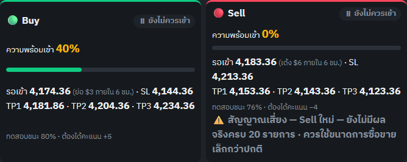
✨ ผลทดสอบ 2 ปี (research/indicators/sellnew.js · หักสเปรด · ต้องผ่านราคา $0.3)
- 15 นาที Sell ใหม่: คะแนน −4 · รอเด้ง $5 ภายใน 2 ชม. · SL $15 · TP 3.75/15/30 → 1,330 ไม้ ชนะ 87% +$1,219 กำไรทุกช่วง (ล่าสุด +$531)
- 30 นาที Sell ใหม่: คะแนน −3 · รอเด้ง $5 ภายใน 3 ชม. · SL $15 · TP 3.75/15/30 → 1,376 ไม้ ชนะ 87% +$1,269 (ล่าสุด +$651)
- 1 ชม. Sell: เข้าทันที 62% +$545 → รอเด้ง $6 ภายใน 6 ชม. 76% +$693 (ล่าสุด +$255)
- ลองหลายแบบ (~2,800) จึงติดป้าย ⚠️ "Sell ใหม่ — ยังไม่มีผลจริงครบ 20 รายการ" · ส่ง LINE ตามกรอบเดิม (15 นาทีไม่ส่ง)
⚡ เรียลไทม์ทุกอย่าง: ระบบเช็กสัญญาณต่อเนื่อง + ช่องจุดเข้าขยับตามราคา
19 ต.ค. 2569 · ผู้ใช้: "ขอแบบเรียลไทม์ทุกอย่าง"
🕰️ แบบเก่า
- ระบบบันทึกสัญญาณ (GitHub) รันรอบละ ~28 นาที แต่รอบถัดไปเริ่มช้า 15–40 นาที — ช่วงว่างไม่มีการเช็ก จุดเข้า 5 นาที/15 นาทีอาจหลุด
- ช่องจุดเข้า: ราคาเข้าอย่างเดียว อัปเดตทุก 60 วินาที
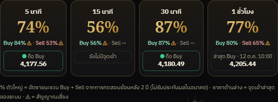
✨ แบบใหม่
- แต่ละรอบสั่งรอบถัดไปเข้าคิวทันที → จบรอบแล้วรอบใหม่เริ่มต่อ (ว่างแค่ ~1–2 นาทีตอนเตรียมเครื่อง) · cron เดิมยังอยู่เป็นตัวสำรอง · หยุดเองวันเสาร์–อาทิตย์
- ช่องจุดเข้า: ถือ = กำไร/ขาดทุนต่อออนซ์ขยับทุกครั้งที่ราคาเปลี่ยน (เขียว/แดง) · รอเข้า = "อีก $x" ถึงราคาเข้า · ข้อมูลใหม่ทุก 20 วินาที · มีไม้ใหม่ช่องกะพริบ
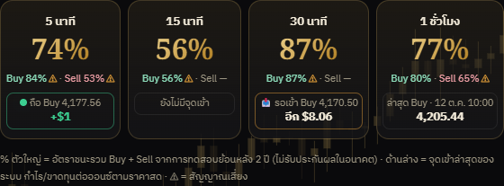
✨ มือถือ
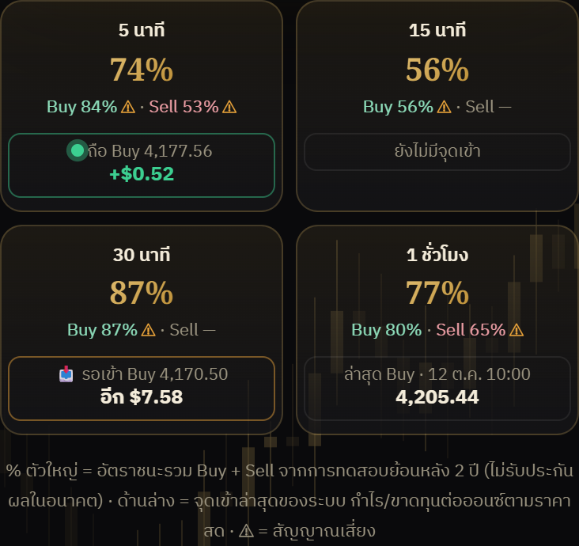
✂️ ช่อง 4 กรอบ: เอาบรรทัด "N จุดเข้า" ออก
19 ต.ค. 2569 · ผู้ใช้ (ภาพ "1,957 จุดเข้า · 230 · 765 · 435"): "เอาออก"
🕰️ แบบเก่า: มีจำนวนจุดเข้าในการทดสอบใต้ Buy / Sell
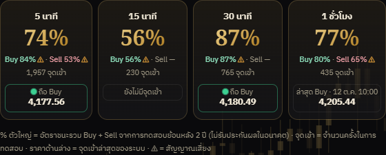
✨ แบบใหม่: % รวม · Buy / Sell · จุดเข้าล่าสุด (คำอธิบายตัดส่วน "จุดเข้า = จำนวนครั้ง" ออกด้วย)
✨ มือถือ
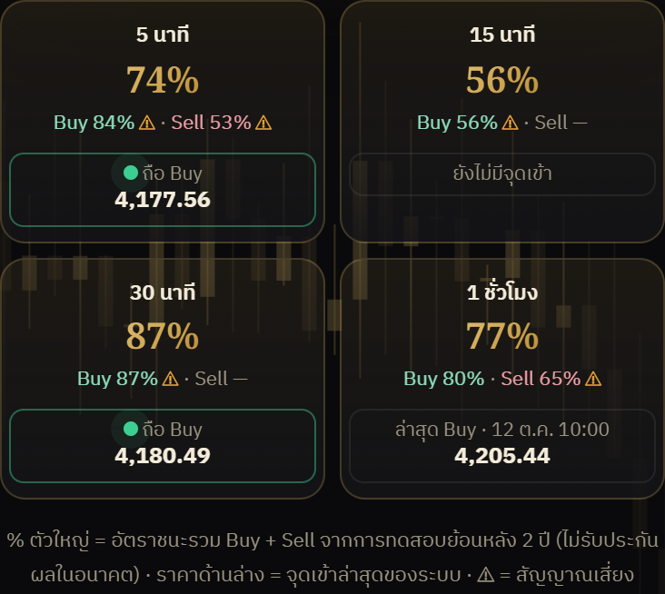
🧮 ช่อง 4 กรอบ: % รวม Buy + Sell + จุดเข้า
19 ต.ค. 2569 · ผู้ใช้: "แสดงเปอร์เซ็นรวมของบายกับเซลของแต่ละทามเฟรม ขอจุดเข้าในแต่ละช่องด้วย" → เลือก "ทั้งราคาและจำนวน" + "% แยกเก็บไว้ตัวเล็ก"
🕰️ แบบเก่า: Buy % | Sell % แยกกัน
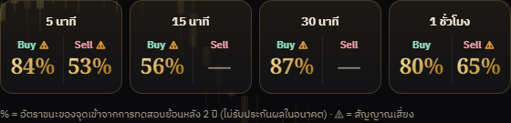
✨ แบบใหม่: % รวม (ถ่วงตามจำนวนจุดเข้า) ตัวใหญ่ · Buy / Sell ตัวเล็ก · จำนวนจุดเข้าในการทดสอบ · จุดเข้าล่าสุด (📥 รอเข้า / ● ถือ / ล่าสุด + เวลา)
✨ มือถือ
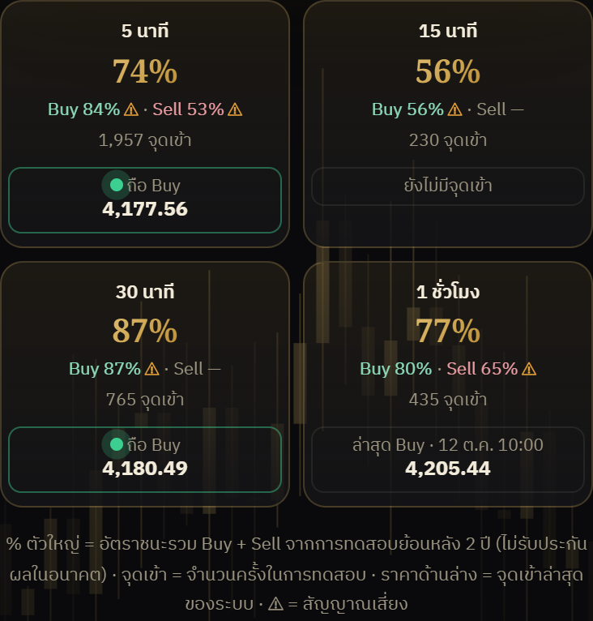
↩️ ช่อง 4 กรอบกลับมา — แสดงแค่ % จุดเข้า Buy / Sell
19 ต.ค. 2569 · ผู้ใช้: "เอากลับมาแบบเดิม ให้แสดงแค่เปอร์เซ็นจุดเข้าในการซื้อ ฝั่ง Buy Sell"
🕰️ แบบก่อนเอาออก: % + "จริง x%" + "ชนะ W/L" + แถบถือรายการ
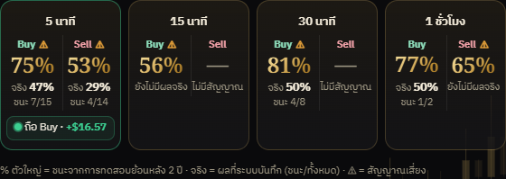
✨ แบบใหม่: Buy % · Sell % (⚠ ถ้าเสี่ยง) เท่านั้น · คำอธิบายบรรทัดเดียว · โหลดครั้งเดียว ไม่ดึงทุก 30 วินาที
✨ มือถือ
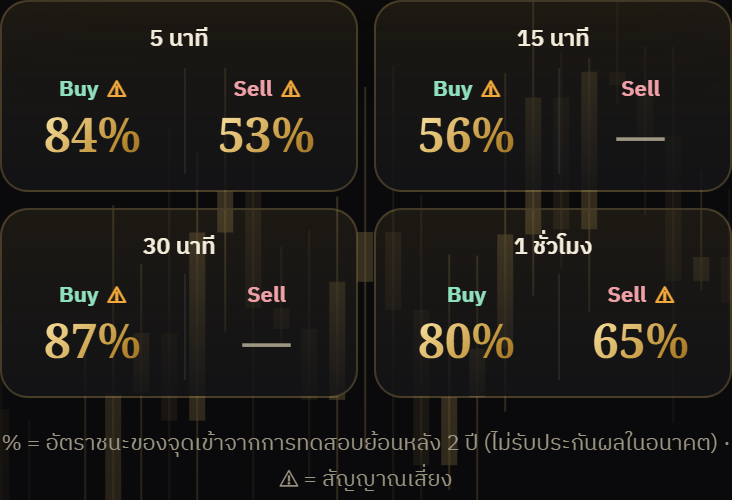
✂️ หน้าสมัคร: เอาช่องผลงาน 4 กรอบออก
19 ต.ค. 2569 · ผู้ใช้ (ภาพช่อง 5 นาที / 15 นาที / 30 นาที / 1 ชั่วโมง): "เอาออกไปเลย ไม่เอาแล้ว"
🕰️ แบบเก่า: ช่อง Buy | Sell 4 กรอบ + คำอธิบายใต้ช่อง
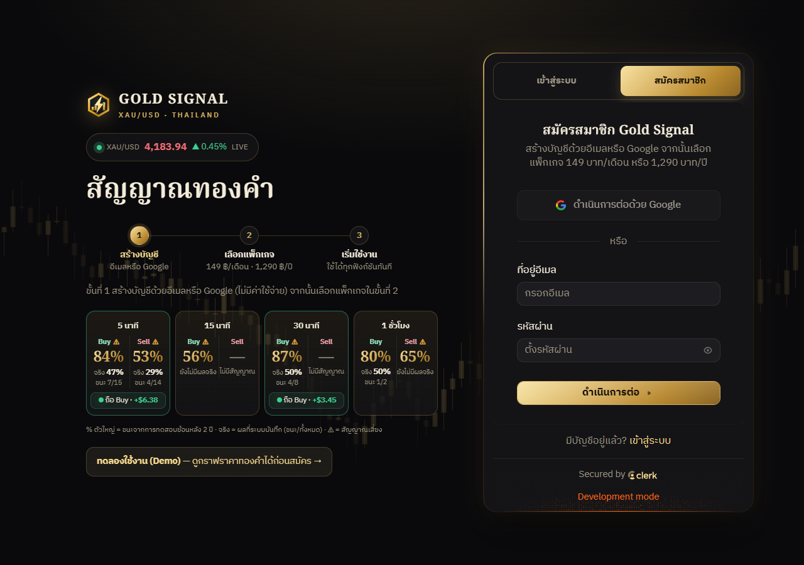
✨ แบบใหม่: โลโก้ · ราคาสด · หัวข้อ · ขั้นตอน 1-2-3 · ทดลองใช้งาน (ไม่ดึงข้อมูลผลงานทุก 30 วินาทีแล้ว)
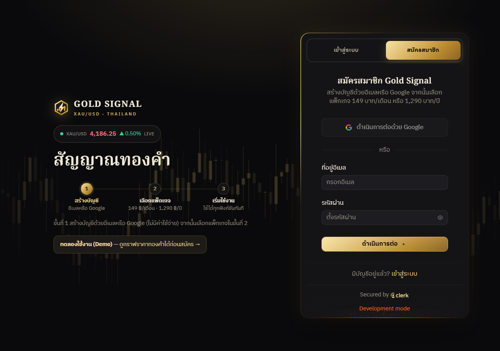
✨ มือถือ
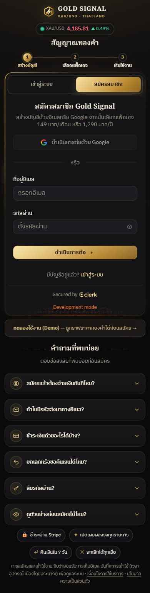
📥 จุดเข้าแม่นขึ้น: รอราคาย่อแล้วค่อยเข้า (Buy 5 นาที · 30 นาที · 1 ชม.)
19 ต.ค. 2569 · ผู้ใช้: "ขอแม่นยำจุดในการเข้า" → เลือก "ทั้ง 3 กรอบ Buy"
🕰️ แบบเก่า: เข้าทันทีที่ราคาตอนส่งสัญญาณ — 1 ชม. ทดสอบชนะ 77%
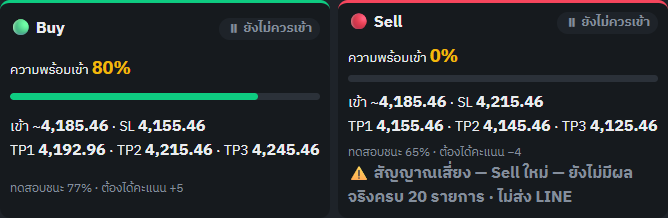
✨ แบบใหม่: "รอเข้า" ต่ำกว่าราคาตอนส่งสัญญาณ (1 ชม. ย่อ $3 ภายใน 6 ชม.) · ราคาไม่ถึง = ยกเลิก — 1 ชม. ทดสอบชนะ 80%
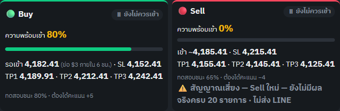
🕰️ ผลทดสอบ 2 ปี (เข้าทันที)
- 1 ชม.: ชนะ 77% · +$522 · ช่วงล่าสุด +$9
- 30 นาที: ชนะ 81% · +$355 · ช่วงล่าสุด −$99
- 5 นาที: ชนะ 75% · +$195 · ช่วงล่าสุด −$442
- LINE: "เข้า ~ราคา"
✨ ผลทดสอบ 2 ปี (รอราคาย่อ · ต้องผ่านราคาไป $0.3 ถึงนับว่าได้เข้า)
- 1 ชม. (ย่อ $3 · 6 ชม.): ชนะ 80% · +$775 · ช่วงล่าสุด +$105
- 30 นาที (ย่อ $5 · 3 ชม.): ชนะ 87% · +$833 · ช่วงล่าสุด +$1
- 5 นาที (ย่อ $5 · 1 ชม.): ชนะ 84% · +$1,750 · ช่วงล่าสุด −$75 (ยังเสี่ยง)
- รายการน้อยลงราว 10–20% · Sell ยังเข้าทันทีเหมือนเดิม
- LINE: "📥 รอเข้าที่ X (ราคาตอนนี้ Y · รอย่อ $N) ภายใน N ชม. — ตั้ง Buy Limit ได้เลย"
✨ หน้าสมัคร: ช่องที่กำลังรอราคาแสดง "รอเข้า Buy ราคา"
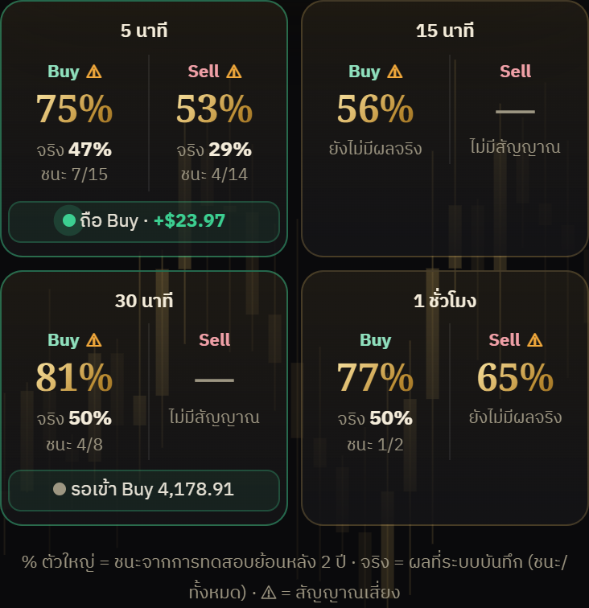
↩️ Buy | Sell แบบละเอียดกลับมา — อ่านง่ายขึ้น
19 ต.ค. 2569 · ผู้ใช้: "เอาแบบเดิมกลับมา" → เลือก "Buy | Sell แบบละเอียด" + "ปรับให้มันดูง่ายขึ้น"
🕰️ แบบเรียบง่าย (เพิ่งยกเลิก)
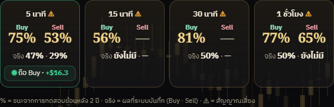
✨ แบบละเอียดอ่านง่าย: Buy / Sell คู่กันพร้อม % ทดสอบ · "จริง x%" · "ชนะ W/L" · ⚠ เล็กแทนป้าย "เสี่ยง" · คำอธิบายครั้งเดียวใต้ช่อง · ถือรายการบรรทัดเดียว
✨ มือถือ
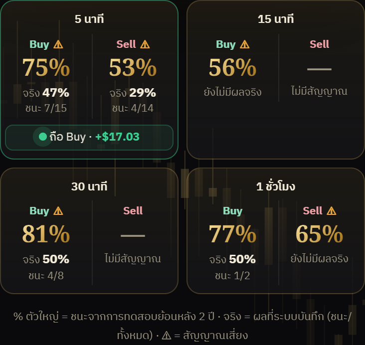
🧹 ช่องผลงาน Buy / Sell แบบเรียบง่าย
19 ต.ค. 2569 · ผู้ใช้ (ภาพช่อง Buy | Sell): "มันดูยุ่งเหยิงไป ออกแบบใหม่" → เลือก "ช่องเรียบง่าย"
🕰️ แบบเก่า (ป้ายเสี่ยงทุกฝั่ง · คำอธิบายซ้ำทุกช่อง · 4–6 บรรทัด)
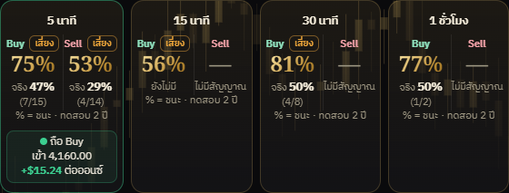
✨ แบบใหม่: ชื่อกรอบ (⚠ ถ้าเสี่ยง) · Buy % · Sell % · "จริง x% · y%" · ถือ Buy · ±$ บรรทัดเดียว · คำอธิบายครั้งเดียวใต้ช่อง
✨ มือถือ
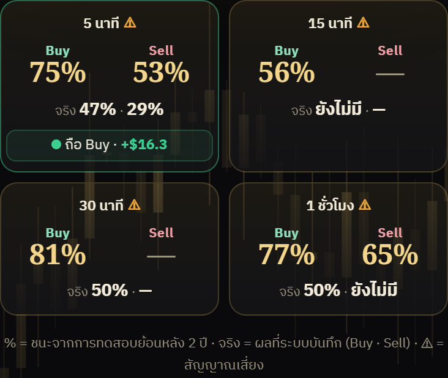
🟢🔴 ช่องผลงาน: แสดงทั้ง Buy และ Sell
19 ต.ค. 2569 · ผู้ใช้ (ภาพหน้าเข้าสู่ระบบ): "จุดเข้า Buy และ Sell เห็นมีแต่ Buy"
🕰️ แบบเก่า
- แต่ละช่องมีแต่ฝั่ง Buy (ทดสอบ % + ผลจริง)
✨ แบบใหม่
- แต่ละช่อง = ชื่อกรอบ + 2 ฝั่งคู่กัน: Buy | Sell — % ทดสอบ · "จริง N% (ชนะ/ทั้งหมด)" · ป้าย "เสี่ยง" ต่อฝั่ง
- 5 นาที: Buy 75% · Sell 53% (จริง 29%, 4/14) · 1 ชม.: Buy 77% · Sell 65% (ใหม่ ยังไม่มีผลจริง) · 15 / 30 นาที: Sell "ไม่มีสัญญาณ" (ทดสอบไม่ผ่าน)
- รายการที่ถืออยู่บอกฝั่ง ("ถือ Buy" / "ถือ Sell") · กระพริบทองเมื่อฝั่งไหนปิดรายการ
✨ คอม (5 นาที = รายการทดสอบ)
✨ มือถือ
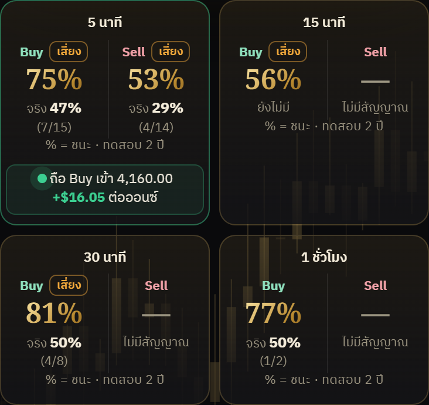
🔤 ช่องผลงาน 4 กรอบ: คำไม่ตัดกลางบรรทัด
19 ต.ค. 2569 · ผู้ใช้ (ภาพ 4 ช่อง): "คำในกรอบตก"
🕰️ แบบเก่า
- "(ชนะ 7 จาก / 15)" · "ยังไม่มีรายการที่ / ปิด" · "กำลังถือ · เข้า / 4,177.56" ตัดกลางคำ
✨ แบบใหม่
- "ผลจริง 47%" / "(ชนะ 7 จาก 15)" · "ผลจริง: ยังไม่มีรายการ" · "● กำลังถือ" / "เข้า 4,177.56" / "+$x ต่อออนซ์" — แต่ละท่อนอยู่บรรทัดเดียว · ตรวจ 1024 / 1280 / 1366 / 1440 / มือถือ ไม่ล้นกรอบ
✨ คอม
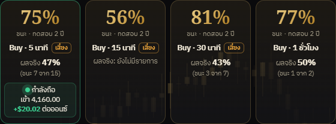
➕ ช่องผลงาน 4 กรอบ: เพิ่ม 15 นาที
19 ต.ค. 2569 · ผู้ใช้: "อยากเพิ่มของ 15 นาทีด้วย เอาเป็น 4 กรอบ"
🕰️ แบบเก่า
- 3 ช่อง: 5 นาที · 30 นาที · 1 ชม.
✨ แบบใหม่
- 4 ช่อง: 5 นาที · 15 นาที (ทดสอบชนะ 56% · เสี่ยง · ยังไม่มีผลจริงที่ปิด) · 30 นาที · 1 ชม. — คอมเรียง 4 ช่องแถวเดียว · มือถือ 2×2 · ขยับเรียลไทม์เหมือนช่องอื่น
✨ คอม (ช่อง 5 นาที = รายการทดสอบ)
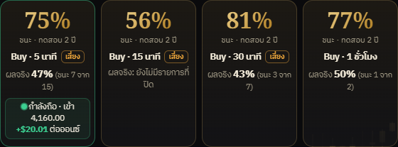
✨ มือถือ
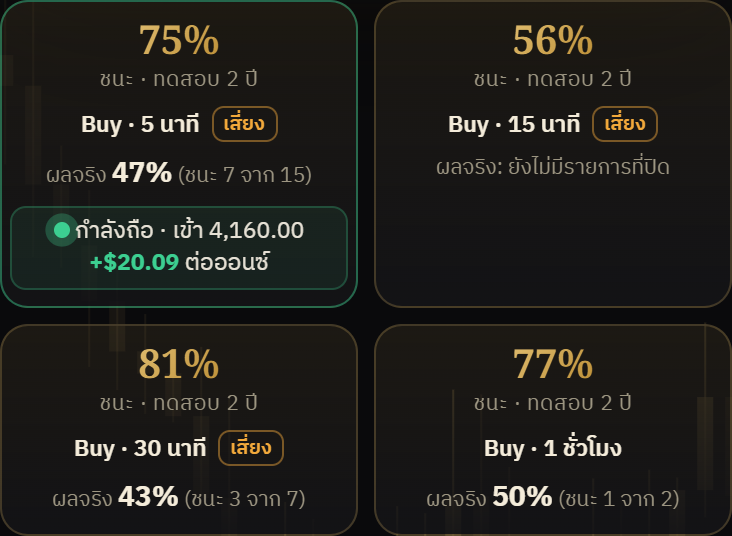
📊 ช่องผลงาน: ผลจริงแสดงเป็น % คู่กับผลทดสอบ
19 ต.ค. 2569 · ผู้ใช้ (ภาพแถว "ผลจริง 15 รายการ · ชนะ 7"): "ปรับตรงนี้ด้วย มันยังไม่สมส่วนกับเปอร์เซ็นต์"
🕰️ แบบเก่า
- 75% (ไม่บอกว่าคืออะไร) · ผลจริง 15 รายการ · ชนะ 7
✨ แบบใหม่
- 75% · ชนะ · ทดสอบ 2 ปี · ผลจริง 47% (ชนะ 7 จาก 15) — เทียบกันได้ทันที
- ผลจริงที่มีอยู่บันทึกก่อนเปลี่ยนเป็นแบบแบ่งปิดกำไร (19 ต.ค.)
✨ มือถือ (ช่อง 5 นาที = รายการทดสอบ)
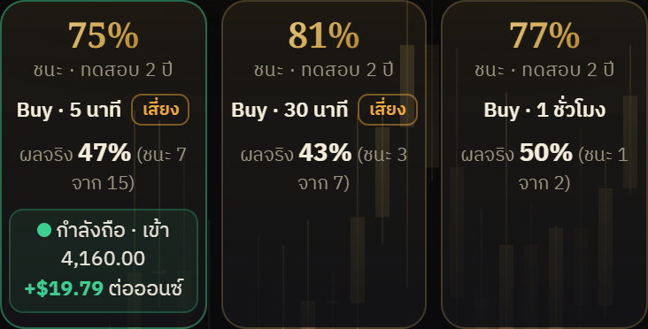
✨ คอม
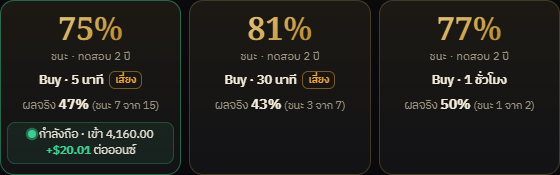
🔔 LINE ทุกจุดเข้า 5 นาที / 30 นาที / 1 ชม. · 🎯 แบ่งปิดกำไร 5 นาที และ 30 นาที
19 ต.ค. 2569 · ผู้ใช้: "อยากให้มีเข้าทุกทามเฟรมเลย 5 30 1 ชั่วโมง" → "ทำมาทั้งหมด เหมือนกับของ 5 นาที และทำตามข้อ 1 กับ 2 และ 3" → ผลทดสอบข้อ 2 (เข้าบ่อยขึ้น) แย่ลงทุกกรอบ → ยืนยันเลือก "ข้อ 1 + 3"
🕰️ แบบเก่า
- LINE จุดเข้าเฉพาะ 1 ชม. / 5 ชม. / 1 วัน
- 5 นาที: SL $15 · TP $15 เดียว · ทดสอบชนะ 54% (+$554)
- 30 นาที: SL $15 · TP $15 เดียว · ทดสอบชนะ 57% (+$957)
✨ แบบใหม่
- LINE ส่งทุกจุดเข้าของ 5 นาที · 30 นาที · 1 ชม. · 5 ชม. · 1 วัน — กรอบเสี่ยงมีบรรทัด "⚠️ สัญญาณเสี่ยง … ควรใช้ขนาดการซื้อขายเล็กกว่าปกติ" · ระบบพักอัตโนมัติ (ขาดทุนติดต่อกัน) ยังหยุดแจ้งเหมือนเดิม
- 5 นาที: SL $15 · TP $5 → SL ที่ทุน → $10 / $15 · ทดสอบชนะ 75% (+$137 · ช่วงล่าสุด −$445)
- 30 นาที: SL $15 · TP $3.75 → SL ที่ทุน → $15 / $30 · ทดสอบชนะ 81% (+$355 · ช่วงล่าสุด −$99)
- ไม่ลดเกณฑ์จุดเข้า (ข้อ 2) — ทดสอบแล้ว 1 ชม. ช่วงล่าสุดจะ −$246 และ 5 นาทีขาดทุนรวม −$381 · research/indicators/report-2026-10-19-partial-th-1.txt
✂️ ช่องผลงาน: เอาตัวเลข $ สะสมออก
19 ต.ค. 2569 · ผู้ใช้ (ภาพแถว −$28.24 / −$0.22 / −$23.51 ต่อออนซ์): "เอาอันนี้ออก"
🕰️ แบบเก่า
- ผลจริง 15 รายการ · ชนะ 7 / −$28.24 ต่อออนซ์
✨ แบบใหม่
- ผลจริง 15 รายการ · ชนะ 7 (ไม่มีแถว $) · แถว "● กำลังถือ ±$" ตอนมีรายการเปิดยังอยู่ · หน้าแรกยังแสดง $ ครบ
✨ คอม (ช่อง 5 นาที = รายการทดสอบ)
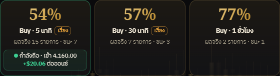
🎯 1 ชม.: แบ่งปิดกำไร — ทดสอบชนะ 57% → 77%
19 ต.ค. 2569 · ผู้ใช้: "ขอมากกว่า 70 ก็ได้ 50 เปอร์เซ็นต์ดูน้อยไป มันดูแบบเป็นแค่มือสมัครเล่น" → วิจัยแบบแบ่งปิดกำไร (research/indicators/report-2026-10-19-partial.txt) → เลือก "ใช้กับ 1 ชม."
🕰️ แบบเก่า
- Buy 1 ชม.: SL $30 · TP $30 / $40 / $60 · ทดสอบ 2 ปี ชนะ 57% · +$804
✨ แบบใหม่
- Buy 1 ชม.: SL $30 (เดิม) · TP1 $7.5 (ใกล้ ถึงบ่อย) → เลื่อน SL มาที่ทุน → ส่วนที่เหลือไป TP2 $30 / TP3 $60
- ทดสอบ 2 ปี (หักสเปรด): 399 รายการ · ชนะ 77% · +$522 · กำไรครบ 4 ช่วง (+234 / +245 / +34 / +9) — แบบเดียวจาก 30 แบบที่กำไรช่วงล่าสุดด้วย · แลกกับกำไรรวมที่น้อยลง (เดิม +$804)
- จุดเข้าเหมือนเดิม · กรอบอื่นเหมือนเดิม · หน้ากราฟ แชท ระบบบันทึก LINE ใช้เป้าใหม่ทันที · ผลจริงที่บันทึกก่อนหน้า (2 รายการ) เป็นกติกาเดิม
✨ หน้าสัญญาณ
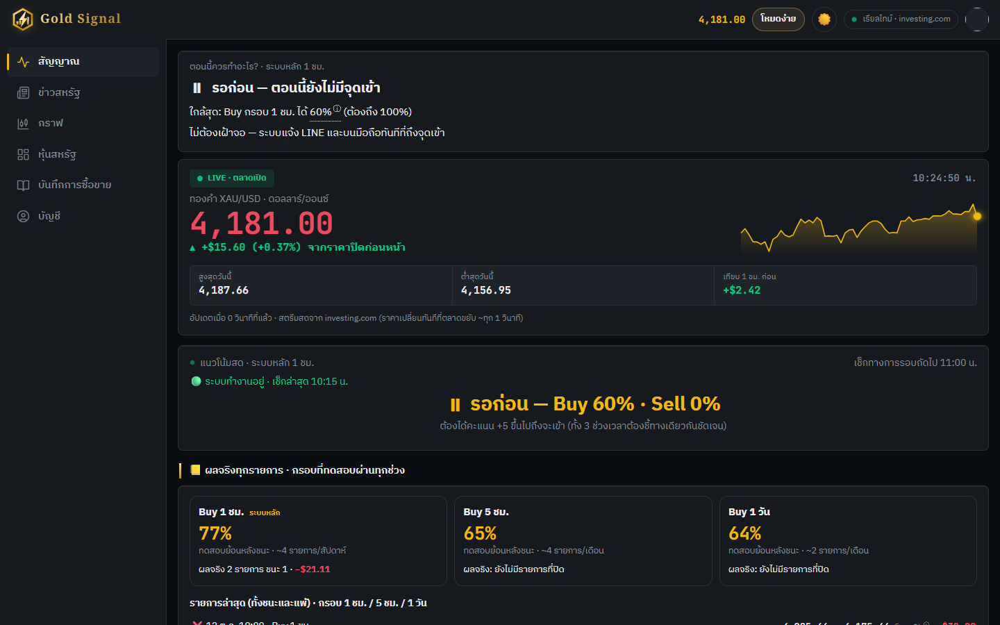
🔬 วิจัยแนวคิดใหม่ (เป้าชนะ 80%) — ผู้ใช้เลือก "ไม่เปลี่ยน"
19 ต.ค. 2569 · ผู้ใช้: "ทำแพ้บ่อย ชนะไม่ถึง 80% เลย เปลี่ยนความคิดใหม่ในการเทรด … หาจุดที่แม่นยำ และมีเหตุผลที่ชัดเจนในการเข้า" → ผลวิจัย → "ไม่เปลี่ยน"
🔎 แนวคิดที่ลอง
- A ย่อในแนวโน้ม: กรอบใหญ่ขาขึ้น + ราคาย่อแตะ EMA20 + แท่งกลับตัว + RSI 40–65 · SL ใต้จุดสวิง · 5 นาที / 30 นาที / 1 ชม. ทั้ง Buy และ Sell
- B ชนะบ่อย: จุดเข้าเดิม แต่เป้ากำไรใกล้ขึ้น (0.25–1 เท่าของ SL)
📊 ผล (2 ปี · สเปรด $0.4 · 4 ช่วง)
- A: ขาดทุนทุกกรอบ (เช่น 5 นาที −$394 ถึง −$2,231)
- B: ชนะ 75–87% ได้ แต่ส่วนใหญ่ขาดทุน · 5 ชม. เป้า $15 ชนะ 83% แต่ช่วงล่าสุด +$3 · 1 ชม. เป้าเดียว $22.5 ชนะ 60% +$1,062 (ระบบเดิม 57% +$804)
- ผู้ใช้เลือกไม่เปลี่ยน — ระบบเดิมใช้ต่อ · research/indicators/report-2026-10-19-newidea.txt
🔁 ช่องผลงานหน้าเข้าสู่ระบบ: 5 นาที · 30 นาที · 1 ชั่วโมง
19 ต.ค. 2569 · ผู้ใช้: "เอาเป็น 5 นาที 30 นาที 1 ชั่วโมง ได้ไหม ที่แสดงอยู่คนละทามเฟรม"
🕰️ แบบเก่า
- Buy · 1 ชั่วโมง (57%) · Buy · 5 ชั่วโมง (65%) · Buy · 1 วัน (64%)
✨ แบบใหม่
- Buy · 5 นาที เสี่ยง — ทดสอบ 54% · ผลจริง 15 รายการ ชนะ 7 · −$28.24
- Buy · 30 นาที เสี่ยง — ทดสอบ 57% · ผลจริง 7 รายการ ชนะ 3 · −$0.22
- Buy · 1 ชั่วโมง — ทดสอบ 57% · ผลจริง 2 รายการ ชนะ 1 · −$23.51
- แต่ละช่องยังขยับแบบเรียลไทม์ (กำลังถือ ±$ · กระพริบทองเมื่อปิดรายการ) · ป้าย "เสี่ยง" บอกว่ากรอบนั้นไม่ส่ง LINE · หน้าแรกยังแสดง 1 ชม. / 5 ชม. / 1 วัน
✨ คอม (ช่อง 5 นาที = รายการทดสอบ)
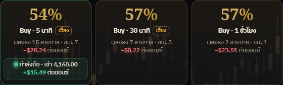
✨ มือถือ
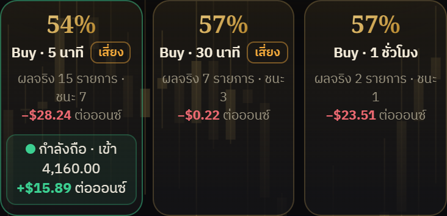
⚡ ช่องผลงาน 3 กรอบขยับแบบเรียลไทม์
19 ต.ค. 2569 · ผู้ใช้ (ภาพช่องผลงาน): "อยากให้ตัวเลขขยับด้วยแบบเรียลไทม์เวลาเข้าไม้ของทามเฟรมไหนแล้วชนะหรือแพ้"
🕰️ แบบเก่า
- ช่องแสดง % ทดสอบ + ผลจริงรวม อัปเดตทุก 60 วินาที · ไม่บอกว่ากรอบไหนกำลังถือรายการ
✨ แบบใหม่
- กรอบไหนเปิดรายการ → ช่องนั้นขอบเขียว + "● กำลังถือ · เข้า ราคา" + กำไร/ขาดทุน ±$ วิ่งตามราคาสดทุกวินาที
- รายการปิด (ชนะหรือแพ้) → "ผลจริง N รายการ · ชนะ · $" เปลี่ยนเอง + ช่องกระพริบทอง · เช็กทุก 30 วินาที (ระบบบันทึกปิดรายการภายใน ~5 นาที)
✨ คอม (รายการทดสอบ)
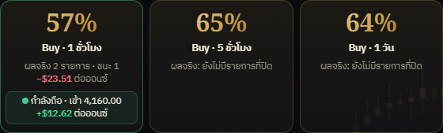
✨ มือถือ (รายการทดสอบ)
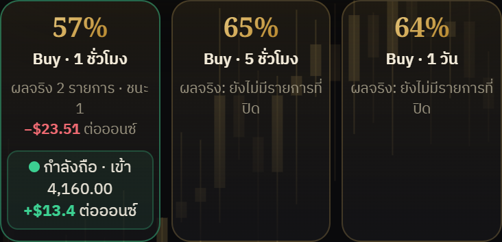
✂️ หน้าเข้าสู่ระบบ: เอาตารางรายการล่าสุดและคำอธิบายใต้ช่องผลงานออก
19 ต.ค. 2569 · ผู้ใช้ (ภาพส่วนตารางรายการล่าสุด → บรรทัดกรอบเสี่ยง → คำอธิบายร้อยละ/ผลรวม): "เอาออกไม่เอาแล้วข้อความนี้" → "ทั้งหมดที่แคปมา"
🕰️ แบบเก่า
- ใต้ช่องผลงาน 3 กรอบ: หัว "รายการล่าสุด · ระบบหลัก…" · ตาราง 2 รายการ + แถวความถี่สัญญาณ · บรรทัดกรอบเสี่ยง · "ร้อยละ = … · ผลรวมทุกรายการ 38 · 39% · −$103.17 · รายละเอียด"
✨ แบบใหม่
- เหลือช่องผลงาน 3 กรอบ (ผลทดสอบ + ผลจริงของแต่ละกรอบ ยังมีตัวเลขติดลบตามจริง) แล้วต่อด้วยปุ่ม Demo · หน้าแรก (welcome.html) ยังมีผลจริงครบทุกกรอบ + ตารางรายการล่าสุด
✨ คอม
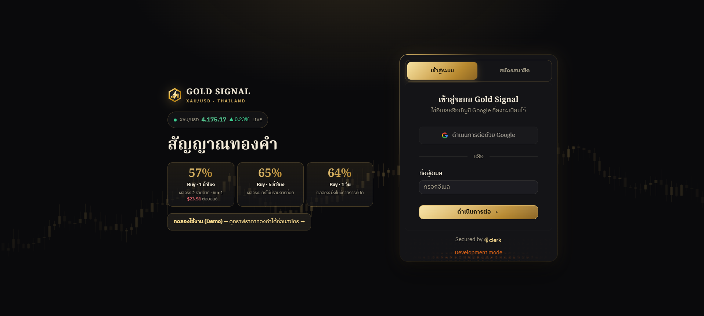
✨ มือถือ
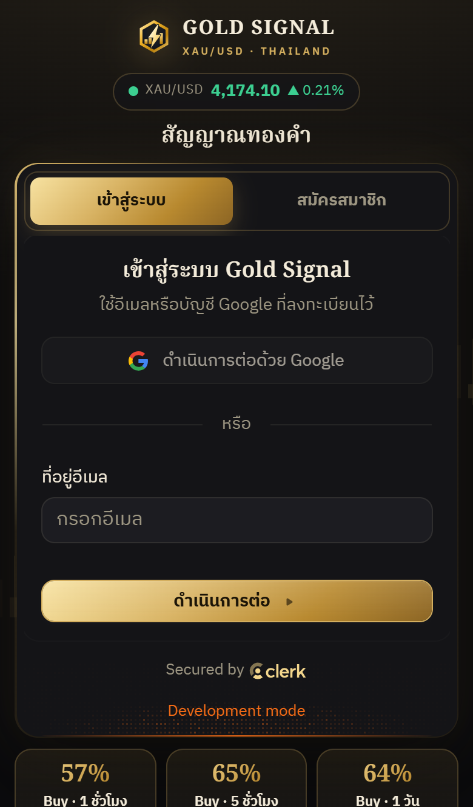
↩️ จุดเข้ากลับมาทุกกรอบเวลา
19 ต.ค. 2569 · ผู้ใช้: "เอาจุดเข้ามากลับมาทั้งหมด ทุกทามเฟรม" (หลังทำแบบ A)
🕰️ แบบ A (เช้าวันนี้)
- กรอบ 5/15/30 นาที, 1 สัปดาห์, Sell 5 นาที, Sell 1 ชม. "⏸ ปิดจุดเข้า" — จุดเข้าเหลือ Buy 1 ชม. / 5 ชม. / 1 วัน
✨ ตอนนี้
- ทุกกรอบให้จุดเข้าเหมือนก่อนแบบ A — กรอบที่ทดสอบไม่ผ่านทุกช่วงติดป้าย ⚠️ สัญญาณเสี่ยง บันทึกผลจริง แต่ไม่ส่ง LINE · LINE ยังเฉพาะ 1 ชม. / 5 ชม. / 1 วัน
- ตารางรายการล่าสุดบนหน้าเข้าสู่ระบบ / หน้าแรก ยังแสดงเฉพาะระบบหลัก (ส่วนนี้ไม่ได้สั่งเปลี่ยน) · บรรทัดกรอบเสี่ยงเปลี่ยนเป็น "ยังให้จุดเข้า ติดป้ายเสี่ยง ไม่ส่ง LINE"
✅ แบบ A: ตารางเฉพาะระบบหลัก + หยุดจุดเข้ากรอบเสี่ยง
19 ต.ค. 2569 · ผู้ใช้ (ภาพตารางรายการล่าสุด): "มันดูไม่น่าเชื่อถือเลย ติดลบมากกว่าบวกอีก แปลว่าเครื่องมือเรายังไม่แม่นยำมากพอ" → ขอดูตัวอย่าง A/B/C (compare/preview/เลือกแบบ-ABC.png) → "ทำAมา"
🕰️ แบบเก่า
- ตารางรายการล่าสุดรวมทุกกรอบ — 5 แถวล่าสุดเป็นกรอบเสี่ยง 5/30 นาทีเกือบทั้งหมด (ขาดทุน 3 ใน 5)
- กรอบ 5/15/30 นาที, 1 สัปดาห์, Sell 5 นาที และ Sell 1 ชม. ยังให้จุดเข้า (ติดป้ายเสี่ยง ไม่ส่ง LINE) — ผลจริง 36 รายการ ชนะ 14 · −$79.66
✨ แบบใหม่
- ตาราง "รายการล่าสุด · ระบบหลัก 1 ชม. / 5 ชม. / 1 วัน" (ตอนนี้ 2 รายการ: −$30 · +$6.49) + แถวบอกความถี่สัญญาณ · ใต้ตาราง: "กรอบเสี่ยง … ผลจริง 36 รายการ · ชนะ 14 · −$79.66 — หยุดให้จุดเข้าแล้ว ตั้งแต่ 19 ต.ค." · ยอดรวมทุกรายการ 38 · 39% · −$103.17 ยังแสดง (ไม่ซ่อน)
- ทุกฝั่งที่เสี่ยงหยุดให้จุดเข้า ไม่บันทึก ไม่ส่ง LINE — กราฟ ลูกศรทิศทาง และตัวเลขทดสอบยังดูได้ ("⏸ ปิดจุดเข้า — เหลือเฉพาะกรอบที่ทดสอบผ่านทุกช่วง (19 ต.ค.)") · จุดเข้าเหลือ Buy 1 ชม. / 5 ชม. / 1 วัน (ราว 2–4 ครั้ง/สัปดาห์)
- ข้อความในหน้าสมาชิก แชท และคู่มือที่เคยพูดถึง "Sell มีแค่กรอบ 5 นาที" / "ป้ายเสี่ยงใช้ขนาดเล็ก" แก้ตามแล้ว
✨ หน้าเข้าสู่ระบบ (คอม · แถวบนสุด = รายการทดสอบ)
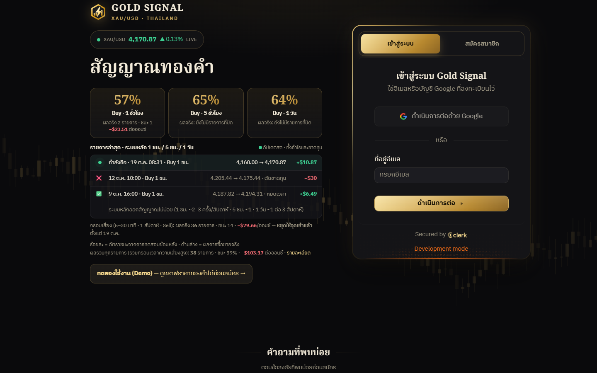
✨ หน้าแรก (มือถือ)
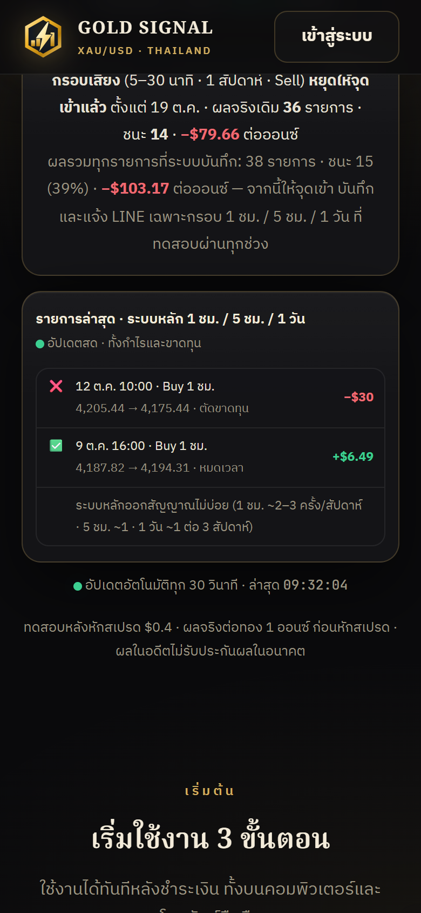
✨ หน้ากราฟ: Sell ปิดจุดเข้า
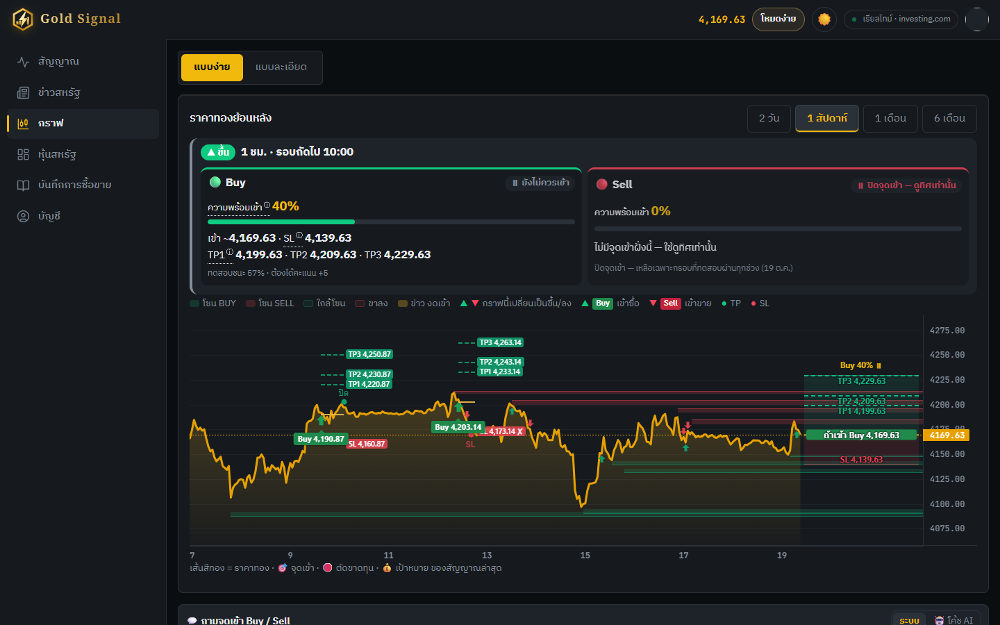
🔬 วิจัยความแม่นยำ: ตัวกรองตามช่วงเวลา — ไม่ผ่าน ไม่เปลี่ยนระบบ
19 ต.ค. 2569 · ผู้ใช้: "อยากให้แม่นยำกว่านี้" → เลือก "วิจัยใหม่ แต่ปรับเฉพาะถ้าผ่านจริง"
🕰️ ที่เคยทดสอบแล้ว (15–16 ต.ค.)
- ตัวกรองจุดเข้า ~200 แบบ (ไม่ไล่ราคา, RSI, ย่อแตะ EMA9, กรอบใหญ่, คะแนนเกิน, ความผันผวน) · หลายกรอบตรงกัน · ตัวชี้วัดทุกตัว · SL/TP 72 แบบต่อกรอบ — ไม่มีแบบไหนดีขึ้นอย่างสม่ำเสมอ
✨ รอบนี้ (แนวใหม่ที่ยังไม่เคยลอง)
- กรองตามช่วงตลาด (เอเชีย 07–14 · ลอนดอน 14–19 · นิวยอร์ก 19–03 น.) และวันในสัปดาห์ — 7 แบบ (ตั้งใจให้น้อย ลดโอกาสเจอแบบที่ดีเพราะโชค) · กรอบ 1 ชม. / 5 ชม. / 1 วัน · ข้อมูล 2 ปี (1 วัน 5 ปี) · สเปรด $0.4 · โค้ดเดียวกับเว็บ
- เกณฑ์: ต้องดีขึ้นทั้ง % ชนะ และ $ ในช่วง 1–3 ทุกช่วง แล้วดูช่วง 4 ที่ไม่ได้ใช้เลือก
- ผล: 0 จาก 21 แบบผ่าน — เช่น 1 ชม. ไม่เข้าช่วงเอเชีย ช่วงล่าสุด −$1 (ระบบเดิม +$47) · 5 ชม. ไม่เข้าช่วงนิวยอร์ก ชนะ 67% แต่ช่วงแรกแย่ลง · 1 วัน ไม่เข้าวันศุกร์ +$2,915 แต่ช่วงแรก % ชนะลดลง
- ระบบปัจจุบันยังดีที่สุด: 1 ชม. 57% (255 รายการ) · 5 ชม. 65% (93) · 1 วัน 64% (94) — ผลจริงตอนนี้มี 2 รายการ ยังน้อยเกินตัดสิน · ไฟล์ research/indicators/report-2026-10-19-time.txt
🧾 รายการล่าสุดแบบเรียลไทม์ทีละรายการ (หน้าเข้าสู่ระบบ + หน้าแรก)
19 ต.ค. 2569 · ผู้ใช้ (ภาพช่องผลงาน 3 กรอบ): "ตรงนี้ดูน่าเชื่อถือแบบมีราคาติดลบด้วย อยากให้เรียลไทม์แต่ละไม้ที่ให้เข้า" → เลือก "รายการล่าสุด + รายการที่เปิดอยู่วิ่งสด"
🕰️ แบบเก่า
- เห็นแค่ยอดรวมต่อกรอบ (ผลจริง 2 รายการ · ชนะ 1 · −$23.51) และยอดรวมทุกรายการ — ไม่เห็นว่าแต่ละรายการเข้า/ออกที่ไหน ผลเท่าไร
✨ แบบใหม่
- ตาราง "รายการล่าสุด · อัปเดตสด": ทุกรายการที่ปิดแล้ว 5–6 รายการล่าสุด (เวลาเข้า · กรอบ · ราคาเข้า → ออก · ตัดขาดทุน/ถึงเป้า/หมดเวลา · ±$) ทั้งกำไรและขาดทุน · กรอบเสี่ยงติดป้าย "เสี่ยง"
- รายการที่ระบบกำลังถือ (กรอบ 1 ชม./5 ชม./1 วัน) อยู่แถวบนสุด ● กำลังถือ — ราคาเข้า → ราคาตอนนี้ และกำไร/ขาดทุนวิ่งตามราคาสดทุกวินาที (หน้าแรกแสดงในกล่อง "รายการที่เปิดอยู่ขณะนี้" เหมือนเดิม)
- ข้อมูลจากระบบบันทึกจริง (/api/market?blog=1&stats=1 → recent) อัปเดตทุก 30–60 วินาที
✨ หน้าเข้าสู่ระบบ (คอม · แถวบนสุด = รายการทดสอบ)
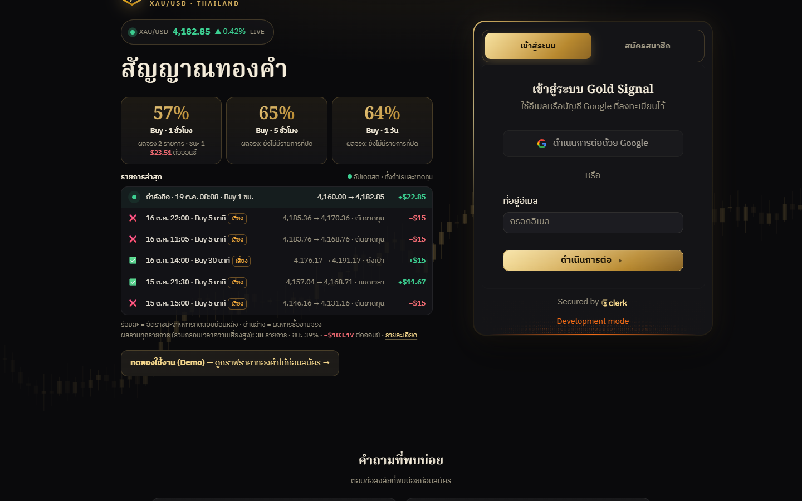
✨ หน้าเข้าสู่ระบบ (มือถือ)
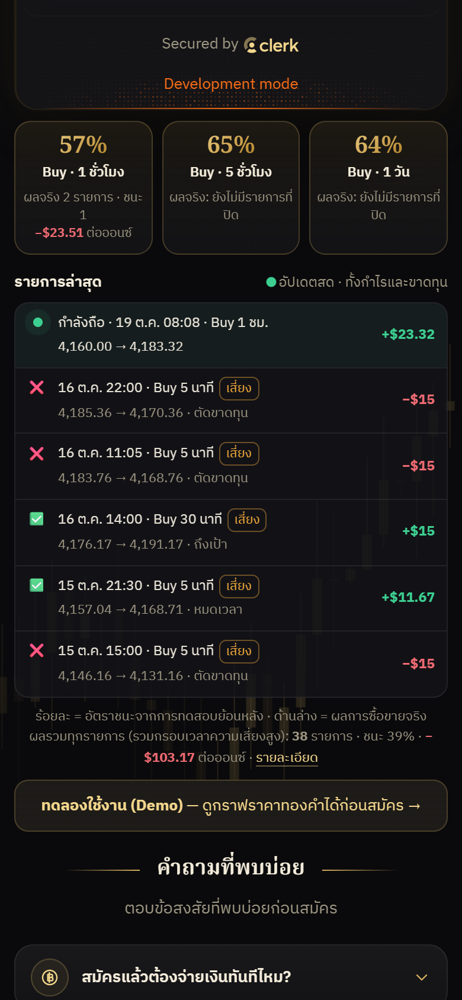
✨ หน้าแรก (มือถือ)
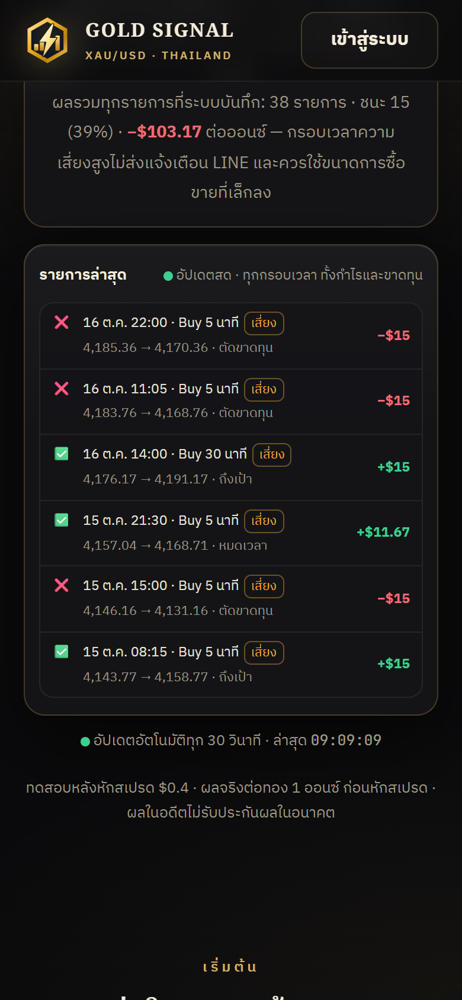
📊 LINE สรุปรายสัปดาห์ทุกวันเสาร์กลับมา
19 ต.ค. 2569 · ผู้ใช้: "ไม่เห็นสรุปของวันเสาร์เลย ที่จะสรุปตั้งแต่จันถึงศุกร์ ว่าเป็นยังไงสัปดาห์นี้" · "เอาแบบเดิมกลับมานะที่แจ้งเตือน"
🕰️ แบบเก่า
- ทุกเสาร์ 07:30 ระบบคำนวณสรุปจันทร์–ศุกร์ แต่ไม่ส่ง LINE (ปิดไว้ตั้งแต่ 9 ต.ค. ตอนให้ LINE เหลือแค่จุดเข้า + เตือนข่าว)
- สั่งรันเองได้เฉพาะสัปดาห์ปัจจุบัน
✨ แบบใหม่
- ทุกเสาร์ 07:30 ส่ง LINE สรุปจันทร์–ศุกร์: ระบบหลัก 1 ชม. · สูตรรายวัน (ข้อมูลประกอบ) · กรอบอื่นทั้งชนะและแพ้ · รวมทั้งสัปดาห์ · ถ้าซื้อขาย 0.01 / 0.10 lot · เทียบสัปดาห์ก่อน
- สั่งรันเองย้อนหลังได้ (ช่อง week_of) โดยไม่บันทึกซ้ำ — ทดสอบสัปดาห์ 12–16 ต.ค. แบบไม่ส่ง: สร้างข้อความครบ (ระบบหลัก 1 รายการ −$30.40 · 5 นาที 22 รายการ −$123.33 · 30 นาที 3 รายการ −$16.20)
- รวมกับที่เปิดคืนก่อนหน้า: LINE = ภาพรวมเช้า 07:05 · เตือนข่าว 30 นาที · จุดเข้า 1 ชม./5 ชม./1 วัน · สรุปเสาร์ — เหมือนเดิมก่อน 9 ต.ค.
🔔 LINE ภาพรวมเช้ากลับมา · 📱 หน้าสมัครบนมือถือเล็กลง · ⚡ หน้าสัญญาณเบาลงตอนตลาดเปิด
19 ต.ค. 2569 · ผู้ใช้: "ทำไมไม่เห็นมีการแจ้งเตือนตอนเช้าแล้ว ปกติมี และอยากให้ปรับในโทรศัพท์ให้ดูเล็กลงอีกนิด มันดูใหญ่ไปตอนเปิดสมัครสมาชิก" → "ทำมาให้มีแจ้งเตือนด้วย … เอาแบบเดิมกลับมาที่แจ้งเตือนในไลน์" → เลือก "แบบเดิม: 1 ชม. / 5 ชม. / 1 วัน"
🕰️ แบบเก่า
- LINE ภาพรวมทองทุกเช้า 07:05 ปิดอยู่ (ตั้งแต่ 17 ต.ค.) — วันที่ไม่มีจุดเข้า 1 ชม./5 ชม./1 วัน สมาชิกไม่ได้รับ LINE เลย
- หน้าสมัครบนมือถือ: โลโก้ 40px · ตัวอักษรกล่องสมัคร 16px · ปุ่ม "ดำเนินการต่อ" อยู่ใต้จอ (ต้องเลื่อน)
- ตอนตลาดเปิด ทุกราคาใหม่ (ทุกวินาที) คำนวณกราฟ + ตัวชี้วัดทั้งหมดใหม่ แม้ไม่ได้เปิดแท็บกราฟ (หน้าสัญญาณ ~43% บนมือถือจำลอง)
✨ แบบใหม่
- LINE ภาพรวมทองทุกเช้า 07:05 (วันทำการ) กลับมาเป็นค่าเริ่มต้น · จุดเข้า 1 ชม. / 5 ชม. / 1 วัน ส่งทุกครั้งเหมือนเดิม · ถ้าโควตา LINE ใกล้หมด ภาพรวมเช้าไปเป็นแจ้งเตือนบนเครื่อง (จุดเข้ายังส่ง LINE) · ข้อความในแท็บบัญชีอัปเดตตาม
- หน้าสมัครบนมือถือเล็กลงหนึ่งขนาด: โลโก้ 28px · หัวข้อ 18px · ขั้นตอน/แท็บ/ช่องผลงาน/คำถามเล็กลง · ตัวอักษรกล่อง 14px (ช่องกรอกยัง 16px ไม่ให้ iPhone ซูมเอง) · ฟอร์มสมัครทั้งชุดถึงปุ่ม "ดำเนินการต่อ" อยู่ในจอแรก
- คำนวณกราฟเต็มเฉพาะตอนเปิดแท็บกราฟ · แท็บอื่นอัปเดตแค่ตัวเลขที่เห็น · เปิดแท็บกราฟแล้วตามทันทันที (ทดสอบ: แท่งล่าสุด = ราคาสด) · ตัวประมวลผลราคาสดใช้เวลาลดลงประมาณครึ่ง
🕰️ สมัครสมาชิก (มือถือ)
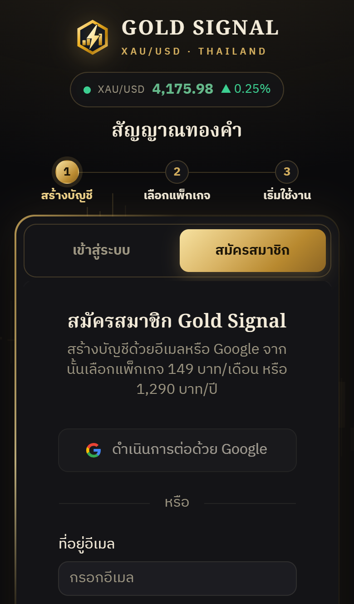
✨ สมัครสมาชิก (มือถือ)
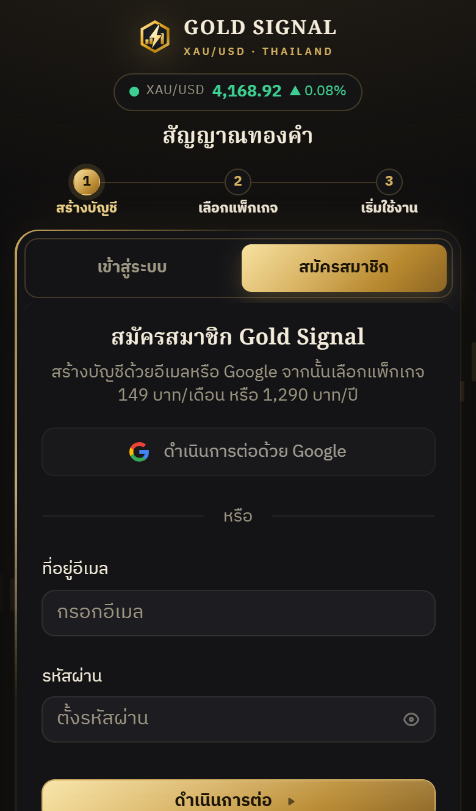
🕰️ เข้าสู่ระบบ (มือถือ)
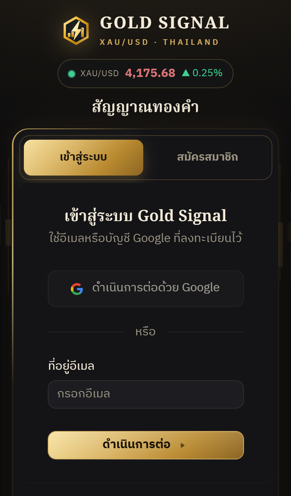
✨ เข้าสู่ระบบ (มือถือ)
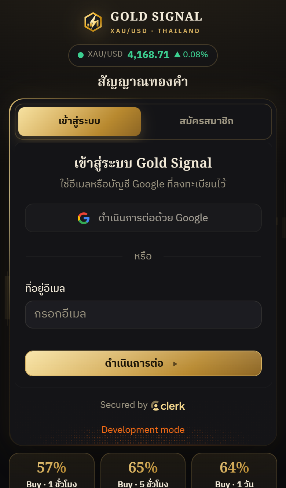
✍️ ข้อความ LINE · โค้ช AI · ร่างประกาศการตลาด ใช้ภาษาทางการ
17 ต.ค. 2569 · ผู้ใช้: "อยากปรับอะไรไหมเพิ่มไหมหรือลดอะไรไหม" → ผมเสนอ (แนะนำข้อ 3) → "ทำมา"
🕰️ แบบเก่า
- LINE: "ผลจริง N ไม้" · "ไม้นี้ไม่ขาดทุนแล้ว" · "หมดเวลาถือ ปิดไม้" · "ขนาดไม้" · "ไม่เทรดดีกว่า" · "ไม่ได้เทรด" · สรุปรายสัปดาห์ "ไม้ดีที่สุด/แย่ที่สุด" "ถ้าเทรดไม้ละ 0.01 lot"
- โค้ช AI: "พี่โค้ช" พี่ชายคุยกับ "น้อง" น้ำเสียงเป็นกันเอง · หัวกล่องแชท "🤖 พี่โค้ช AI" · "พี่โค้ชกำลังคิด…" · ปุ่ม "ให้พี่โค้ชดูสมุดของฉัน"
- ร่างประกาศการตลาด: สั่ง AI ให้เขียน "เป็นกันเอง"
✨ แบบใหม่
- LINE: "ผลจริง N รายการ" · "รายการนี้ไม่ขาดทุนแล้ว" · "ปิดรายการ" · "ขนาดการซื้อขาย" · "ไม่ซื้อขายดีกว่า" · "รายการดีที่สุด/แย่ที่สุด" · "ถ้าซื้อขายรายการละ 0.01 lot" — ตัวเลขเหมือนเดิม
- โค้ช AI: "โค้ช AI" ตอบสุภาพ เป็นทางการ กระชับ เรียกผู้ใช้ว่า "คุณ" ใช้ "รายการ/ซื้อขาย/ถือสถานะ" · หัวกล่อง "🤖 โค้ช AI" · "โค้ช AI กำลังวิเคราะห์…" · ปุ่ม "ให้โค้ช AI ดูบันทึกของฉัน" · หัวการ์ด "บันทึกการซื้อขายของฉัน"
- ร่างประกาศการตลาด: "สุภาพ เป็นทางการ กระชับ" + ห้ามใช้ "ไม้/เทรด" · คำต้องห้ามและบรรทัดเตือนความเสี่ยงเหมือนเดิม
✍️ หน้าสมาชิกใช้ภาษาทางการ · ⚡ เปลี่ยนกรอบเวลาได้ทันที
17 ต.ค. 2569 · ผู้ใช้: "อยากปรับอะไรไหม" → ผมเสนอ 4 ข้อ → "ทำมา" (ข้อ 1 ภาษาในหน้าสมาชิก + ข้อ 2 สลับกรอบเวลา)
🕰️ แบบเก่า
- ถือไม้ · ปิดไม้ · เปิดไม้ใหม่ · ขนาดไม้ · ใช้ไม้เล็ก · ผลจริง N ไม้ · ไม้ล่าสุด · ผลจริงทุกไม้ · แพ้ติดกัน
- สมุดเทรด · นักเทรด · การเทรด · "ไม่เทรดดีกว่า" · โหมดเทรดเดอร์ · ปุ่มแชท "แบบนักเทรด"
- สลับกรอบเวลา: รอโหลดจากเน็ตทุกครั้ง ~1.6 วินาที (มือถือจำลองรุ่นช้า) แม้เพิ่งเปิดกรอบนั้นไป
✨ แบบใหม่
- ถือสถานะ · ปิดรายการ · เปิดรายการใหม่ · ขนาดการซื้อขาย · ใช้ขนาดเล็ก · ผลจริง N รายการ · รายการล่าสุด · ผลจริงทุกรายการ · ขาดทุนติดต่อกัน
- บันทึกการซื้อขาย · นักลงทุน · การซื้อขาย · "ไม่ซื้อขายดีกว่า" · โหมดละเอียด · ปุ่มแชท "แบบละเอียด" — 13 ไฟล์ ~120 จุด เปลี่ยนเฉพาะข้อความที่ผู้ใช้เห็น (ไม่แตะโค้ด/ตัวเลข) · แชทยังเข้าใจคำเก่า "ถือไม้" และคำใหม่ "ถือสถานะ"
- สลับกรอบเวลา: เก็บแท่งเทียนของแต่ละกรอบไว้ในเครื่อง 10 นาที → กลับไปกรอบเดิม ~0.2 วินาที · โหลดกรอบ 1 ชม. / 5 ชม. / 1 วัน / 15 นาที ไว้ก่อนครั้งเดียวหลังเปิดเว็บ → กดครั้งแรกก็ 0.2–0.8 วินาที · แล้วอัปเดตจากเน็ตตามปกติ
✨ หน้าสัญญาณ (คอม)
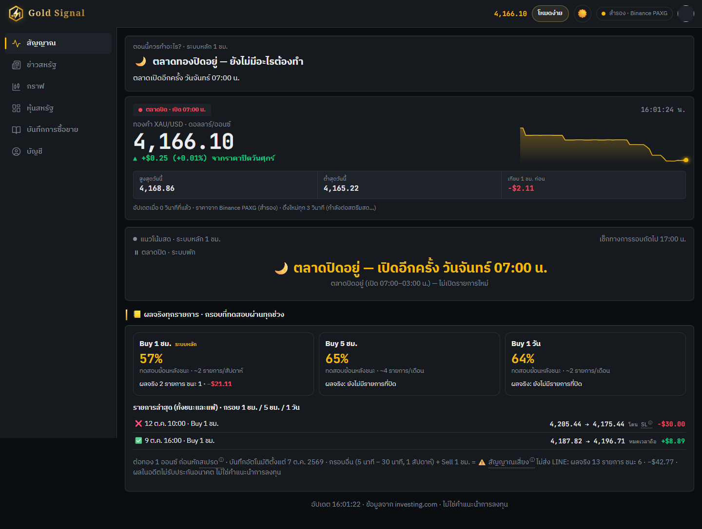
✨ บันทึกการซื้อขาย (มือถือแนวนอน)
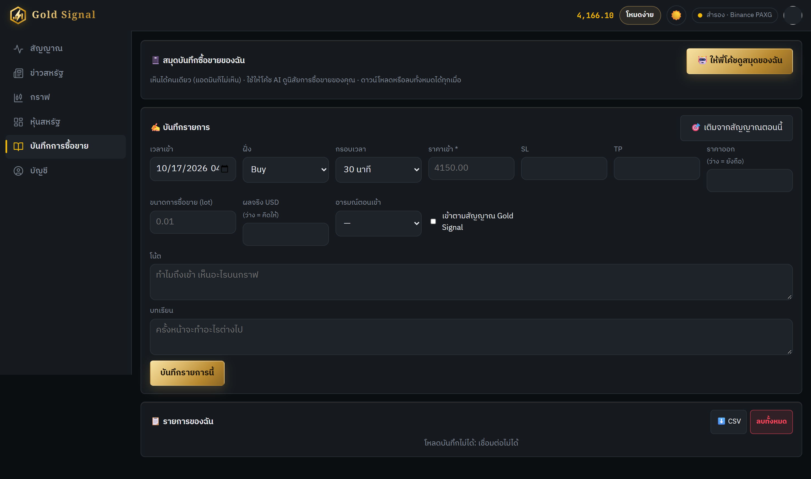
✨ หน้ากราฟ (คอม)
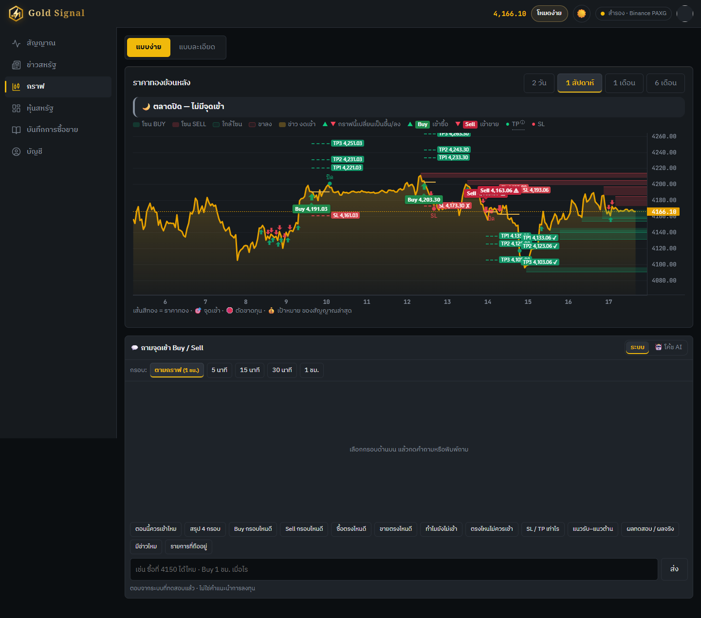
⚡ ลื่นและเบาขึ้น: เครื่องไม่ต้องทำงานตลอดเวลาที่เปิดเว็บทิ้งไว้
17 ต.ค. 2569 · ผู้ใช้: "ขอเสถียรมากกว่านี้ ให้มันสมดุลและสมูทไหลลื่นในการใช้งาน" · วัดบนมือถือจำลอง (แนวนอน · CPU ช้าลง 4 เท่า) เปิดหน้าทิ้งไว้ 10 วินาที — หน้าตาไม่เปลี่ยน
🕰️ แบบเก่า
- หน้าโหลด (splash) จางหายแล้วแต่ยังอยู่ในหน้า — แอนิเมชัน ~40 ตัวเล่นต่อตลอดการใช้งาน
- ฝุ่นทองพื้นหลัง (motion.js) ปิดในธีมมืดแล้ว แต่ลูปยังวิ่ง 60 ครั้ง/วินาที
- จุดกะพริบข้างราคาสด (SVG + เงาเรือง) ทำให้วาดกราฟเล็กใหม่ทุกเฟรม
- จุด LIVE แบบวงเงากระเพื่อม (box-shadow) ทำให้คำนวณทั้งแท็บใหม่ทุกเฟรม
- แท็บหุ้นสหรัฐ: ออกจากแท็บแล้วยังดึงราคาต่อ (~60 KB ทุก 1 วินาทีตอนสตรีมเงียบ)
- ภาระเครื่องตอนเปิดทิ้งไว้: หน้าสัญญาณ 83% · กราฟ 84% · ผลงาน 87% · บันทึก 82% · บัญชี 83%
✨ แบบใหม่
- splash จางหายแล้วถูกนำออกจากหน้า (display: none) — ยังเล่นครั้งเดียวต่อแท็บเหมือนเดิม
- ธีมมืด: ลูปฝุ่นทองหยุดจริง · สลับเป็นธีมสว่างแล้วกลับมาเล่น
- จุดกะพริบข้างราคา: จุดใน SVG นิ่ง มีจุด HTML ซ้อนตำแหน่งเดียวกันทำจังหวะกะพริบด้วย transform (GPU) — หน้าตาเหมือนเดิม
- จุด LIVE / ป้ายตลาดเปิด / เส้นจุดเข้า: กะพริบด้วย opacity + scale (GPU) จังหวะเดิม
- แท็บหุ้นสหรัฐ: ออกจากแท็บหรือพับหน้าจอ → หยุดราคาสดทั้งหมด (ทดสอบ 30 วินาที = 0 คำขอ) · กลับมา → ต่อใหม่เอง · ตอนสตรีมเงียบดึงทุก 5 วินาที (เดิม 1)
- ภาระเครื่อง: หน้าสัญญาณ 17–19% · กราฟ 16% · ผลงาน 14% · บันทึก 19% · บัญชี 21% · จำลองตลาดเปิด 21%
✍️ ภาษาทางการทั้งหน้าแรก · หน้าชำระเงิน · กล่องเข้าสู่ระบบ
17 ต.ค. 2569 · ผู้ใช้: "อยากปรับอะไรไหม" → ผมเสนอ 4 ข้อ → "ปรับมา" (ทำข้อ 2 + 3 ตามที่แนะนำ)
🕰️ แบบเก่า
- หน้าแรก: "สัญญาณเทรดทองคำ / ที่ตรวจสอบได้ทุกไม้" · "เปิดผลจริงทุกไม้ให้ดู ทั้งไม้ที่ชนะและไม้ที่แพ้" · "ทุกอย่างที่ต้องใช้ในการเทรดทอง" · "ตัวเลขจริง ไม่ตกแต่ง" · "พร้อมเทรดทองอย่างมีระบบหรือยัง?" · "สัญญาณแม่นแค่ไหน?" · โค้ช AI / พอร์ตกูรู · "ระบบถือไม้อยู่ตอนนี้"
- หน้าชำระเงิน: "💳 บัตร" "📱 PromptPay … จ่ายครั้งเดียว" · "ได้ทุกอย่างในเว็บ" · "แชทถามจุดเข้า" · "พอร์ตกูรู 28 คน" · "สมุดเทรด" · "ทักทาง LINE"
- กล่องเข้าสู่ระบบ: "ที่สมัครไว้" · ช่องรหัสผ่าน "Create a password" (อังกฤษ) · ข้อความใต้หัวข้อซ้ำกับในกล่อง
✨ แบบใหม่
- หน้าแรก: "สัญญาณทองคำ" (เหมือนหน้าเข้าสู่ระบบ) · "เปิดเผยผลการซื้อขายจริงทุกรายการ ทั้งกำไรและขาดทุน" · "เครื่องมือสำหรับการซื้อขายทองคำ" · "ผลการดำเนินงาน" · "เริ่มต้นใช้งาน Gold Signal" · "สัญญาณมีความแม่นยำเพียงใด?" · ผู้ช่วย AI / พอร์ตนักลงทุนสถาบัน · "รายการที่เปิดอยู่ขณะนี้" · ไม่มีคำว่า "ไม้" / "เทรด" เหลือ — ตัวเลขทั้งหมดเหมือนเดิม รวมยอดขาดทุน
- หน้าชำระเงิน: ปุ่มไม่มี emoji "บัตร · ต่ออายุอัตโนมัติ" "PromptPay / บัตร · ชำระครั้งเดียว" · "สิทธิ์การใช้งาน" · "ผู้ช่วยตอบคำถามจุดเข้า" · "พอร์ตนักลงทุนสถาบัน 28 ราย" · "บันทึกการซื้อขาย" · ข้อความแจ้งสถานะสุภาพ ("โปรดรีเฟรชหน้านี้ หรือติดต่อ LINE")
- กล่องเข้าสู่ระบบ: "ที่ลงทะเบียนไว้" · "สร้างบัญชีด้วยอีเมลหรือ Google จากนั้นเลือกแพ็กเกจ…" · ช่อง "กรอกอีเมล" / "ตั้งรหัสผ่าน" / "กรอกรหัสผ่าน" · แท็บเข้าสู่ระบบไม่มีข้อความซ้ำ (มือถือกล่องขึ้นมาอีก ~90px)
🕰️ หน้าแรก (คอม)
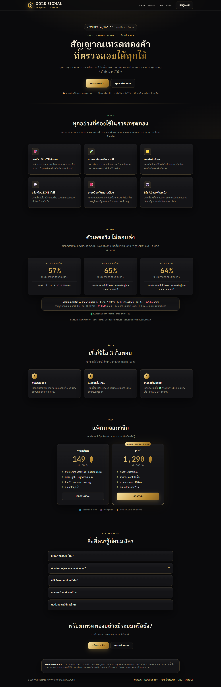
✨ หน้าแรก (คอม)
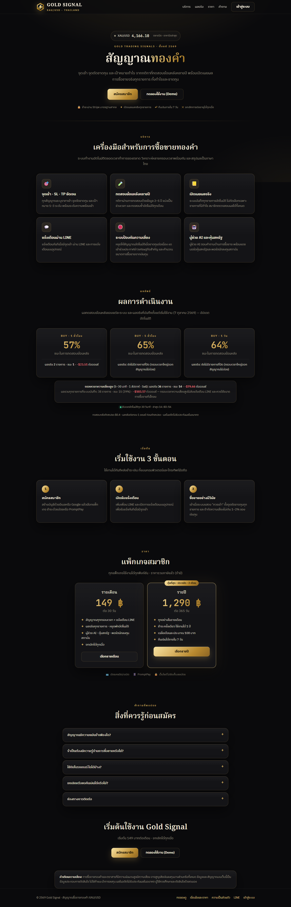
🕰️ หน้าแรก (มือถือ)
✨ หน้าแรก (มือถือ)
🕰️ หน้าเข้าสู่ระบบ (คอม)
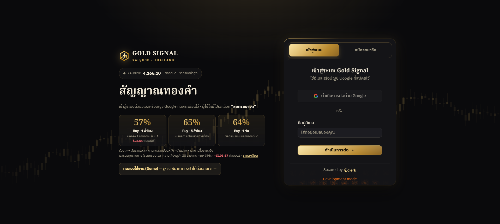
✨ หน้าเข้าสู่ระบบ (คอม)
✨ หน้าชำระเงิน (มือถือ)
✍️ หัวข้อหน้าเข้าสู่ระบบ: เหลือ "สัญญาณทองคำ"
17 ต.ค. 2569 · ผู้ใช้: "ตรวจสอบได้ เอาออก"
🕰️ แบบเก่า
- สัญญาณทองคำ / ตรวจสอบได้
✨ แบบใหม่
- สัญญาณทองคำ (บรรทัดเดียว)
✍️ หัวข้อหน้าเข้าสู่ระบบ: เอาคำว่า "โปร่งใส" ออก
17 ต.ค. 2569 · ผู้ใช้: "โปร่งใสออก"
🕰️ แบบเก่า
- สัญญาณทองคำ / โปร่งใส ตรวจสอบได้
✨ แบบใหม่
- สัญญาณทองคำ / ตรวจสอบได้
✍️ หัวข้อหน้าเข้าสู่ระบบสั้นลง
17 ต.ค. 2569 · ผู้ใช้: "ทำให้กระชับคำหน่อย" (หัวข้อใหญ่)
🕰️ แบบเก่า
- สัญญาณซื้อขายทองคำ
- ตรวจสอบได้ทุกรายการ
✨ แบบใหม่
- สัญญาณทองคำ
- โปร่งใส ตรวจสอบได้
✍️ หน้าเข้าสู่ระบบ: ถ้อยคำทางการและกระชับ
17 ต.ค. 2569 · ผู้ใช้: "ออกแบบคำให้ดูทางการหน่อย กระชับ"
🕰️ แบบเก่า
- สัญญาณทองคำ / ที่ตรวจสอบได้ทุกไม้
- สมาชิกเข้าสู่ระบบด้วยอีเมลหรือ Google ที่สมัครไว้ · ยังไม่มีบัญชี? กดแท็บ "สมัครสมาชิก"
- Buy 1 ชม. · ผลจริง 2 ไม้ · ชนะ 1 · −$23.51/ออนซ์ · ผลจริง: ยังไม่มีไม้ปิด
- % = ชนะในการทดสอบย้อนหลัง · ล่าง = ผลจริง · รวมทุกไม้ที่ระบบบันทึก (รวมกรอบเสี่ยง) · ดูรายละเอียด
- 👀 ยังไม่สมัคร? ทดลองดูก่อน (Demo) — กราฟทองแบบไม่มีสัญญาณ
- ตลาดปิด · ราคาล่าสุด · สมัครบัญชี · ได้ทุกฟีเจอร์ทันที · ผลจริงทุกไม้
✨ แบบใหม่
- สัญญาณซื้อขายทองคำ / ตรวจสอบได้ทุกรายการ
- เข้าสู่ระบบด้วยอีเมลหรือบัญชี Google ที่ลงทะเบียนไว้ · ผู้ใช้ใหม่โปรดเลือก "สมัครสมาชิก"
- Buy · 1 ชั่วโมง · ผลจริง 2 รายการ · ชนะ 1 · −$23.51 ต่อออนซ์ · ผลจริง: ยังไม่มีรายการที่ปิด
- ร้อยละ = อัตราชนะจากการทดสอบย้อนหลัง · ด้านล่าง = ผลการซื้อขายจริง · ผลรวมทุกรายการ (รวมกรอบเวลาความเสี่ยงสูง) · รายละเอียด
- ทดลองใช้งาน (Demo) — ดูกราฟราคาทองคำได้ก่อนสมัคร →
- ตลาดปิด · ราคาปิดล่าสุด · สร้างบัญชี · ใช้ได้ทุกฟังก์ชันทันที · เปิดเผยผลจริงทุกรายการ
- มือถือ: กล่องเข้าสู่ระบบกว้างเต็มกรอบทอง (เดิมเยื้องซ้าย)
🕰️ แบบเก่า (คอม)
✨ แบบใหม่ (คอม)
🕰️ แบบเก่า (มือถือ)
✨ แบบใหม่ (มือถือ)
✦ คำถามที่พบบ่อย: การ์ด 2 คอลัมน์ + ไอคอนทอง
17 ต.ค. 2569 · ผู้ใช้ (ส่งภาพส่วนคำถามที่พบบ่อย): "ออกแบบมาใหม่" → เลือก "การ์ด 2 คอลัมน์ + ไอคอน"
🕰️ แบบเก่า (คอม): แถบเรียงลงทีละข้อ 5 ข้อ เครื่องหมาย + · แถบท้ายเป็นตัวหนังสือธรรมดา
✨ แบบใหม่ (คอม): หัวข้อมีเส้นทองคั่น + คำอธิบาย · การ์ด 2 คอลัมน์ 6 ข้อ ไอคอนทองในวงกลม ลูกศรหมุนเมื่อเปิด · การ์ดที่เปิดอยู่ขอบทอง · แถบท้ายเป็นป้ายทอง 4 ช่อง · เพิ่มข้อ "ดูตัวอย่างก่อนสมัครได้ไหม?" (ลิงก์ Demo) ให้ครบ 3 แถว
🕰️ แบบเก่า (มือถือ)
✨ แบบใหม่ (มือถือ): การ์ด 1 คอลัมน์
⚖️ หน้าเข้าสู่ระบบ/สมัคร: 2 ฝั่งสมดุล
17 ต.ค. 2569 · ผู้ใช้: "มันแปลกๆ ดูไม่สมส่วนเลย ไม่น่ามองเลย" → เลือก "2 ฝั่งสมดุล"
🕰️ แบบเก่า (คอม): ซ้ายตัวเล็กจัดกลาง · ขวาชิดบน · แท็บแยกจากกล่อง
✨ แบบใหม่ (คอม): สูงพอดี 1 จอ ทั้ง 2 ฝั่งอยู่กึ่งกลางแนวตั้ง · ซ้ายชิดซ้าย หัวข้อใหญ่ ช่องผลงานกว้างเต็ม · แท็บรวมในกล่องทอง · คำถามที่พบบ่อยเลื่อนลงไปเจอ
🕰️ แบบเก่า (มือถือ)
✨ แบบใหม่ (มือถือ): แท็บอยู่ในกล่องทองเดียวกับฟอร์ม
📐 เปิดหน้าสมัครแล้วเห็นกล่องสมัครทันที ไม่ต้องเลื่อน
17 ต.ค. 2569 · ผู้ใช้: "ปรับสัดส่วน เวลาเปิดเข้ามามันไม่เห็นปุ่มสมัครสมาชิกเลย ต้องเลื่อนลงอย่างเดียว"
🕰️ แบบเก่า (คอม 1917×861): ปุ่ม Google อยู่ที่ 838 px — ขอบจอพอดี
✨ แบบใหม่ (คอม): 2 ฝั่ง — ข้อมูลซ้าย · กล่องเข้าสู่ระบบ/สมัครขวา (ปุ่ม Google 228 px) · คำถามที่พบบ่อยอยู่ล่าง
🕰️ แบบเก่า (มือถือ แท็บสมัคร): ปุ่ม Google อยู่ที่ 984 px — ต้องเลื่อน
✨ แบบใหม่ (มือถือ): กล่องสมัครต่อจากหัวข้อ + ขั้นตอนแบบย่อ (ปุ่ม Google 479 px) · ช่องผลงาน + Demo ย้ายไปใต้กล่อง
✨ หน้าสมัครสมาชิกแบบ "สด + มีชีวิต"
17 ต.ค. 2569 · ผู้ใช้: "ขอให้ดีกว่านี้ได้ไหมมันดูธรรมดาไป" → เลือก "สด + มีชีวิต"
🕰️ แบบเก่า (มือถือ)

✨ แบบใหม่ (มือถือ): ราคาทองสด · ผลทดสอบ/ผลจริง 3 กรอบ + ยอดรวมทุกไม้ · ขอบทองแสงวิ่ง
🕰️ แบบเก่า (คอม)
✨ แบบใหม่ (คอม): กราฟแท่งเทียนทองจาง ๆ เลื่อนช้า ๆ ด้านหลัง (ตกแต่ง ไม่ใช่ราคาจริง)
① ② ③ หน้าสมัครสมาชิกเข้าใจง่ายขึ้น
17 ต.ค. 2569 · ผู้ใช้: "ทำให้เข้าใจมากขึ้นตอนหน้าสมัครสมาชิก" → เลือก "ขั้นตอน 3 ขั้นด้านบน + กล่องสมัคร"
🕰️ แบบเก่า
✨ หน้าสมัคร: ขั้นตอน 1-2-3 + คำถามที่พบบ่อย 5 ข้อ (มือถือ)
✨ หน้าเลือกแพ็กเกจ: ขั้นที่ 2 (ขั้น 1 ✓)
🐙 หน้า GitHub ใหม่: README ดำ–ทอง + คำอธิบาย repo
17 ต.ค. 2569 · ผู้ใช้: "ช่วยทำใน Git ให้สวยหน่อย ออกแบบให้สวยหน่อยใน Git"
🕰️ แบบเก่า
- README 31 บรรทัด ข้อมูลเก่า (ระบบ investing.js เดิม) ไม่มีภาพ
- repo ไม่มีคำอธิบาย/หัวข้อ · ลิงก์เว็บผิด (gold-signal-ruby.vercel.app)
✨ แบบใหม่
- แบนเนอร์ SVG ดำ–ทอง · badge · ภาพหน้าจอ 7 ภาพ · ตารางความสามารถ 10 ข้อ · แผนภาพสถาปัตยกรรม (Mermaid) · โครงสร้างโปรเจกต์ · วิธีรัน/Deploy · คำเตือนความเสี่ยง
- คำอธิบาย repo + ลิงก์ gold-signal-ten.vercel.app + 12 หัวข้อ (gold, xauusd, trading-signals …)
- ภาพปก 1280×640 (docs/img/social.png) — ผู้ใช้อัปโหลดเองที่ Settings → Social preview
✨ README
✨ หน้า repo (About + หัวข้อ)
✂️ ตัดส่วนที่ไม่สำคัญออก (ไม่กระทบสิ่งที่สมาชิกเห็น)
17 ต.ค. 2569 · ผู้ใช้: "มีอะไรต้องปรับหรือลดไหมในเว็บนี้ที่ไม่สำคัญ" → "ทำมา" (ข้อ 1, 2, 3, 6)
🕰️ แบบเก่า
- LINE ภาพรวมรายวัน 07:05 ทุกเช้า (สูตรทดสอบขาดทุน −$217 · ซ่อนบนเว็บแล้ว แต่ยังกินโควตา)
- ระบบ 30 นาทีเก่ายังรันทุก 5 นาที (ไม่มีไม้แล้ว)
- โค้ดล็อกสมาชิกฟรี/PRO (1 ชม. อย่างเดียว · แจ้งเตือน 1 รายการ · หุ้นสหรัฐล็อก) ทั้งที่ตอนนี้ทุกคนต้องจ่ายก่อนเข้า
- ค่าตั้งค่า Stripe โหมดทดลองใน Vercel Production
✨ แบบใหม่
- เช้า: บันทึกข้อมูลเหมือนเดิม แต่ไม่ส่ง LINE (เปิดคืนได้ MORNING_LINE=on) → โควตา LINE เหลือให้สัญญาณจริง
- เหลือ scripts/news-warn.js: เตือนข่าวแรงล่วงหน้า 30 นาทีเหมือนเดิม
- ลบโค้ดล็อกทั้งฝั่งเว็บและเซิร์ฟเวอร์ · สมาชิกทุกคนแจ้งเตือนราคาได้ 10 รายการ · ข้อความ "สมาชิกฟรี" ที่ค้างอยู่แก้แล้ว
- ลบราคา/webhook โหมดทดลอง · key ทดลองเอาออกจาก Production
💡 เข้าใจง่ายขึ้น: คำตอบเดียวบนสุด · ⓘ ศัพท์ · โหมดง่าย/เทรดเดอร์ · ทัวร์ครั้งแรก
17 ต.ค. 2569 · ผู้ใช้: "อยากปรับให้มันดูเข้าใจง่ายมากขึ้นอีกหน่อย" → เลือกครบ 4 ข้อ · ไม่รื้อ layout (ไฟล์ใหม่ easy.js)
🕰️ แบบเก่า
- หน้าสัญญาณเริ่มด้วยราคา แล้วแถบคะแนน −6…+6 กรอบเวลา 3 ช่อง โดนัท % — ต้องตีความเอง
- ศัพท์ SL / TP / Bollinger / ความพร้อมเข้า ไม่มีคำอธิบาย
✨ แบบใหม่
- "ตอนนี้ควรทำอะไร?" บนสุด: รอก่อน / ✅ ซื้อได้ที่… ตัดขาดทุน… เป้ากำไร… / ถือไม้อยู่ +$… / ตลาดปิด / ระบบพัก — คำตอบเดียวกับการ์ดระบบหลัก
- คำศัพท์มีขีดประ + ⓘ กดแล้วอธิบายภาษาง่าย (12 คำ)
- ปุ่ม โหมดง่าย / โหมดเทรดเดอร์ บนแถบหัว — โหมดง่าย (ค่าเริ่มต้น) ซ่อนแถบคะแนน เหตุผล โดนัท · จำในเครื่อง
- ทัวร์ 5 จุดครั้งแรก (ข้ามได้) · ดูอีกครั้งได้ในแท็บบัญชี
✨ โหมดง่าย (ตลาดปิดวันเสาร์)
✨ ทัวร์ครั้งแรก (ขั้น 4/5)
✨ โหมดเทรดเดอร์ (มือถือแนวนอน) — รายละเอียดเดิมครบ
⚡ หน้าแรกแบบเรียลไทม์: ราคาทองสด · ผลจริงรีเฟรชเอง · ไม้ที่ถืออยู่ตอนนี้
17 ต.ค. 2569 · ผู้ใช้: "ขอแบบเรียลไทม์"
🕰️ แบบเก่า
- ตัวเลขโหลดครั้งเดียวตอนเปิดหน้า (เก็บแคช 5 นาที) · ไม่มีราคาทอง
✨ แบบใหม่
- ป้ายราคา XAU/USD สดบนสุด (สตรีม investing.com ~ทุก 1 วินาที เหมือนเว็บสมาชิก · สำรอง gold-api ทุก 10 วินาที · วันหยุดขึ้น "ตลาดปิด")
- ผลจริงรีเฟรชเองทุก 30 วินาที + เวลาอัปเดตล่าสุด · แคชเหลือ 15 วินาที
- ถ้าระบบถือไม้อยู่ (1 ชม./5 ชม./1 วัน): เข้า · SL · TP · กำไร/ขาดทุนตอนนี้ ขยับตามราคาสด
✨ ป้ายราคาสด (ภาพตอนตลาดปิดวันเสาร์)
📒 หน้าแรก: แสดงผลจริงครบทุกไม้ (รวมกรอบเสี่ยง)
17 ต.ค. 2569 · ผู้ใช้ถาม "มาจากไหนตัวเลข" → อธิบายที่มา + แนะนำเพิ่มผลกรอบเสี่ยงให้ครบ → "ทำมา"
🕰️ แบบเก่า
- แสดงเฉพาะ 1 ชม. / 5 ชม. / 1 วัน (ผลจริง 2 ไม้) — ไม่เห็นผลกรอบเสี่ยง 36 ไม้ (−$79.66)
✨ แบบใหม่
- เพิ่มกล่องใต้การ์ด: กรอบที่ติดป้าย ⚠️ เสี่ยง 36 ไม้ ชนะ 14 −$79.66 · รวมทุกไม้ 38 ไม้ ชนะ 15 (39%) −$103.17 — อัปเดตอัตโนมัติจากตัวบันทึก
✨ ส่วน "ตัวเลขจริง ไม่ตกแต่ง"
✦ ดีไซน์ดำ–ทอง พรีเมียม + หน้าแรก (Landing) ใหม่
17 ต.ค. 2569 · ผู้ใช้: "ขอแบบให้พรีเมียมและระดับทางการให้คนน่าเชื่อถือในการเข้ามาใช้" → เลือก หน้าคนนอก + Landing ใหม่ + เว็บสมาชิก · โทน "ดำ–ทอง หรูหรา"
🕰️ หน้าเข้าสู่ระบบ (เดิม)
✨ หน้าเข้าสู่ระบบ (ใหม่)
🕰️ หน้าเลือกแพ็กเกจ (เดิม)
✨ หน้าเลือกแพ็กเกจ (ใหม่)
✨ หน้าแรกใหม่ /welcome.html (คนที่ยังไม่ล็อกอินเปิด / แล้วมาที่นี่)
✨ หน้าแรก (มือถือ)
✨ เว็บสมาชิก: ชื่อแบรนด์ทอง serif + ปุ่มทองไล่เฉด (layout เดิม)
📣 ผู้ช่วยการตลาด AI (สร้างไว้ก่อน — โพสต์ได้หลังซื้อโดเมน .com)
17 ต.ค. 2569 · ผู้ใช้: "อยากให้สร้าง AI agent ที่สามารถเอาคอร์สเราไปโฆษณาให้เราแทน" → LINE OA + เพจ Facebook + บทความ Google + ชวนเพื่อน · ร่างให้กดอนุมัติ · จ่ายค่า AI ได้นิดหน่อย · "สร้างไว้ก่อน ค่อยโพสต์หลังจากเราซื้อโดเมน .com แล้ว"
🕰️ แบบเก่า
- ไม่มีการโปรโมต — ต้องหาลูกค้าเอง
✨ แบบใหม่
- หลังบ้านแท็บ 📣 การตลาด: AI เขียนร่าง 3 แบบ (LINE · Facebook · บทความ) จากตัวเลขจริงเท่านั้น ทั้งไม้ชนะและแพ้ · คำต้องห้าม (การันตี/รวยแน่/ไม่ขาดทุน…) กดอนุมัติไม่ได้ · ท้ายทุกโพสต์มีคำเตือนความเสี่ยง
- อนุมัติ → LINE (ส่งตอนโควตาเหลือ ไม่แย่งโควตาสัญญาณ) · Facebook (เมื่อเชื่อมเพจ) · บทความสาธารณะ /blog + sitemap ให้ Google
- 🤝 ชวนเพื่อน: ลิงก์ของแต่ละคน เพื่อนจ่ายครั้งแรก = ผู้ชวน +7 วัน
- ตอนนี้ปิดไว้ทั้งหมด — ปุ่ม 🚀 เปิดใช้การตลาด กดได้หลังตั้งโดเมน .com · ร่างอัตโนมัติทุกเช้าวันทำการ 08:30 เริ่มเมื่อเปิด
✨ แท็บ 📣 การตลาด (ตัวอย่างร่าง)
🛡️ คืนเงินแล้วปิดสิทธิ์อัตโนมัติ · สำรองข้อมูลทุกวัน · นโยบายความเป็นส่วนตัวใหม่
17 ต.ค. 2569 · ผู้ใช้: "ทำมา" (ข้อ 1–3)
🕰️ แบบเก่า
- กด Refund ใน Stripe แล้ว ลูกค้ายังใช้งานได้จนหมดอายุ (ต้องยกเลิกสิทธิ์เองในหลังบ้าน)
- ข้อมูลสมาชิก/สมุดเทรดมีชุดเดียว ไม่มีสำรอง
- นโยบายความเป็นส่วนตัวยังเรียก "PRO" ไม่พูดถึงแจ้งเตือนราคา/กูรู, LINE, การสำรองข้อมูล
✨ แบบใหม่
- คืนเงินเต็มจำนวน → สิทธิ์ปิดทันที + ยกเลิกตัดบัตรอัตโนมัติ · คืนบางส่วน = บันทึกอย่างเดียว · หลังบ้านรายได้หักคืนเงิน · ปุ่ม 🔄 อัปเดต webhook (กดครั้งเดียว)
- สำรองวันละครั้ง: สมาชิก, ตั้งค่า Stripe, อุปกรณ์แจ้งเตือน, สมุดเทรด, บทความ → backup/วันที่/ เก็บ 30 วัน
- นโยบายใหม่ + หน้าเงื่อนไขเพิ่ม "คืนเงินเต็มจำนวน = สิทธิ์สิ้นสุดทันที"
✨ นโยบายความเป็นส่วนตัว (มือถือ)
🧰 สมาชิก: เตือนก่อนหมดอายุ · วิธีเริ่มใช้งาน · Sell 1 ชม. · สรุปรายได้หลังบ้าน
17 ต.ค. 2569 · ผู้ใช้: "ทำมาหมดเลย" (ข้อ 6, 7, 8, 10 จากรายการที่เสนอ)
🕰️ แบบเก่า
- สมาชิกจ่ายครั้งเดียวหมดอายุเงียบ ๆ แล้วเด้งไปหน้าจ่ายเงิน
- จ่ายเสร็จเข้าเว็บเลย ไม่มีคำแนะนำ
- ไม่มีสัญญาณ Sell ที่ผ่านการทดสอบ (ยกเว้น 5 นาทีเสี่ยง)
- หลังบ้านไม่มียอดเงิน
✨ แบบใหม่
- ⏰ เหลือ ≤ 3 วัน: แจ้งเตือนบนเครื่อง 1 ครั้ง + แถบบนสุดของเว็บ พร้อมปุ่มต่ออายุ · หมดแล้ว หน้าจ่ายเงินบอก "หมดอายุแล้ว"
- 📘 หน้าต่าง 3 ขั้นหลังจ่ายครั้งแรก (เปิดซ้ำได้ในแท็บบัญชี)
- 🔴 Sell 1 ชม. (−4 + Bollinger กลับตัว): ทดสอบ 2 ปี 74 ไม้ ชนะ 65% +$593 กำไรครบ 4 ช่วง — ⚠️ เสี่ยง ไม่ส่ง LINE จนผลจริงครบ 20 ไม้
- 💰 หลังบ้าน: รายได้เดือนนี้ / 30 วัน / ทั้งหมด · สมาชิกที่จ่าย · ใครใกล้หมดอายุ
✨ แถบเตือนหมดอายุ
✨ วิธีเริ่มใช้งาน (มือถือแนวนอน)
✨ Sell 1 ชม.
✨ หลังบ้าน: สรุปรายได้
✨ หน้าจ่ายเงินของคนที่หมดอายุ
🛠️ เสถียรขึ้น: ราคาไม่ค้าง · แก้ error ที่ทำให้ตัวเลขไม่รัน
17 ต.ค. 2569 · ผู้ใช้: "ขอแบบเสถียร ไม่เอาโหลดนานหรือค้างหรือตัวเลขไม่รัน" · ทดสอบเปิดเว็บทิ้งไว้ (gold-signal-tools/soak.cjs) ตอนตลาดเปิด
🕰️ แบบเก่า
- error ซ้ำทุกรอบวาด (renderQuote: daily undefined — บั๊กจากงานรีเฟรช 39bc80d) → การ์ดที่วาดต่อจากนั้นไม่อัปเดต
- สตรีมราคาเงียบ (ต่ออยู่แต่ไม่ส่ง) → ราคาค้าง 33 วิ+ และไม่ต่อใหม่เอง (ราคาเปลี่ยน 1 ครั้งใน 45 วิ)
- กลับมาที่แท็บหลังสตรีมหลุด → รอถอยหลังต่อใหม่ได้ถึง 30 วิ
✨ แบบใหม่
- error = 0 ตลอดการทดสอบ
- สตรีมเงียบเกิน 10 วิ → ต่อใหม่เอง (ค้างนานสุด ~12 วิ, ราคาเปลี่ยน 22 ครั้ง/40 วิ)
- กลับมาที่แท็บ → ต่อสตรีม + ดึงราคาทันที
- ปกติ: ราคาขยับ ~1 ครั้ง/วินาที (32–39 ครั้ง/40–45 วิ) · หน่วยความจำไม่โต
🔄 เอากลับ: รีเฟรชแล้วอยู่ที่เดิม (หน้าโหลดครั้งเดียวต่อแท็บ)
17 ต.ค. 2569 · ผู้ใช้: "เอากลับแบบที่ให้ทำดีกว่า เวิร์คกว่า" → ใช้แบบ 4e82569 อีกครั้ง (ภาพด้านล่างหัวข้อ 16 ต.ค.)
🕰️ แบบเก่า
- รีเฟรช = หน้าโหลดทุกครั้ง · กราฟกลับ 1 ชม. · เด้งบนสุด
✨ แบบใหม่
- หน้าโหลดครั้งแรกของแท็บเท่านั้น · รีเฟรชแล้วแท็บ/กรอบเวลา/ตำแหน่งเดิม
✨ หลังกดรีเฟรช (คอม)
✨ มือถือแนวนอน
↩️ รีเฟรชกลับเป็นแบบเดิม (หน้าโหลดขึ้นทุกครั้ง)
17 ต.ค. 2569 · ผู้ใช้: "ไม่เอาแล้ว เอากลับมาแบบเดิม" → ย้อนงาน 4e82569 ทั้งหมด
🕰️ แบบเก่า (ชั่วคราว 16 ต.ค.)
- หน้าโหลดขึ้นครั้งเดียวต่อแท็บ · รีเฟรชแล้วอยู่แท็บ/กรอบเวลา/ตำแหน่งเดิม
✨ แบบใหม่ (= แบบเดิมก่อน 16 ต.ค.)
- กดรีเฟรช = หน้าโหลดโลโก้ฟ้าผ่าทุกครั้ง · กราฟเริ่มที่กรอบ 1 ชม. · หน้าเริ่มบนสุด
🔄 กดรีเฟรชแล้วอยู่ที่เดิม — ไม่ขึ้นหน้าโหลดซ้ำ
16 ต.ค. 2569 · ผู้ใช้: "พอกดรีเฟรชชอบไปเปิดหน้าตอนโหลดใหม่ทุกรอบ อยากกดรีเฟรชแล้วอยู่ที่เดิม"
🕰️ แบบเก่า
- รีเฟรชทุกครั้ง = หน้าโหลดโลโก้ฟ้าผ่า ~4–6 วินาที
- แล้วเด้งไปบนสุดของหน้า · กราฟกลับเป็นกรอบ 1 ชม.
✨ แบบใหม่
- หน้าโหลดขึ้นแค่ครั้งแรกที่เปิดเว็บในแท็บนั้น (ดีไซน์เดิม)
- รีเฟรช = เห็นแท็บเดิมทันที · กรอบเวลาเดิม (เช่น 30 นาที) · เลื่อนกลับตำแหน่งเดิม
✨ 0.7 วินาทีหลังกดรีเฟรช (คอม)
✨ มือถือแนวนอน หลังรีเฟรช
↩️ จุดเข้า Buy / Sell กลับมาทุกกรอบเวลา (ติดป้าย ⚠️ เสี่ยงเหมือนเดิม)
16 ต.ค. 2569 · ผู้ใช้: "จุดที่ให้เข้าซื้อไปไหนหมดของทุกทามเฟรม" · "ที่เป็น Buy กับ Sell จุดบอกสัญญาณในการเข้าซื้อ" → เอากลับแบบ 15 ต.ค. · การ์ดผลจริงทุกไม้ยังอยู่
🕰️ แบบเก่า (ชั่วคราว): 5 นาที ใช้ดูกราฟอย่างเดียว
✨ แบบใหม่: ป้าย Buy / Sell บนกราฟกลับมา + ช่อง Buy | Sell
🎯 จุดเข้าเหลือเฉพาะกรอบที่ผ่านทุกการทดสอบ (1 ชม. / 5 ชม. / 1 วัน) + 📒 ผลจริงทุกไม้
16 ต.ค. 2569 · ผู้ใช้: "ทำมาเลยขอแม่นยำและเข้าใจง่ายในการใช้เทรดทอง" · ผลจริง 7–16 ต.ค. 38 ไม้ ชนะ 39% −$103 (เกือบทั้งหมดจาก 5–30 นาที) · ทดสอบ SL/TP ใหม่ 72 แบบต่อกรอบแล้วไม่มีแบบไหนแก้กรอบเล็กได้
🕰️ แบบเก่า: กรอบ 5 นาทียังให้จุดเข้า (ติดป้ายเสี่ยง)
✨ แบบใหม่: 5 / 15 / 30 นาที + 1 สัปดาห์ ใช้ดูกราฟอย่างเดียว
✨ 1 ชม.: ช่อง Sell ไม่โชว์ราคาเข้าหลอกแล้ว
✨ หน้าสัญญาณ: การ์ดผลจริงทุกไม้ (ชนะและแพ้) + ความถี่ที่คาด
✨ มือถือแนวนอน
💲 ราคาใหม่ 149 บาท/เดือน · 1,290 บาท/ปี + ปุ่มเปลี่ยนราคาในหลังบ้าน
16 ต.ค. 2569 · ผู้ใช้: "ปรับราคาเป็น 149 แทนละกัน" → เลือกรายปี 1,290 · ราคาใน Stripe จริงเปลี่ยนเมื่อแอดมินกด 💲 บันทึกราคาใหม่
🕰️ แบบเก่า: 199 / 1,990
✨ แบบใหม่: 149 / 1,290
✨ หลังบ้าน: ปุ่ม 💲 บันทึกราคาใหม่
💰 สมัครสมาชิกต้องจ่ายก่อน (รายเดือน / รายปี) · แอดมิน 2 คนเข้าฟรี
16 ต.ค. 2569 · ผู้ใช้: "อยากให้ตอนสมัครสมาชิกเสียตังเลย แยกเป็นรายเดือนและรายปี ยกเว้นบัญชีแอดมินเท่านั้น ถ้าเสียตังแล้วดูได้ทุกอย่าง"
🕰️ แบบเก่า
- สมัครฟรี → เข้าเว็บได้เลย (ฟรี: ระบบหลัก 1 ชม. · แจ้งเตือน 1 รายการ)
- PRO 199/1,990 เป็นตัวเลือกเสริมในแท็บบัญชี
✨ แบบใหม่
- สมัคร/เข้าสู่ระบบแล้ว ถ้ายังไม่จ่าย → ไปหน้า /pay.html เท่านั้น (เว็บ ข้อมูล API ทุกอย่างล็อก 402)
- จ่ายแล้ว (หรือแอดมิน 2 คน) = ได้ทุกอย่าง · หมดอายุ → กลับหน้าจ่ายเงิน
- จ่ายสำเร็จ → หน้ารอเปิดสิทธิ์ แล้วเข้าเว็บเอง · ข้อความหน้าสมัคร / Demo / เงื่อนไข เปลี่ยนจาก "ฟรี" เป็นราคา
✨ หน้าเลือกแพ็กเกจ (คอม)
✨ มือถือ
✨ หลังจ่ายสำเร็จ
🚀 เปิดรับเงินจริงแล้ว + แอดมินเห็นตัวอย่างปุ่มจ่ายเงิน
16 ต.ค. 2569 · ใส่ key Stripe จริง (rk_live_) · บัญชี TH รับเงินได้ · PromptPay active · กด 🚀: ราคา 199 / 1,990 บาท + webhook · สมาชิกเดิมได้ PRO ฟรี 30 วัน · ผู้ใช้: "ไม่เห็นมีให้เก็บตังเลย"
🕰️ แบบเก่า: แอดมินไม่เห็นแพ็กเกจเลย
✨ แบบใหม่: แอดมินเห็นตัวอย่าง (กดไม่ได้)
⭐ ระบบสมาชิก PRO กลับมา (ยังไม่เปิดเก็บเงิน)
17 ต.ค. 2569 · ผู้ใช้: "อยากทำตัวที่เก็บตังก่อน" → PRO = โค้ช AI · หุ้นสหรัฐ + พอร์ตกูรู · สัญญาณทุกกรอบ · แจ้งเตือนราคา · 199/เดือน · 1,990/ปี · Stripe ยังไม่ยืนยันธุรกิจ
🕰️ แบบเก่า
- ระบบชำระเงิน PRO ถูกถอดออก 14 ต.ค. (เก็บไว้ใน branch payments-shelved) — ทุกอย่างฟรี
✨ แบบใหม่
- เอากลับมาครบ: Stripe บัตร (ต่ออายุอัตโนมัติ) + จ่ายครั้งเดียว PromptPay/บัตร · webhook เปิดสิทธิ์ทันที · หลังบ้านแท็บ ⭐ PRO (ให้สิทธิ์เอง/ยกเลิก/ประวัติ) + ปุ่ม 🚀 เปิดรับเงินจริง (เช็กลิสต์บัญชี Stripe)
- PRO ได้: 🤖 โค้ช AI · 📊 หุ้นสหรัฐ + พอร์ตกูรู + แจ้งเตือนกูรู · 📈 สัญญาณทุกกรอบ 5 นาที – 1 สัปดาห์ + แชทถามทุกกรอบ · 🔔 แจ้งเตือนราคา 10 รายการ
- ฟรี: ราคาสด · ระบบหลัก 1 ชม. · กราฟ · ข่าว · สมุดเทรด · แจ้งเตือนราคา 1 รายการ
- ล็อกจริงที่เซิร์ฟเวอร์ (หุ้นสหรัฐ/กูรู/แท่งเทียน 402 · ไม้ที่บันทึกเหลือ 1 ชม. · แจ้งเตือนเกิน 1 = 402 · โค้ช 402)
- หน้า /terms.html (สาธารณะ): แพ็กเกจ ราคา เงื่อนไข ยกเลิก คืนเงิน 7 วัน ติดต่อ — Stripe ใช้ตรวจตอนยืนยันธุรกิจ · ลิงก์จาก Demo / หน้าเข้าสู่ระบบ / การ์ด PRO
- ตอนนี้ยังปิดอยู่ = ทุกคนใช้ฟรีครบ (การ์ดบอก "ช่วงทดลอง") จนกว่าจะกด 🚀 หลังยืนยันบัญชี Stripe
✨ ตอนนี้ (ยังไม่เปิดเก็บเงิน)
✨ หลังเปิด: สมาชิกฟรีเห็นแพ็กเกจ
✨ หน้าเงื่อนไขและราคา
✨ หลังเปิด: กราฟ 5 นาที สมาชิกฟรี
🔔 แจ้งเตือนราคาทองที่ตั้งเอง · 🩺 หน้าสถานะระบบ · 🧑💼 กูรูที่ถือหุ้นแต่ละตัว
17 ต.ค. 2569 · ผู้ใช้: "เพิ่มเติมอะไรไหม" → "ทำมา"
🕰️ แบบเก่า
- ตั้งราคาเตือนเองไม่ได้
- ไม่มีที่ดูว่างานอัตโนมัติไหนพัง/ค้าง
- หน้าหุ้นไม่บอกว่ากูรูคนไหนถือ
✨ แบบใหม่
- แจ้งเตือนราคาทอง (แท็บบัญชี): ใส่ราคา หรือกดปุ่มลัด ±$15 / ±$30 → เมื่อทองขึ้น/ลงถึง ระบบเด้งแจ้งเตือนบนเครื่อง (เช็กทุก 5 นาที ใช้ high/low ของแท่ง 15 นาที — แตะแป๊บเดียวก็นับ) · ตั้งได้ 10 รายการ · เตือนแล้วลบเอง · ฟรี ไม่ใช้โควตา LINE
- 🩺 สถานะระบบ (หลังบ้าน แอดมิน): งานอัตโนมัติ 7 ตัว รอบล่าสุด ผ่าน/พัง 🟢🟡🔴 + ความสดของข้อมูล 5 ไฟล์ · ลิงก์ไป GitHub Actions
- หน้าหุ้นทุกตัว: การ์ด "🧑💼 กูรูที่ถือหุ้นนี้" — ใคร ถือ % พอร์ต จำนวนหุ้น มูลค่าสด เทียบไตรมาสก่อน + รายงาน SEC ล่าสุดของหุ้นนั้น · กดชื่อ = เปิดพอร์ตกูรู
✨ แจ้งเตือนราคา
✨ สถานะระบบ (เครื่องทดสอบใช้ข้อมูลเก่า จึงมีสีแดง)
✨ AMZN: กูรูที่ถือ 16 คน
🖼️ ข่าวสหรัฐ: รูปขึ้นทุกเครื่อง · ทางสำรองเมื่อเปิดข่าวไม่ได้ (403)
17 ต.ค. 2569 · ผู้ใช้: "ทำไมเวลาเปิดหน้าข่าวสหรัฐของเครื่องอื่นรูปภาพไม่ขึ้นโชว์และกดเข้าไปขึ้น 403"
🕰️ แบบเก่า
- รูปข่าวโหลดตรงจาก investing.com — ระบบกันบอท (Cloudflare) ของ investing ตอบ 403 บางเครื่อง/บางเบราว์เซอร์ → รูปไม่ขึ้น
- กดข่าวแล้วหน้า investing ขึ้น 403 บนเครื่องเดียวกันนั้น — ไม่มีทางอื่น
✨ แบบใหม่
- รูปโหลดผ่าน wsrv.nl (ตัวกลางรูปฟรี ดึงจากฝั่งเซิร์ฟเวอร์) → ถ้าไม่ได้ ลองตรงจาก investing → ไม่ได้อีก = รูปปกหมวดข่าว
- ทุกข่าวมีลิงก์ "เปิดไม่ได้? หาข่าวนี้จากแหล่งอื่น ›" → ค้นหัวข่าวเดียวกันใน Google News
- หน้าบทความ 403 มาจากฝั่ง investing.com เอง — เว็บเราแก้ที่ต้นทางไม่ได้
✨ รูปขึ้นผ่านตัวกลาง + ลิงก์สำรอง
📱 iPhone แนวนอน: หน้าโหลดตรงกลาง + เมนูหลบรอยบาก
16 ต.ค. 2569 · ผู้ใช้ (รูปจาก iPhone 13): "เปิดในโทรศัพท์ยังไม่ตรงกลางเลย"
🕰️ แบบเก่า
- ไม่มี viewport-fit=cover → Safari เว้นแถบฝั่งรอยบาก (ซ้าย) แต่ชั้นเต็มจอยังกว้างเท่าจอ → หน้าโหลดเลื่อนไปขวา ~110 px และตกขอบขวา (ป้าย LIVE หาย)
✨ แบบใหม่
- เปิด viewport-fit=cover กลับ → หน้าใช้ทั้งจอ หน้าโหลดอยู่กลางจอจริง
- เมนูซ้ายและเนื้อหาเว้นระยะรอยบาก/มุมจอเอง (env(safe-area-inset-*)) — คอมและ Android ไม่เปลี่ยน
🕰️ รูปจาก iPhone ผู้ใช้
✨ จำลองรอยบาก: หน้าโหลด
✨ จำลองรอยบาก: เมนูหลบ
🎯 หน้าโหลด: ตรงกลางตั้งแต่เฟรมแรก
16 ต.ค. 2569 · ผู้ใช้: "หน้าตอนโหลดยังไม่ตรงกลาง เอาให้ตรงกลาง"
🕰️ แบบเก่า
- ข้อความ "สัญญาณเทรดทองคำ · เรียลไทม์" พิมพ์ออกมาจากขอบซ้าย → ระหว่างพิมพ์อยู่เยื้องซ้าย
- แถบแท่งเทียนโหลดเติมจากซ้ายไปขวา ช่องว่างแทบมองไม่เห็น → ดูเหมือนแถบอยู่ทางซ้าย
✨ แบบใหม่
- ข้อความเปิดจากตรงกลางออกสองข้าง
- ช่องแท่งเทียนที่ยังไม่โหลดเห็นเป็นแท่งจาง ๆ ครบทั้งแถบ → แถบอยู่กลางตั้งแต่แรก
- ดีไซน์หน้าโหลดเดิม (โลโก้สายฟ้า) ไม่เปลี่ยน · ความเร็วเท่าเดิม
🕰️ แบบเก่า (1.5 วินาที)
✨ แบบใหม่ (1.6 วินาที)
✨ มือถือ
⭐ ติดตามกูรู · 🔔 แจ้งเตือนเมื่อซื้อขาย · ARK รายวัน
16 ต.ค. 2569 · ผู้ใช้: "เพิ่มเติมอะไรไหม" → "ทำมา"
🕰️ แบบเก่า
- ดูกูรูได้อย่างเดียว ไม่มีติดตาม ไม่มีแจ้งเตือน · แคธี่ วูดเห็นแค่ 13F รายไตรมาส
✨ แบบใหม่
- ⭐ ติดตาม: กด ☆ ที่การ์ด/หน้าพอร์ต → ขึ้นแถวบนสุด · การ์ด "⚡ ล่าสุด" มีปุ่ม "เฉพาะที่ติดตาม" · บันทึกไว้ที่บัญชี (ใช้ได้ทุกเครื่อง)
- 🔔 แจ้งเตือนบนเครื่อง (Web Push ฟรี ไม่กินโควตา LINE): กูรูซื้อขายจริง (ฟอร์ม 4) และ ARK รายวัน — ติดตามใครไว้ = แจ้งเฉพาะคนนั้น · กดแล้วเปิดแท็บหุ้นสหรัฐ
- ARK รายวัน: ไฟล์หุ้นในกองทุน ARKK ARKW ARKQ ARKG ARKF ARKX ทุกวัน เทียบเมื่อวาน = แคธี่ วูดซื้อ/ขายอะไร (6 รายการใหญ่สุดต่อฝั่ง)
✨ ล่าสุด + ARK (ตัวอย่างแถว ARK เป็นข้อมูลทดสอบ)
✨ ⭐ ติดตามแล้วขึ้นก่อน
⚡ พอร์ตกูรูแบบเรียลไทม์: ล่าสุดจาก SEC ทุก 10 นาที
16 ต.ค. 2569 · ผู้ใช้: "ขอทุกอย่างแบบเรียลไทม์"
🕰️ แบบเก่า
- หุ้นในพอร์ตกูรูมาจาก 13F รายไตรมาสอย่างเดียว เช็กวันละครั้ง 06:00
✨ แบบใหม่
- การ์ดบนสุด "⚡ ล่าสุดจาก SEC": เช็ก SEC ทุก 10 นาที — ฟอร์ม 4 (กองทุนที่ถือเกิน 10% ต้องรายงานการซื้อขายภายใน 2 วันทำการ: หุ้น จำนวน ราคาเฉลี่ย มูลค่า ถือหลังทำรายการ ราคาตอนนี้เทียบราคาที่ซื้อ) · 13D / 13G (ถือเกิน 5% ของบริษัท) · 13F ฉบับใหม่
- เจอ 13F ใหม่ → อัปเดตพอร์ตทันทีในรอบ 10 นาทีนั้น (ไม่ต้องรอเช้า)
- หน้าพอร์ตของแต่ละคนมีส่วน "⚡ ล่าสุดจาก SEC" ของคนนั้น · ปุ่ม "เอกสาร SEC" เปิดเอกสารจริง
- ตัวอย่างจริง: บัฟเฟตต์ซื้อ LEN 4 ครั้ง 21 ก.ย.–2 ต.ค. รวม ~$595 ล้าน → ถือ 28.4 ล้านหุ้น (12.5%)
✨ การ์ดล่าสุดจาก SEC (คอม)
✨ มือถือ
🖼️ พอร์ตกูรู: ทุกคนมีภาพ
16 ต.ค. 2569 · ผู้ใช้: "เอาให้มีทุกคนสิรูป เว้นว่างไว้มันดูไม่น่าเชื่อถือในการใช้งาน"
🕰️ แบบเก่า
- 15 คนเป็นวงกลมตัวอักษรย่อ (BG, DL, CA…) ดูเหมือนไม่มีรูป
- มูลค่าพอร์ตฮาวเวิร์ด มาร์คส์คิดหน่วยผิด (เกินจริง 1,000 เท่า)
✨ แบบใหม่ — ครบ 28 คน
- รูปบุคคลจริง 14 คน (Wikimedia Commons สัญญาอนุญาตเสรี + เครดิตผู้ถ่าย · รวมเทอร์รี่ สมิธ ครอปจากรูปหมู่)
- โลโก้กองทุน 8 คน: Baillie Gifford · Akre · Tiger Global · Coatue · Markel · ValueAct · Viking · Polen (เหมือน Dime ใช้โลโก้ BG)
- ป้ายชื่อกองทุนสีทอง 6 คน (SCION · DUQUESNE · HIMALAYA · THIRD POINT · GREENLIGHT · GOTHAM) — กองทุนที่ไม่มีรูปเสรีและไม่มีโลโก้ที่ยืนยันได้
- ไม่ใช้รูปที่มีลิขสิทธิ์ · กรองคนชื่อซ้ำ (นักบาส/นักดนตรี) ออก
- แก้หน่วยมูลค่า Oaktree → $3.78 พันล้าน
✨ การ์ดกูรูทั้ง 28 คน
📸 พอร์ตกูรู: รูปของแต่ละคน
16 ต.ค. 2569 · ผู้ใช้: "อยากให้แสดงรูปของแต่ละคนด้วย"
🕰️ แบบเก่า
- ทุกคนเป็นวงกลมสีทองมีตัวอักษรย่อ (WB, BG…)
✨ แบบใหม่
- 13 คนมีรูปจริงจาก Wikimedia Commons (เฉพาะรูปสัญญาอนุญาตเสรี: Public domain / CC0 / CC BY / CC BY-SA) — บัฟเฟตต์ บิล เกตส์ แอคแมน ดาลิโอ คลาร์แมน เทปเปอร์ ไอคาห์น แมนเดล แคธี่ วูด ฮาวเวิร์ด มาร์คส์ โซรอส มังเกอร์
- เครดิตผู้ถ่าย + สัญญาอนุญาตอยู่ในหน้าของแต่ละคน
- คนที่ไม่มีรูปเสรี (และกองทุนอย่าง Baillie Gifford, Polen) ยังเป็นตัวอักษรย่อ
✨ การ์ดกูรู
✨ หน้าพอร์ต
🧑💼 พอร์ตกูรู (แบบ Dime) ในหน้าหุ้นสหรัฐ
16 ต.ค. 2569 · ผู้ใช้: "อยากให้ทำเหมือนแอป Dime แบบเรียลไทม์ ที่มีผู้เชี่ยวชาญ" → แท็บย่อยในหุ้นสหรัฐ · กูรูมากกว่า 20 คน
🕰️ แบบเก่า
- หุ้นสหรัฐมีราคาสด แผนที่ตลาด ภาพรวม หุ้นทุกตัว คัดหุ้น เศรษฐกิจ ข่าว — ไม่มีพอร์ตนักลงทุนดัง
✨ แบบใหม่ — แท็บ "พอร์ตกูรู"
- Guru Portfolio: 28 คน (บัฟเฟตต์ บิล เกตส์ เบลลี่ กิฟฟอร์ด เบอร์รี่ แอคแมน ดาลิโอ ดรัคเคนมิลเลอร์ คลาร์แมน หลี่ ลู่ เทอร์รี่ สมิธ เทปเปอร์ แคธี่ วูด ฯลฯ) · มูลค่าพอร์ตคิดด้วยราคาสด × จำนวนหุ้น ขยับทุก 2 วินาที · % ตั้งแต่สิ้นไตรมาส · เรียง มูลค่า / อัปเดตล่าสุด / กำไร
- กดชื่อ → หุ้นทั้งพอร์ต (40 อันดับ) % พอร์ต จำนวนหุ้น ราคาสด มูลค่าสด เทียบไตรมาสก่อน · กดหุ้น → หน้าหุ้นเต็ม
- Guru Focus: ซื้อใหม่ / ซื้อเพิ่ม / ขายบางส่วน / ขายหมด (คนละ 3 รายการใหญ่สุด) · หุ้นที่กูรูถือซ้ำกันมากสุด
- ข้อมูลจากรายงาน 13F ต่อ SEC (ฟรี) อัปเดตทุกเช้า — รายงานมาไตรมาสละครั้ง ช้าสุด 45 วัน (บอกไว้บนหน้า)
✨ พอร์ตกูรู
✨ พอร์ตบัฟเฟตต์ (คอม)
✨ พอร์ตบัฟเฟตต์ (มือถือ)
👀 หน้า Demo สำหรับคนที่ยังไม่สมัคร
16 ต.ค. 2569 · ผู้ใช้: "ตอนให้คนแสกน … อยากให้มี Demo ให้สมัครสมาชิก ถ้าคนไม่สมัครสมาชิกจะไม่เห็นเส้นสัญญาณ … เป็นกราฟแท่งปกติ … แชทถามตอบจะไม่มี · ถ้าสมัครสมาชิกจะได้เห็นทุกอย่าง"
🕰️ แบบเก่า
- สแกน QR / กดลิงก์ → เจอหน้าเข้าสู่ระบบอย่างเดียว ไม่เห็นอะไรก่อนสมัคร
✨ แบบใหม่
- หน้าเข้าสู่ระบบมีปุ่ม "👀 ทดลองดูก่อน (Demo)"
- /demo.html (ไม่ต้องล็อกอิน): ราคาทองสด + กราฟแท่งเทียนธรรมดา 5 นาที – 1 สัปดาห์ เท่านั้น · ไม่มีเส้นสัญญาณ จุดเข้า TP/SL แชทถามจุดเข้า
- การ์ด 🔒 บอกว่าสมาชิกได้อะไร (ข้อความตัวอย่างเบลอ) + ปุ่ม "สมัครสมาชิกฟรี"
- โค้ดสัญญาณ/แชท ยังเป็นของสมาชิกเท่านั้นที่เซิร์ฟเวอร์ — หน้า Demo ไม่โหลดเลย จึงแอบดูจากหน้าเว็บไม่ได้
✨ หน้าเข้าสู่ระบบ
✨ Demo (คอม)
✨ Demo (มือถือ)
📨 โควตา LINE: เก็บไว้ส่งสัญญาณเข้าไม้
16 ต.ค. 2569 · ผู้ใช้: "ทำมา" (แก้โควตา LINE ก่อนมีเพื่อนเพิ่ม)
🕰️ แบบเก่า
- LINE ฟรี 300 ข้อความ/เดือน นับต่อคนที่ได้รับ · ตอนนี้ใช้ ~51/เดือนกับเพื่อน 1 คน → เพื่อน 6 คน ≈ 306 = เกิน แล้ว LINE หยุดส่งทุกอย่างรวมสัญญาณเข้าไม้
- ข้อความ "ระบบมีปัญหา" และ "โควตาใกล้หมด" ส่งหาสมาชิกทุกคน
✨ แบบใหม่
- สัญญาณเข้าไม้ ส่ง LINE เสมอ
- ภาพรวมเช้า / เตือนข่าว ส่ง LINE เฉพาะตอนโควตาที่เหลือยังพอส่งสัญญาณได้อีก 15 รอบถึงทุกคน — ไม่พอ = ส่งเป็นแจ้งเตือนบนเครื่อง (ฟรี ไม่จำกัด) อย่างเดียว
- ระบบมีปัญหา / โควตาใกล้หมด ส่งเฉพาะเครื่องแอดมิน ไม่ broadcast
- หน้าบัญชีบอกสมาชิกให้กดเปิดแจ้งเตือนไว้
- ตอนนี้ (เพื่อน 1 คน) ทุกอย่างยังส่ง LINE เหมือนเดิม
✨ หน้าบัญชี
💬 ชุด LINE: รูปโปรไฟล์ · รูปปก · ริชเมนู · ข้อความต้อนรับ
16 ต.ค. 2569 · ผู้ใช้: "ขอรูป … เกี่ยวกับทองคำ" → "ทำมา"
🕰️ แบบเก่า
- LINE @279arudw ไม่มีชุดรูปของ Gold Signal · ไม่มีเมนูกดเข้าเว็บ
- เปิดลิงก์ตอนยังไม่ล็อกอิน → หลังล็อกอินกลับไปหน้าแรกเสมอ
✨ แบบใหม่
- ไฟล์ในโฟลเดอร์ดาวน์โหลด: รูปโปรไฟล์ 3 แบบ · รูปปก 1080×878 · ริชเมนู 2500×1686 (6 ปุ่ม = 6 แท็บของเว็บ) · gold-signal-line-ตั้งค่า.txt (ขั้นตอน + ลิงก์ + ข้อความต้อนรับ)
- ลิงก์ในเมนูเปิดด้วยเบราว์เซอร์ของเครื่อง (?openExternalBrowser=1)
- หน้าเข้าสู่ระบบจำแท็บจากลิงก์ (#chart ฯลฯ) แล้วพากลับไปแท็บนั้นหลังล็อกอิน (รวม Google)
✨ รูปโปรไฟล์ (แบบ A)
✨ รูปปก
✨ ริชเมนู
📱 iPhone 13: แก้เรื่องเฉพาะของ iPhone
16 ต.ค. 2569 · ผู้ใช้: "ไอโฟน 13 ที่ใช้อยุ่"
🕰️ ปัญหาที่อาจเจอบน iPhone
- Safari ขยายตัวหนังสือเองตอนหมุนเป็นแนวนอน
- แนวนอน: เนื้อหาเข้าไปอยู่ใต้รอยบากจอ
- หมุนจอแล้วขนาดหน้าอาจคำนวณผิด (iPhone ไม่สลับค่าความกว้าง-สูงจอ)
- แตะช่องพิมพ์แล้วหน้าซูมเข้าค้าง
- หน้าหมุนจอมีปุ่ม "เปิดแนวนอนเต็มจอ" ที่ iPhone ใช้ไม่ได้
✨ แก้แล้ว
- ปิดการขยายตัวหนังสืออัตโนมัติ (text-size-adjust 100%)
- มือถือไม่ใช้ viewport-fit=cover → Safari เว้นรอยบากให้ · แอปที่ติดตั้ง แถบสถานะทึบ
- ดูทิศจอจาก screen.orientation / window.orientation · คำนวณซ้ำหลังหมุน + ล็อกขนาดต่ำสุด
- ช่องพิมพ์ 16px (iPhone ไม่ซูม)
- iPhone: ซ่อนปุ่มเต็มจอ · บอกวิธีปิดล็อกการหมุนจอ (ปัดลงมุมขวาบน → แม่กุญแจ)
✨ iPhone 13 แนวตั้ง
✨ iPhone 13 แนวนอน สัญญาณ
✨ iPhone 13 แนวนอน หุ้นสหรัฐ
📱 ทดสอบโทรศัพท์ 5 รุ่น · ปุ่มกดง่ายขึ้นบนมือถือ
16 ต.ค. 2569 · ผู้ใช้: "ทำมา" (ลองบนมือถือจริง)
🕰️ ที่เจอ
- จำลอง iPhone SE / iPhone 15 / iPhone 15 Pro Max / Galaxy S23 / Pixel 8 แนวนอน+แนวตั้ง ทุกแท็บ: ไม่มีอะไรล้นหรือตกขอบ ไม่มี error
- แต่ปุ่มแถวเล็ก (โหมดแชท/กรอบเวลา/คำถามด่วนในหน้ากราฟ, หมวดข่าว, ปุ่มสมุดเทรด, แท็บ/ปุ่มช่วงเวลาในหุ้นสหรัฐ) สูงเหลือ 15–19 px บนจอจริง — กดยาก
✨ แบบใหม่
- บนมือถือ (เฉพาะตอนย่อหน้า) ปุ่มเหล่านี้สูงขึ้นเป็น ~25 px บนจอจริง — ตัวหนังสือขนาดเท่าเดิม แค่พื้นที่กดใหญ่ขึ้น
- คอมไม่เปลี่ยน
- หมายเหตุ: ตัวหนังสือเล็กสุดบนจอจริงประมาณ 6–7 px (ตามที่ขอให้เล็กลงมาก)
🕰️ หุ้นสหรัฐ ปุ่มแท็บเดิม
✨ ปุ่มแท็บสูงขึ้น
Galaxy S23 แนวตั้ง
iPhone SE แนวนอน (หน้ากราฟ)
☀️ หุ้นสหรัฐตามโหมดสว่าง
16 ต.ค. 2569 · ผู้ใช้: "เพิ่มเติมอไรไหม" → "ทำมาหมด"
🕰️ แบบเก่า
- สลับเว็บเป็นโหมดสว่าง → ทุกหน้าสว่าง แต่หน้าหุ้นสหรัฐยังดำอยู่หน้าเดียว
✨ แบบใหม่
- หน้าหุ้นสหรัฐเปลี่ยนตามทันที (โหมดสว่าง = พื้นครีม การ์ดขาว ตัวหนังสือเข้ม ปุ่มที่เลือกสีทอง · โหมดมืด = ดำ-ทอง)
- สลับที่แท็บบัญชีระหว่างเปิดอยู่ก็เปลี่ยนตามเลย ไม่ต้องโหลดใหม่
- แถบราคาวิ่งด้านล่างและป้ายสถานะราคาสดก็เปลี่ยนตาม
✨ โหมดสว่าง (คอม)
✨ แผนที่ตลาด โหมดสว่าง
✨ โหมดสว่าง (มือถือ)
🎨 หุ้นสหรัฐเป็นโทนดำ-ทอง · ⏸ ป้ายข่าวแรง · ⏱️ ไม้วันนี้ บนการ์ดระบบหลัก
16 ต.ค. 2569 · ผู้ใช้: "เพิ่มเติมอไรไหม" → "ทำมาหมด"
🕰️ แบบเก่า
- หน้าหุ้นสหรัฐเป็นโทนม่วง ไม่เข้ากับทั้งเว็บ (ดำ-ทอง)
- หลังเอาการ์ดข่าวแรง/ไม้วันนี้ออก หน้าสัญญาณไม่บอกว่าช่วงนี้งดเข้าเพราะข่าว และไม่เห็นผลไม้วันนี้
✨ แบบใหม่
- หุ้นสหรัฐ: พื้นดำ การ์ดเทาเข้ม เส้นบาง ปุ่มที่เลือกสีทอง กราฟ/แถบสีทอง — สีชุดเดียวกับหน้าอื่น (เปลี่ยนเฉพาะสี ไม่ย้ายอะไร)
- การ์ดระบบหลัก 1 ชม.: ป้าย "⏸ งดเข้า — ข่าว … ถึง …" ขึ้นเฉพาะช่วง ±30 นาทีรอบข่าวแรง
- ป้าย "⏱️ ไม้วันนี้ N ไม้ · ปิดแล้ว · ผลรวม/ออนซ์" ขึ้นเฉพาะวันที่มีไม้ · ไม้ที่ถืออยู่ยังมีการ์ด "📌 ไม้ที่เปิดอยู่" แบบเดิม
🕰️ หุ้นสหรัฐ โทนม่วง
✨ หุ้นสหรัฐ ดำ-ทอง
✨ แผนที่ตลาด
✨ หุ้นสหรัฐ มือถือ
✨ ป้ายข่าวแรง + ไม้วันนี้ (ตัวอย่างข้อมูลจำลอง)
🗑️ หน้าสัญญาณ: เอาการ์ดข่าวแรง / ไม้วันนี้ออก
16 ต.ค. 2569 · ผู้ใช้ (รูป): "เอาออก"
🕰️ แบบเก่า
- ท้ายหน้าสัญญาณมีการ์ด "ข่าวแรงสหรัฐ (งดเปิดไม้ใหม่ ±30 นาทีรอบข่าว)" + "ไม้วันนี้ (ระบบหลัก 1 ชม.)"
✨ แบบใหม่
- การ์ดนี้ไม่แสดงแล้ว — หน้าสัญญาณจบที่ "ถ้าเข้าตอนนี้"
- ระบบยังงดเปิดไม้ ±30 นาทีรอบข่าวแรงเหมือนเดิม · ดูข่าวได้ที่แท็บข่าวสหรัฐ
🕰️ แบบเก่า (ส่วนที่เอาออก)
✨ หน้าสัญญาณ (คอม)
✨ หน้าสัญญาณ (มือถือ)
🗑️ หน้าสัญญาณ: เอาภาพรวมรายวันออก
16 ต.ค. 2569 · ผู้ใช้ (รูป): "เอาอันนี้ออก"
🕰️ แบบเก่า
- ท้ายหน้าสัญญาณมีบล็อก "ภาพรวมรายวัน (ตลาดเปิด) · ข้อมูลประกอบ" (จุดเข้า/SL/TP ของวัน แถบผล ทำไมถึงให้สัญญาณนี้) + การ์ด "ตลาดทองตอนนี้"
✨ แบบใหม่
- บล็อกนี้ไม่แสดงแล้ว — หน้าสัญญาณจบที่ระบบหลัก 1 ชม. · ถ้าเข้าตอนนี้ · ข่าวแรง/ไม้วันนี้
- LINE ภาพรวมเช้า 07:05 ยังส่งเหมือนเดิม
🕰️ แบบเก่า (ส่วนที่เอาออก)
✨ หน้าสัญญาณ (คอม)
✨ หน้าสัญญาณ (มือถือ)
📐 ทุกแท็บใช้ขนาดตัวหนังสือชุดเดียวกัน
16 ต.ค. 2569 · ผู้ใช้: "ปรับทุกส่วนให้สัมพันกัน"
🕰️ แบบเก่า
- ตัวหนังสือธรรมดา 18px (จอกว้าง) ใหญ่กว่าหัวการ์ด 15px — เช่นข้อความ LINE ในหน้าบัญชี ข้อความ "ยังไม่มีข่าว"
- หน้าข่าว: หัวใหญ่ 26–28px มุมโค้ง 16–20px ไม่เหมือนแท็บอื่น
- มือถือ (ย่อแล้วกว้าง 1477) โดนกฎจอกว้างทำให้ตัวหนังสือโตขึ้น
- หน้าสัญญาณ: คำตัดสิน 2 การ์ดขนาดไม่เท่ากัน (28 / 34px)
✨ แบบใหม่
- ลำดับเดียวทุกแท็บ: ตัวหนังสือ 14px · หัวการ์ด 15px · หัวหน้าข่าว 18px (จอ ≥1400: 15/16/20 · ≥1700: 16/17/22)
- การ์ดข่าวมุมโค้งและช่องว่างเท่าการ์ดอื่น (8px · 14×16px)
- มือถือใช้ชุด 14/15/18 เสมอ
- คำตัดสินหน้าสัญญาณ 28px ทั้งคู่
🕰️ ข่าวสหรัฐ แบบเก่า
✨ ข่าวสหรัฐ แบบใหม่
🕰️ บัญชี แบบเก่า
✨ บัญชี แบบใหม่
✨ บัญชี มือถือแนวนอน
✂️ หุ้นสหรัฐ: ตัดแถบหัวที่ไม่จำเป็นออก
16 ต.ค. 2569 · ผู้ใช้: "เเถบไหนไม่สำคัญเอาออก เอาที่สำคัญจำเป็นจริงๆ ปรับสัดส่วนให้พอดี"
🕰️ แบบเก่า
- หัวใหญ่ "NASDAQ-100 — ห้องวิเคราะห์แบบผู้จัดการกองทุน" (ซ้ำกับชื่อในช่องเลือกด้านบน)
- บรรทัดอธิบาย "101 ตัว · เรียลไทม์ทุก tick …"
- แถบเหลือง "ราคาที่มีฟีดจะอัปเดตอัตโนมัติ …"
- หัวข้อซ้ำใต้แท็บ เช่น "ตลาดสด — Nasdaq-100"
✨ แบบใหม่
- เหลือแถบบน (เลือกชุด Nasdaq 100 / S&P 500 / ปันผล + สถานะราคาสด) แล้วต่อด้วยแท็บทันที
- ใต้แท็บเหลือคำอธิบายบรรทัดเล็กบรรทัดเดียว
- การ์ดข้อมูลขยับขึ้นมาเห็นตั้งแต่จอแรก
🕰️ แบบเก่า (มือถือแนวนอน)
✨ แบบใหม่ (มือถือแนวนอน)
✨ แบบใหม่ (คอม)

📱 มือถือ: เล็กลงอีกนิด
16 ต.ค. 2569 · ผู้ใช้: "ขอเล็กลงกว่านี้อีกนิด"
🕰️ แบบเก่า (ย่อเหลือ ~67% · จอ 844 = กว้าง 1266)
✨ แบบใหม่ (ย่อเหลือ ~57% · จอ 844 = กว้าง 1477)
🕰️ หุ้นสหรัฐ แบบเก่า
✨ หุ้นสหรัฐ แบบใหม่
📱 มือถือ: ย่อทั้งหน้าให้เล็กลงมาก
16 ต.ค. 2569 · ผู้ใช้: "ใหญ่ไปขอเล็กลงมากๆเลย ในของโทรศัพท์"
🕰️ แบบเก่า
- มือถือแนวนอนกว้าง 844 จุด แสดงตัวหนังสือขนาดเท่าจริง เห็นข้อมูลได้น้อย ต้องเลื่อนเยอะ
- เมนูซ้ายเป็นไอคอนแคบ
✨ แบบใหม่
- มือถือย่อทั้งหน้าลงเหลือราว 2 ใน 3 (หน้าจอ 844 จุด แสดงเหมือนจอกว้าง 1266) — ทุกอย่างเล็กลง เห็นข้อมูลมากขึ้นในจอเดียว
- ได้หน้าตาแบบคอม: เมนูซ้ายเต็มพร้อมชื่อ ตารางและการ์ดเรียงแบบคอม
- แนวตั้งก็ย่อเหมือนกัน · คอมไม่เปลี่ยน
🕰️ แบบเก่า (แนวนอน 844)
✨ แบบใหม่ หน้ากราฟ
✨ แบบใหม่ หน้าสัญญาณ
✨ แบบใหม่ หุ้นสหรัฐ
🕯️ กราฟแท่งเทียนของหุ้นทุกตัว · 📱 มือถือแนวนอนขนาดพอดีจอ
15–16 ต.ค. 2569 · ผู้ใช้: "ขอทุกหุ้นให้มีกราฟแท่งเทียนของทุกหุ้น" · "ในโทรศัพท์ข้อมูลดูใหญ่ไปหมด มันล้น ปรับให้เล็กลงให้พอดีกับการมองของโทรศัพท์"
🕰️ แบบเก่า
- หน้าหุ้นมีแค่กราฟเส้นราคาปิด
- มือถือแนวนอนใช้ขนาดตัวหนังสือ/ตัวเลขแบบคอม (16px, ตัวเลขใหญ่ 30px) ดูใหญ่และล้น
✨ แบบใหม่
- กดหุ้นตัวไหนก็ได้ (Nasdaq 100 / S&P 500 / หุ้นปันผล) มีการ์ดแท่งเทียนบนสุด: 5 นาที · 1 ชม. · 1 วัน · 1 สัปดาห์ · EMA20/50 (+EMA200 รายวัน) · volume · ชี้/แตะดู เปิด/สูง/ต่ำ/ปิด/Vol ของแต่ละแท่ง · แท่งล่าสุดขยับตามราคาสด · โหลดใหม่ทุก 1 นาที (ข้อมูล Yahoo ผ่าน /api/candles ของเว็บ สมาชิกเท่านั้น)
- มือถือแนวนอน: ใช้ชุดขนาดมือถือ (ตัวหนังสือ 14px การ์ดกระชับ ตัวเลขใหญ่เล็กลง) · หน้าหุ้นสหรัฐ: ตัวหนังสือ 12.5px ตัวเลข 20px การ์ด 2 คอลัมน์
✨ แท่งเทียน NVDA รายวัน (คอม)
✨ แท่งเทียน 5 นาที (มือถือแนวนอน)
✨ หน้าหุ้นบนมือถือ — ขนาดพอดีจอ
📊 หน้าหุ้นแต่ละตัวเป็นแดชบอร์ดเต็ม · 📱 มือถือเปิดแนวนอน
15 ต.ค. 2569 · ผู้ใช้ (รูปหน้า GOOGL): "อยากให้แต่ละหุ้นทำแดชบอร์ดขึ้นมา มันดูน้อยไป" · "ปรับให้เปิดในโทรศัพท์เป็นแบบแนวนอน ไม่เอาแนวตั้ง มันแคบไป"
🕰️ แบบเก่า
- กดหุ้นแล้วมีแค่กราฟราคา 1 ปี + EMA50 และตัวเลข 10 ช่อง
- มือถือเปิดแนวตั้ง (แอปที่ติดตั้งล็อกแนวตั้ง) · แนวนอนเหลือที่ดูเนื้อหาแค่ ~270px เพราะแถบบน + เมนูล่าง
✨ แบบใหม่
- หน้าหุ้น = แดชบอร์ด 11 การ์ด: ราคา + EMA20/50/200 · สรุป · RSI · MACD · เทียบดัชนี · ผลตอบแทนแต่ละช่วง (เทียบดัชนี) · รายเดือน 12 เดือน · drawdown · เช็กลิสต์เทคนิค 7 ข้อ · ความเสี่ยง (beta, ผันผวน, วันดี/แย่สุด, อันดับ) · หุ้นกลุ่มเดียวกัน (กดเปิดต่อได้)
- มือถือ: แอปที่ติดตั้งเปิดแนวนอน · ถือแนวตั้งจะขึ้นหน้าให้หมุนจอ (Android กด "เปิดแนวนอนเต็มจอ" ได้ · iPhone หมุนเอง · มี "ดูแนวตั้งชั่วคราว") · แนวนอน: แถบบนบางลง เมนูเป็นแถบไอคอนด้านซ้าย ใช้ความสูงได้ ~345px
✨ หน้าหุ้นใหม่ (ส่วนบน)
✨ หน้าหุ้นใหม่ (ส่วนล่าง)
✨ มือถือแนวตั้ง → หน้าให้หมุนจอ
✨ มือถือแนวนอน — เมนูด้านซ้าย
🏷️ เมนู "แดชบอร์ด" เปลี่ยนชื่อเป็น "หุ้นสหรัฐ"
15 ต.ค. 2569 · ผู้ใช้ (รูปเมนู): "ตั้งชื่อให้ใหม่ที เอามันเข้ากันกับสามชื่อนี้" (Nasdaq 100 · S&P 500 · หุ้นปันผล)
🕰️ แบบเก่า
- สัญญาณ · ข่าวสหรัฐ · กราฟ · แดชบอร์ด · สมุดเทรด · บัญชี
✨ แบบใหม่
- สัญญาณ · ข่าวสหรัฐ · กราฟ · หุ้นสหรัฐ · สมุดเทรด · บัญชี — ทั้ง 3 ชุดเป็นหุ้นสหรัฐ และเข้าชุดกับ "ข่าวสหรัฐ"
✨ เมนูคอม
✨ เมนูมือถือ
🩺 หลังตรวจทุกส่วน: 5m SELL ติดป้ายเสี่ยง · บทวิเคราะห์แดชบอร์ดใหม่ · เลิกสร้างแดชบอร์ดทอง
15 ต.ค. 2569 · ผู้ใช้: "ทำมาเลยทั้งหมด"
🕰️ แบบเก่า
- 5m SELL เป็นจุดเข้าปกติ ทั้งที่ผลจริง 14 ไม้ ชนะแค่ 4 (29%) เทียบทดสอบ 53%
- บทวิเคราะห์แดชบอร์ด (Nasdaq-100 / S&P 500 / หุ้นปันผล) ของ 12 ต.ค. — ยังเขียนว่า Nasdaq ขาขึ้นเต็ม +5/5
- ทุกเช้ายังสร้างแดชบอร์ดทองคำที่ไม่มีหน้าใช้แล้ว
✨ แบบใหม่
- 5m SELL = "⚠️ มีสัญญาณ แต่เสี่ยง" เหตุผล "ผลจริงชนะต่ำกว่าทดสอบมาก (14 ไม้ ชนะ 4)" · จุดเข้าปกติเหลือ 1 ชม. / 5 ชม. / 1 วัน BUY
- บทวิเคราะห์ใหม่ 15 ต.ค. หลัง CPI สูงกว่าคาด: Nasdaq-100 ลงมาแตะ EMA50 (คะแนน −1) มุมมอง "ระวัง" · S&P 500 ตลาดหมุนเข้าหุ้นป้องกัน/พลังงาน การเงินอ่อน · หุ้นปันผล เน้นปันผลคุณภาพ รอหุ้นยิลด์สูงจนกว่า yield จะลง — ทุกตัวเลขมาจากแดชบอร์ดเช้านี้
- แดชบอร์ดสร้างแค่ 3 ชุด (เร็วขึ้น ~3 นาที)
📊 แดชบอร์ด: เอาชุด "ทองคำ / GOLD" ออก
15 ต.ค. 2569 · ผู้ใช้ (รูปเมนูแดชบอร์ด): "ตัดในส่วนนี้ออก ทอง/Gold ส่วนที่เหลือเอาไว้"
🕰️ แบบเก่า
- เมนู 4 ชุด: ทองคำ / GOLD (ค่าเริ่ม) · Nasdaq 100 · S&P 500 · หุ้นปันผล
✨ แบบใหม่
- เมนู 3 ชุด: Nasdaq 100 (ค่าเริ่ม) · S&P 500 · หุ้นปันผล · ลิงก์เก่า ?d=gold เปิด Nasdaq 100 แทน
✨ แท็บแดชบอร์ด
🕯️ หน้าโหลด: เอากรอบออก + พื้นหลังเป็นแท่งเทียนชัด ๆ
15 ต.ค. 2569 · ผู้ใช้ (รูปหน้าโหลด): "เอากรอบออกได้ไหม และออกแบบด้านหลังให้เป็นแท่งเทียน มันดูไม่ออกเป็นอะไร"
🕰️ แบบเก่า
- แผงกระจกมีกรอบ + เส้นทองวิ่งรอบขอบ
- แท่งเทียนพื้นหลังกว้าง 16px เตี้ย ดูเป็นเส้นกราฟ
✨ แบบใหม่ (ส่วนอื่นเหมือนเดิมทุกอย่าง)
- ไม่มีกรอบ/แผง
- แท่งเทียนพื้นหลังกว้าง 34px (มือถือ 22px) สูงขึ้น เห็นตัวแท่งและไส้ชัด สีเขียว/แดงเข้มขึ้น · จางลงตรงกลางให้โลโก้และตัวหนังสืออ่านชัด · มือถืออยู่ด้านล่างใต้ชิป
🕰️ แบบเก่า — รูปที่ผู้ใช้ส่ง
✨ แบบใหม่ (จอกว้าง)
✨ มือถือ
↩️ หน้าโหลดกลับเป็นแบบเดิม — เร็วขึ้น (ขั้นต่ำ 4 วินาที)
15 ต.ค. 2569 · ผู้ใช้: "ไม่เอาแล้ว เอาแบบเดิมกลับมา แต่ขอให้เร็วขึ้นกว่าเดิม"
🕰️ ที่ยกเลิก
- หน้าโหลดแบบโลโก้ + กราฟเส้น (เวอร์ชัน 202610151800)
- แบบเดิมก่อนหน้านั้น: ขั้นต่ำ 6.5 วินาที เข้าเว็บ ~8.4 วินาที
✨ ตอนนี้
- หน้าโหลดแบบเดิมทุกอย่าง (โลโก้ฟ้าผ่า แผงกระจก วงแหวน % แท่งเทียน ชิป 3 อัน)
- ขั้นต่ำ 4 วินาที — อนิเมชันยังเดินครบตามเวลา · เข้าเว็บ ~6.0 วินาที
✨ แบบเดิม (3.5 วินาที — ใกล้ครบแล้ว)
⚡ หน้าโหลดใหม่: ไม่มีกรอบ · โลโก้ + กราฟเส้นวิ่ง · เร็วขึ้น
15 ต.ค. 2569 · ผู้ใช้: "หน้าตอนโหลดขอให้เร็วขึ้น และออกแบบเอากรอบออก มันดูยังไม่เป็นมืออาชีพ" → เลือก "โลโก้ + กราฟเส้นวิ่ง" · อย่างน้อย 4 วินาที
🕰️ แบบเก่า
- แผงกระจกมีกรอบทองวิ่ง วงแหวน % ฟ้าผ่าพื้นหลัง ประกายไฟ ชิป 3 อัน แท่งเทียนโหลด
- เข้าเว็บได้หลัง ~8.4 วินาที (ขั้นต่ำ 6.5 วินาที)
✨ แบบใหม่
- พื้นดำเรียบ แสงทองจาง ๆ · โลโก้สายฟ้า (วาดขอบ + ฟ้าผ่าเหมือนเดิม) · ชื่อ Gold Signal ไล่สีทอง · กราฟเส้นราคาทองวาดตาม % มีจุดเรืองแสงที่ปลาย · ไม่มีกรอบ
- เข้าเว็บได้หลัง ~5.0 วินาที (ขั้นต่ำ 4 วินาที)
🕰️ แบบเก่า (2 วินาที)
✨ แบบใหม่ (3.5 วินาที)
✨ มือถือ
📊 % Buy / Sell ยังแสดงตอนระบบถือไม้อยู่
15 ต.ค. 2569 · ผู้ใช้ (รูปการ์ด "ถือ Buy" กราฟ 5 นาที): "พวกเปอร์เซ็นต์หายไปไหน"
🕰️ แบบเก่า — รูปที่ผู้ใช้ส่ง: ถือไม้อยู่ = ซ่อน % · แชทยังเขียน "ตามกราฟ (1 ชม.)"
- เดิมตั้งใจซ่อน % ตอนถือไม้ (ไม่ให้เปิดไม้ซ้อน) แต่ทำให้ไม่รู้ว่าตอนนี้คะแนนเป็นอย่างไร
✨ แบบใหม่ — ถือไม้อยู่ก็เห็น Buy / Sell % (ดูประกอบ) · แชทตามกรอบกราฟ
⏱️ ข่าวอัปเดตทุก 1 นาที + ทุกข่าวมีรูปเสมอ
15 ต.ค. 2569 · ผู้ใช้: "ขอทุกอย่างอัพแบบเรียลไทม์ทุกวัน และข่าวต้องมีรูปทุกวัน"
🕰️ แบบเก่า
- ข่าวดึงใหม่ทุก 5 นาที
- ข่าวที่ไม่มีรูป / รูปโหลดไม่ได้ = ช่องว่างเปล่า
✨ แบบใหม่
- ข่าวดึงใหม่ทุก 1 นาที (เซิร์ฟเวอร์แคช 1 นาที + หน้าเว็บถามทุกนาทีตอนเปิดแท็บ) · "x นาทีที่ผ่านมา" เดินทุกนาที
- ไม่มีรูป / รูปเสีย → ภาพปกตามหมวด: ทองคำ (ทอง 🪙) · เศรษฐกิจ (ฟ้า 🏛️) · ตัวเลขเศรษฐกิจ (เขียว 📊)
- ราคา กราฟ สัญญาณ และปฏิทินข่าว เรียลไทม์อยู่แล้ว (ราคาทุก tick · ปฏิทินทุก 15 วินาทีช่วงข่าวออก)
✨ ทดสอบ: 3 ข่าวไม่มีรูป + 1 ข่าวรูปเสีย — ทุกข่าวยังมีภาพ
📰 ข่าวล่าสุด: ข่าวเด่นขนาดเท่าข่าวอื่น
15 ต.ค. 2569 · ผู้ใช้ (รูปจอกว้าง): "ใหญ่ไป เอาขนาดเดียวกันเท่ากับด้านขวา"
🕰️ แบบเก่า
- ข่าวเด่นรูปใหญ่กินเกือบ 2 ใน 3 ของจอ ข้าง ๆ มี 2 ข่าวซ้อนกัน
✨ แบบใหม่
- แถวบน 3 ข่าวขนาดเท่ากัน (รูป 16:9) หัวข้อตัวใหญ่กว่าการ์ดด้านล่างเล็กน้อย · มือถือ: ข่าวแรกรูปใหญ่ ที่เหลือเป็นแถวรูปซ้าย-หัวข้อขวา
🕰️ แบบเก่า — รูปที่ผู้ใช้ส่ง
✨ แบบใหม่ — จอกว้าง 1880
📰 หน้าข่าวสหรัฐแบบเว็บข่าว: ข่าวจริงพร้อมรูป + ปฏิทินข่าวเป็นการ์ด
15 ต.ค. 2569 · ผู้ใช้: "หน้าข่าวยังดูยาก ไม่น่าสนใจ" → ส่งตัวอย่างเว็บข่าว "ให้รูปและข้อความ … น่าดูและน่าเชื่อถือ" → เลือก "ดึงข่าวจริงจากสำนักข่าว"
🕰️ แบบเก่า
- มีแต่ตัวเลขปฏิทินข่าว ตัวหนังสือเล็กแน่น ตารางยาว ไม่มีรูป
✨ แบบใหม่
- บนสุด "ข่าวล่าสุด": ข่าวจริงภาษาไทยจาก Investing.com (ทองคำ · เศรษฐกิจ · ตัวเลขเศรษฐกิจ) ข่าวเด่นรูปใหญ่ + 2 ข่าวข้าง + การ์ดรูป 3 คอลัมน์ · "x นาทีที่ผ่านมา" · กดอ่านฉบับเต็มที่ต้นทาง · อัปเดตทุก 5 นาที
- ปฏิทินข่าวแรง: การ์ดข่าวถัดไปบอกเป็นภาษาคน (ทองมักขยับ ~$ + ดีกว่าคาด/แย่กว่าคาดทองไปทางไหน) · ข่าวที่จะออกแบ่ง วันนี้/พรุ่งนี้ มีป้าย 🔥 แรง / ⚡ ปานกลาง / เบา
- ข่าวที่ออกแล้วเป็นการ์ด: ทอง 1 ชม. ขึ้น/ลงตัวใหญ่ + "✓ ไปตามตำรา / ✗ สวนตำรา" · ตารางสถิติพับไว้
🕰️ แบบเก่า
✨ ข่าวล่าสุด (คอม)
✨ มือถือ
✨ ทั้งหน้า (ข่าว + ปฏิทิน + ข่าวที่ออกแล้ว)
⚠️ จุดเข้ากลับมาทุกกรอบ — กรอบที่ทดสอบไม่ผ่านทุกช่วงติดป้าย "สัญญาณเสี่ยง"
15 ต.ค. 2569 · ผู้ใช้: "ทำไมไม่เห็นจุดเข้าของทุกทามเฟรมเลย" → เลือก "เปิดกลับให้เห็นบนกราฟ แต่ติดป้ายเสี่ยง"
🕰️ แบบเก่า (เช้าวันเดียวกัน)
- 5m BUY · 15m · 30m · 1w ขึ้น "⏸ ปิดจุดเข้า — ดูทิศเท่านั้น" ไม่มีป้าย Buy/Sell บนกราฟ
✨ แบบใหม่
- ทุกกรอบมีป้าย Buy/Sell บนกราฟเหมือนเดิม — กรอบเสี่ยงมี ⚠ ท้ายป้าย และคำตัดสิน "⚠️ มีสัญญาณ แต่เสี่ยง"
- ช่อง Buy/Sell และแชทบอกเหตุผลของแต่ละกรอบ เช่น "ช่วงทดสอบล่าสุดขาดทุน" แนะนำใช้ไม้เล็ก
- ไม่ส่ง LINE · ระบบหลัก (หน้าสัญญาณ + LINE) ยังเป็น 1 ชม. · ตัวบันทึกเก็บผลจริงไว้ด้วย (ติด risky)
🕰️ กราฟ 30 นาที — ปิดจุดเข้า
✨ กราฟ 30 นาที — มีจุดเข้า + ป้ายเสี่ยง
✨ มือถือ · 15 นาที
🎯 สัญญาณน้อยลงแต่ชัวร์ขึ้น: เหลือจุดเข้าเฉพาะกรอบที่กำไรครบ 4 ช่วงทดสอบ · ระบบหลักเป็น 1 ชม.
15 ต.ค. 2569 · ผู้ใช้: "สัญญาณ Buy/Sell ยังไม่ค่อยแม่น อยากให้ทุกทามเฟรมแม่นยำ" → เลือก "สัญญาณน้อยลงแต่ชัวร์ขึ้น" → "แก้มาเลย"
🕰️ แบบเก่า
- มีจุดเข้าทุกกรอบ: 5m BUY/SELL · 15m · 30m (ระบบหลัก) · 1h · 5h · 1d · 1w
- 5m BUY ช่วงทดสอบล่าสุดขาดทุน −$433 · 30m −$7 · 15m และ 1w เกือบเท่าทุน
- บั๊ก: ตั้งแต่ 9 ต.ค. กรอบ 1 ชม. · 5 ชม. · 5m SELL ได้ TP1 อย่างเดียว ไม่ตรงกับที่ทดสอบ (TP 3 จุด)
✨ แบบใหม่
- จุดเข้าเหลือ 1 ชม. BUY (ชนะ 57%) · 5 ชม. BUY (65%) · 1 วัน BUY (64%) · 5 นาที SELL (53%) — กำไรทุกช่วงทดสอบ
- 5m BUY · 15m · 30m · 1w = "⏸ ปิดจุดเข้า — ดูทิศเท่านั้น" พร้อมลิงก์ไปกรอบที่ยังใช้
- หน้าสัญญาณ + LINE ระบบหลัก = 1 ชม. (1 ชม. + 4 ชม. + 5 ชม.) · LINE ส่ง 1 ชม. · 5 ชม. · 1 วัน
- TP กลับมาตรงกับที่ทดสอบ: 1 ชม. TP $30/40/60 · 5 ชม. $60/80/120 · 5m SELL $10/13/20
- ก่อนตัดสิน ทดสอบตัวกรองจุดเข้า 21 แบบ + หลายกรอบตรงกัน 45 แบบ — ไม่มีแบบไหนดีขึ้นจริง
🕰️ หน้าสัญญาณ — ระบบ 30 นาที
✨ หน้าสัญญาณ — ระบบหลัก 1 ชม. (1 ชม. · 4 ชม. · 5 ชม.)
🕰️ กราฟ 30 นาที — ยังให้จุดเข้า
✨ กราฟ 30 นาที — ปิดจุดเข้า ดูทิศเท่านั้น
✨ มือถือ
🕰️ กราฟ 1 ชม. — TP1 อย่างเดียว (บั๊ก)
✨ กราฟ 1 ชม. — TP 3 จุดตามที่ทดสอบ
🧾 แก้ผลไม้เก่าในบันทึกสัญญาณกราฟให้ตรงกับราคาจริง
14 ต.ค. 2569 · ผู้ใช้: "แก้มาเลย"
🕰️ แบบเก่า (ตัดสินด้วยราคาที่เพี้ยน)
- 32 ไม้ที่ปิดแล้ว: ชนะ 11 · −$160/ออนซ์
- มี 14 ไม้ที่ผลไม่ตรงกับราคาจริง เช่น 30m BUY 9 ต.ค. 19:00 บันทึกว่าแพ้ −$15 แต่ราคาจริงไปถึง TP (+$15) · 5m SELL 14 ต.ค. 15:50 บันทึกว่าชนะ +$10 แต่ราคาจริงไม่เคยลงถึง TP
✨ แบบใหม่ (ตัดสินด้วยราคาจริง)
- 32 ไม้: ชนะ 12 (38%) · −$100/ออนซ์ (≈ −$113 หลังหักสเปรด)
- แยกกรอบ: 5 นาที 9/24 · 30 นาที 2/6 · 1 ชม. 1/2
- ทุกไม้ที่แก้เก็บผลเดิมไว้ในช่อง
wasตรวจย้อนหลังได้ - รอบตรวจบน GitHub ที่ใช้โค้ดใหม่ ได้ค่าปรับราคานิ่ง −$4.7 ถึง −$5.2 (เดิมกระโดด −$13.7 ถึง +$5.2)
🎯 ตัวบันทึกผลสัญญาณ: แก้บั๊กราคาเพี้ยนที่ทำให้นับไม้แพ้เกินจริง
14 ต.ค. 2569 · ผู้ใช้ถาม "พวกสัญญาณในการเข้าต่างๆดีแล้วใช่ไหม แม่นยำไหม"
🕰️ แบบเก่า
- เทียบราคา Binance PAXG กับ investing.com จากแท่ง "ล่าสุด" ของแต่ละเจ้า ซึ่งไม่ใช่แท่งเดียวกัน (investing.com ช้ากว่า 1–2 แท่ง)
- ค่าปรับราคาจึงกระโดด −$13.7 ถึง +$5.2 ทุก 5 นาที ทั้งที่ส่วนต่างจริงนิ่งประมาณ ±$1
- ไม้ที่เปิดอยู่โดนตัดสินว่า "ชน SL" ทั้งที่ทองจริงยังไปไม่ถึง เช่น 5m SELL 13 ต.ค. 08:10 ราคาสวนจริงแค่ $4 แต่บันทึกว่าแพ้ $10
- ผลจริง 31 ไม้: ชนะ 11 (35%) · −$150/ออนซ์
✨ แบบใหม่
- วัดส่วนต่างจากแท่งที่เวลาตรงกัน ใช้ค่ากลางของ 12 แท่งที่ปิดแล้วล่าสุด (scripts/chart-run.js)
- รันซ้ำ 3 รอบได้ค่าเดิมทุกรอบ (−$5.21 จาก 12 แท่ง)
- คำนวณ 31 ไม้เดิมใหม่ด้วยราคาที่ถูกต้อง: ชนะ 13 (42%) · −$74/ออนซ์ ยังติดลบอยู่ แต่ขาดทุนแค่ครึ่งเดียวของที่บันทึกไว้
- กติกาเข้าไม้ไม่เปลี่ยน แก้เฉพาะการวัดผล
🧭 เมนู: ไอคอนเส้นแบบมืออาชีพแทนอีโมจิ
14 ต.ค. 2569
🕰️ แบบเก่า — ผู้ใช้: "ดูทำเล่น เหมือนไม่ได้เอามาใช้งานระดับทางการ"
✨ แบบใหม่ — ไอคอนเส้นสีเดียว ที่เลือกเป็นสีทอง
✨ โหมดสว่าง
✨ แถบเมนูล่างบนมือถือ
✨ ไอคอน
- สัญญาณ = เส้นชีพจรราคา · ข่าวสหรัฐ = หนังสือพิมพ์ · กราฟ = แท่งเทียน · แดชบอร์ด = ผังแผง · สมุดเทรด = สมุดเปิด · บัญชี = รูปคนในวงกลม
- เส้นบาง 1.8 สีเดียวกับตัวหนังสือ · เมนูที่เลือก = ไอคอนสีทอง + ตัวหนาขึ้น · ใช้ทั้งเมนูซ้ายบนคอมและแถบล่างบนมือถือ
⏱️ หน้าโหลดเร็วขึ้นนิดหน่อย
14 ต.ค. 2569
🕰️ แบบเก่า
- แสดงอย่างน้อย 8 วินาที · วัดในเครื่อง คอม 9.5 / มือถือ 10 วินาที
✨ แบบใหม่ — ผู้ใช้: "ขอเร็วนิดนึง อีกนิดกำลังดีแล้ว"
- แสดงอย่างน้อย 6.5 วินาที · วัดในเครื่อง คอม 8 / มือถือ 8.5 วินาที · % และแท่งเทียนยังเดินสม่ำเสมอตามเวลา · หน้าตาเหมือนเดิม
🐢 หน้าโหลดหน่วงขึ้น + เดินสม่ำเสมอ
14 ต.ค. 2569
🕰️ แบบเก่า
- แสดงอย่างน้อย 4 วินาที · วงแหวนวิ่งไปถึง ~90% เร็ว ๆ แล้วค้างรอ
- วัดในเครื่อง: คอม 5.5 วินาที · มือถือ 5.9 วินาที
✨ แบบใหม่ — ผู้ใช้: "ช้ากว่านี้อีก" · "ให้หน่วงกว่านี้"
- แสดงอย่างน้อย 8 วินาที · % และแท่งเทียนเดินตามเวลา ไม่วิ่งนำ: 1 วิ 8% · 2 วิ 22% · 4 วิ 45% · 6 วิ 73% · 8 วิ 94% (แท่งเทียน 1 → 14 แท่ง)
- วัดในเครื่อง: คอม 9.5 วินาที · มือถือ 10 วินาที · หน้าตาเหมือนเดิม
🕯️ หน้าโหลด: อนิเมชั่นแท่งเทียน
14 ต.ค. 2569
🕰️ แบบเก่า — ผู้ใช้: "ไม่ต่างจากเดิม แค่มีกรอบเข้ามา"
✨ แบบใหม่ — แท่งเทียนก่อตัวทีละแท่งตาม % · กราฟแท่งเทียนวิ่งสดด้านหลัง + ป้าย LIVE
✨ มือถือ — แท่งสีทองคือแท่งที่กำลังก่อตัว
✨ เปิดฉาก (0.5 วินาที) — แผงคลี่ออกจากเส้นแสง
✨ อนิเมชั่นที่เพิ่ม (โลโก้ฟ้าผ่า วงแหวน ชื่อ ชิป ยังอยู่ครบ)
- แถบโหลด = แท่งเทียน 16 แท่ง: ไส้เทียนยืดขึ้นก่อน แล้วตัวแท่งเด้งตาม ทีละแท่งตาม % · แท่งที่กำลังก่อตัวเป็นสีทองยืดหดเหมือนราคาเต้น
- พื้นหลัง: กราฟแท่งเทียนวิ่งสดตลอด แท่งล่าสุดเรืองแสง เส้นราคาปิดเรืองแสงทอง เส้นประราคาล่าสุด + ป้าย LIVE (ภาพประกอบ ไม่ใช่ราคาจริง)
- แผงคลี่ออกจากเส้นแสงทองตอนเปิด · แสงทองวิ่งรอบขอบแผงตลอด · คำโปรยพิมพ์ทีละตัวพร้อมเคอร์เซอร์ · ชิปเด้งขึ้นทีละอัน
🐢 หน้าโหลดช้าลงอีกนิด
14 ต.ค. 2569
🕰️ แบบเก่า
- แสดงอย่างน้อย 2.8 วินาที · วงแหวนเติมเร็วระดับกลาง
- วัดในเครื่อง (ราคามาทันที): คอม 4.2 วินาที · มือถือ 4.5 วินาที
✨ แบบใหม่ — ผู้ใช้: "ช้ากว่านี้อีกนิด"
- แสดงอย่างน้อย 4 วินาที · วงแหวนเติมช้าลงอีก (เห็นโลโก้ ฟ้าผ่า แสงวิ่งครบ)
- วัดในเครื่อง: คอม 5.5 วินาที · มือถือ 5.9 วินาที · หน้าตาเหมือนเดิม
⚡ หน้าโหลดแบบเดิม (โลโก้ฟ้าผ่า) — เกลาให้ทันสมัย + ช้าลงนิดหน่อย
14 ต.ค. 2569
🕰️ แบบเก่า (คอม)
✨ แบบใหม่ (คอม) — แผงกระจกขอบทอง แสงออโรร่า ชื่อมีแสงวิ่ง
🕰️ แบบเก่า (มือถือ)
✨ แบบใหม่ (มือถือ)
✨ เปลี่ยนอะไร
- ผู้ใช้ไม่เอาหน้าโหลดแบบแอปโบรกเกอร์ → คืนแบบเดิมครบ (โลโก้ฟ้าผ่า วงแหวน % ชื่อเด้งทีละตัว 3 ชิป กราฟพื้นหลัง)
- ทันสมัยขึ้น: แผงกระจกฝ้าขอบทองมีแสงวิ่ง · พื้นดำลึก + แสงออโรร่าทองค่อย ๆ หมุน + ตารางจุดจาง ๆ · วงแหวนบางเรืองแสง · ชื่อใหญ่ขึ้นมีแสงทองวิ่ง · ชิปเป็นกระจก เสร็จแล้วเป็นสีเขียว · ฟ้าผ่า/กราฟพื้นหลังเบาลง
- ช้าลงนิดหน่อย: แสดงอย่างน้อย 1.2 → 2.8 วินาที · วงแหวนเติมช้าลง
🚀 หน้าโหลดใหม่: แบบแอปโบรกเกอร์จริง
14 ต.ค. 2569
🕰️ แบบเก่า — โลโก้ฟ้าผ่า + วงแหวน %
✨ แบบใหม่ (มือถือ) — ได้ราคาสดแล้ว LIVE · ขั้นตอนติ๊กเขียว
✨ แบบใหม่ (คอม) — ระหว่างเชื่อมต่อ ตัวเลขหมุนแบบเบลอ
✨ มีอะไรบ้าง
- แถบบน: โลโก้ + สถานะ "กำลังเชื่อมต่อ" (กะพริบเหลือง) → "LIVE · เชื่อมต่อแล้ว" (เขียว) เมื่อได้ราคาจริง
- การ์ด XAU/USD: ตัวเลขหมุนแบบกระดานราคา (เบลอ สีเทา — ไม่ใช่ราคา) แล้วหยุดที่ราคาจริงพร้อมสีขึ้น/ลง + การเปลี่ยนแปลง
- 3 ขั้น ราคาสด · ข้อมูลกราฟ · สัญญาณ: วงหมุน → ติ๊กเขียว · แถบโหลดสีทองด้านล่าง + %
- พื้นหลังกราฟแท่งเทียนวิ่งตลอด (เป็นภาพเคลื่อนไหวประกอบ ไม่ใช่ข้อมูลตลาด) · ปิดเองถ้าเครื่องตั้งลดการเคลื่อนไหว
📱 มือถือ: สัดส่วนเล็กลง พอดีจอ
14 ต.ค. 2569
🕰️ แบบเก่า — ผู้ใช้: "เปิดในโทรศัพท์ดูใหญ่ไป"

✨ แบบใหม่ — จอแรกเห็นถึงการ์ด 3 กรอบเวลา + นับถอยหลัง
🕰️ แบบเก่า — หน้าบัญชี
✨ แบบใหม่ — หน้าบัญชี
✨ เปลี่ยนอะไร (เฉพาะจอ ≤ 600px · ทั้งโหมดมืดและสว่าง)
- ตัวหนังสือพื้นฐาน 16 → 14px · หัวข้อ 14px · ปุ่ม 13px
- ราคาสด 36 → 30px · ตัวเลขใหญ่อื่น ๆ ลด ~20% (คะแนน 40 → 32, ฝั่งสัญญาณ 34 → 26, KPI ข่าว 24 → 18)
- การ์ดเว้นขอบ 14/16 → 12px · ระยะระหว่างการ์ด 10px · กราฟเส้นในการ์ดราคาเตี้ยลง · เมนูล่างบางลง
- ช่องกรอกยังเป็น 16px (iPhone จะไม่ซูมเองตอนพิมพ์) · หน้าสั้นลง (สัญญาณ 3,435 → 3,240px, บัญชี 2,022 → 1,886px) · 360px ไม่ล้น
↔️ หน้าบัญชีเต็มความกว้างจอ
14 ต.ค. 2569
🕰️ แบบเก่า — ผู้ใช้: "ทำไมไม่ชิดขอบ ช่องเว้นเยอะมาก"
✨ แบบใหม่ — เต็มความกว้างเหมือนหน้าอื่น (จอ 2560px)
⚖️ หน้าบัญชี: 2 คอลัมน์สูงเท่ากัน
14 ต.ค. 2569
🕰️ แบบเก่า — คอลัมน์ขวาสั้น เหลือที่ว่างใหญ่ด้านล่าง
✨ แบบใหม่ — ซ้าย: หน้าจอ + ตั้งค่า · ขวา: แอป + LINE + ชวนเพื่อน · จบระดับเดียวกัน
🧱 หน้าบัญชี: การ์ดเรียงต่อกัน ไม่มีช่องว่าง
14 ต.ค. 2569
🕰️ แบบเก่า — ผู้ใช้: "ทำไมแบบนี้" (ช่องว่างใต้การ์ดหน้าจอ ขอบซ้ายขวาว่างเยอะ)
✨ แบบใหม่ — 2 คอลัมน์ต่อกันลงไป กว้างขึ้น (สูงสุด 1,440px)
🎨 หน้าบัญชีมีสีสัน: ปุ่มสีกลับมา · แต่ละหมวดมีสีของตัวเอง · ไม่ยืดเต็มจอกว้าง
14 ต.ค. 2569
🕰️ แบบเก่า — ผู้ใช้: "ดูธรรมดาไม่มีสีสันเลย" (ปุ่มเทาหมด ช่องกรอกยืดสุดจอ)
✨ แบบใหม่ — คอม 2 คอลัมน์ กว้างไม่เกิน 1,180px อยู่กลางจอ
✨ จอกว้าง 2560px
✨ มือถือ
✨ เปลี่ยนอะไร
- ปุ่มสีกลับมาทั้งเว็บ: ทอง (ติดตั้ง, หลังบ้าน, บันทึก, เปิดแจ้งเตือน, คัดลอกลิงก์) · เขียว LINE · แดงออกจากระบบ
- แต่ละหมวดมีแถบสีบนการ์ด + หัวข้อสีเดียวกัน: หน้าจอ ม่วง · แอป ฟ้า · ตั้งค่า ทอง · LINE เขียว · ชวนเพื่อน ชมพู
- การ์ดโปรไฟล์ไล่สีทอง รูปโปรไฟล์มีวงทอง · ปุ่มสว่าง/มืดที่เลือกเป็นทอง
🟩🟥 การ์ดสัญญาณ: กรอบสีตามฝั่งกลับมา
14 ต.ค. 2569
🕰️ แบบเก่า (รอบ 3) — กรอบเทาเหมือนการ์ดอื่น ไม่รู้ว่าถือฝั่งไหน
✨ แบบใหม่ — กรอบ + พื้นไล่สีจาง: Buy เขียว · Sell แดง · รอ เหลือง
🖥️ ดีไซน์ใหม่ รอบ 3: จอเทรดมืออาชีพ (แบบ TradingView / Binance) — เป็นค่าเริ่มต้น
14 ต.ค. 2569
🕰️ รอบ 2 (สว่าง) — ผู้ใช้: "ยังไม่ค่อยสวยเท่าไร"
✨ รอบ 3 — พื้นดำ แผงเรียบ เส้นบาง ตัวเลขโมโน
✨ หน้ากราฟ — ปุ่มที่เลือกเป็นตัวเหลืองขีดใต้
✨ มือถือ
✨ เปลี่ยนอะไร (ตำแหน่งเดิมทั้งหมด)
- เปิดเว็บครั้งแรกเป็นโหมดมืดแบบจอเทรด · ใครเคยเลือกโหมดสว่างไว้ยังได้สว่างเหมือนเดิม · ปุ่ม ☀️ สลับได้เสมอ
- สีแบบตลาดเทรด: พื้น #0b0e11 แผง #161a1e เส้น #2b3139 ขึ้นเขียว #0ecb81 ลงแดง #f6465d ทอง/เหลือง #f0b90b
- มุมโค้งเล็ก 6–8px ไม่มีเงา · ราคาเด่นไม่มีลูกเล่น เปลี่ยนสีเขียว/แดงตามราคาขยับ · สูงสุด/ต่ำสุดเป็นแถบเซลล์ต่อกัน · เมนูซ้ายแน่นขึ้น ที่เลือกมีแถบเหลือง
- กราฟใช้สีเส้นตารางชุดเดียวกัน · ไม่มีประกายทอง / การ์ดเอียง (ไม่เข้ากับจอเทรด) · ตัวเลขที่เปลี่ยนยังกะพริบ
✨ ดีไซน์ใหม่ รอบ 2: เห็นความต่างชัด — การ์ดราคาแท่งทอง · การ์ดกระจก · เมนูทอง
14 ต.ค. 2569
🕰️ รอบ 1 — ผู้ใช้: "เห็นเหมือนเดิมเลย"
✨ รอบ 2 — แท่งทองบรอนซ์ ราคาสีขาวเรืองแสง เมนูที่เลือกเป็นทอง
🕰️ รอบ 1 — มือถือ
✨ รอบ 2 — มือถือ
✨ เปลี่ยนอะไร (ตำแหน่งเดิมทั้งหมด)
- พื้นหลังแสงทอง 3 จุด + แสงทองเคลื่อนช้า ๆ ทั้งหน้า · การ์ดทุกใบเป็นกระจกฝ้า มุมโค้ง 24px ยกตัวตอนชี้
- การ์ดราคา = แท่งทองบรอนซ์ไล่เฉด ตัวเลข 58px สีขาวเรืองแสง แสงวิ่งผ่าน
- เมนู / ปุ่มกรอบเวลา / แบบง่าย–นักเทรด ที่เลือก = ทองไล่เฉด · หัวข้อมีแถบทอง
- ประกายทองมากขึ้น 2 เท่า สว่างขึ้น (มือถือ 30 จุด)
✨ ดีไซน์ใหม่ทั้งเว็บ: สัดส่วน · สีครีม-ทอง · อนิเมชั่น
14 ต.ค. 2569
🕰️ แบบเก่า — คอม
✨ แบบใหม่ — การ์ดราคาทองแบบแก้ว แสงวิ่ง พื้นครีม
🕰️ แบบเก่า — มือถือ ราคาทับกราฟ, −$38.19 แตกบรรทัด
✨ แบบใหม่ — มือถือ กราฟเส้นอยู่ใต้ราคา ตัวเลขบรรทัดเดียว
🕰️ แบบเก่า
- ขนาดตัวหนังสือ 37 แบบปนกัน (9.5–52px)
- หน้าบัญชีบนมือถือกว้างเกินจอ ต้องเลื่อนข้าง
- การ์ดนิ่ง ๆ ไม่มีอนิเมชั่นตอนเปลี่ยนแท็บ
✨ แบบใหม่ (ภาพนิ่งไม่เห็นความเคลื่อนไหว)
- เหลือ 18 ขนาด ตัวเล็กสุด 11px · ระยะห่างการ์ดเท่ากันทุกหน้า
- ประกายทองลอยด้านหลัง · แสงวิ่งบนการ์ดราคา · ราคาขยับแล้วเด้ง · ตัวเลขเปลี่ยนมีไฮไลต์ · การ์ดเลื่อนขึ้นทีละใบตอนเปลี่ยนแท็บ · ปุ่มกดมีระลอกทอง · เมาส์ขยับการ์ดราคาเอียงแบบ 3D
- มือถือไม่ล้นจอทุกหน้า · โหมดมืดใช้ได้เหมือนเดิม · ปิดอนิเมชั่นอัตโนมัติถ้าเครื่องตั้ง "ลดการเคลื่อนไหว"
💬 กล่องถามจุดเข้า: ปุ่มคำถามเห็นครบ ไม่ต้องเลื่อน
14 ต.ค. 2569
🕰️ แบบเก่า — ปุ่มคำถามเห็นครึ่งเดียว ต้องเลื่อนในช่องแคบ
✨ แบบใหม่ — 13 ปุ่มเห็นครบ ช่องคำตอบสูงขึ้น
📊 โควตา LINE: คาดการณ์สิ้นเดือน · 📖 คู่มือ Skill.md จัดใหม่
14 ต.ค. 2569
🕰️ แบบเก่า
- หน้าบัญชี: "โควตา LINE เดือนนี้ใช้ไป 57 / 300 ข้อความ (19%)" — ไม่รู้ว่าสิ้นเดือนจะพอไหม
- คู่มือเขียนว่าใช้ ~900+/คน/เดือน (ตัวเลขเก่าตอนส่งทุก 30 นาที)
- Skill.md หัวข้อสลับวันไปมา ประวัติกติกาเรียง 1–7 แล้วกระโดด 25 → 8
✨ แบบใหม่
- หน้าบัญชี: "… (19%) · คาดสิ้นเดือน ~130" — ถ้าคาดว่าเกิน 300 ขึ้น ⚠️ เกินโควตา สีแดง (เริ่มแสดงหลังงานเช้ารอบถัดไป)
- คู่มือใช้ตัวเลขจริง 57/300
- Skill.md: คู่มืออ้างอิง (ข้อ 0–9) อยู่บน · บันทึกการเปลี่ยนแปลงเรียงใหม่สุดก่อน · ประวัติกติกาเรียง 1–25 · เนื้อหาเดิมครบทุกบรรทัด
📓 สมุดเทรดส่วนตัว · 📝 บทความจากหลังบ้าน · 🤖 โค้ช AI
14 ต.ค. 2569
🕰️ แบบเก่า
- ไม่มีที่จดไม้ที่เทรดจริง
- อยากลงบทวิเคราะห์ต้องแก้โค้ดแล้ว deploy
- แชทในหน้ากราฟตอบตามกติกาเท่านั้น ไม่รู้จักผู้ใช้
✨ แท็บสมุดเทรด — เห็นคนเดียว สรุปผลตามอารมณ์
✨ โค้ช AI — อ่านสัญญาณ 4 กรอบ + สมุดเทรดของเรา
✨ บทความจากหลังบ้าน ขึ้นแท็บข่าวทันที
⚡ เปิดเว็บเร็วขึ้น · 🐕 แจ้งแอดมินเมื่อระบบบันทึกสัญญาณหยุด
13 ต.ค. 2569
🕰️ แบบเก่า
- หน้าโหลดรอบทวิเคราะห์ 8 กรอบครบก่อน ~9 วินาที
- ถ้าระบบบันทึกสัญญาณหยุด จะเงียบ ไม่มีใครรู้
✨ แบบใหม่
- รอแค่กรอบที่ดู + กรอบใหญ่ถัดไป ไม่เกิน 4 วินาที (ในเครื่อง 9.1 → 3.8 วินาที) ที่เหลือโหลดตามมา
- ทุก 15 นาทีตอนตลาดเปิด: หยุด/ค้าง/ล้ม 3 รอบ → แจ้งเตือนในเว็บถึงแอดมินเท่านั้น (+ LINE เจ้าของถ้าตั้งไว้) และแจ้งอีกครั้งเมื่อกลับมาปกติ
📊 แดชบอร์ด: อัปเดตเองทุกเช้า · สัญญาณ Gold Signal · ข่าวแรงสหรัฐ · ผลจริงสด
13 ต.ค. 2569
🕰️ แบบเก่า
- ตัวเลขมหภาค ผลตอบแทน บทวิเคราะห์ และผลจริง ค้างที่วันที่ทำแดชบอร์ด
- แดชบอร์ดทองไม่เชื่อมกับสัญญาณเข้าของเว็บ
- แดชบอร์ดหุ้นไม่มีปฏิทินข่าว
✨ ทองคำ — การ์ดสัญญาณ 4 กรอบ + ข่าวที่จะออก
✨ Nasdaq — แถบข่าวแรงสหรัฐ
↔️ แดชบอร์ดเต็มขอบจอ
12 ต.ค. 2569
🕰️ แบบเก่า
- เนื้อหากว้างสุด 1,500px อยู่กลางจอ — จอกว้างมีขอบว่างซ้ายขวา
✨ แบบใหม่ — เต็มความกว้างของแท็บ
💬 กล่องถามตอบกระชับขึ้น · จัดการ์ดใหม่ให้หน้ายังสมดุล
12 ต.ค. 2569
🕰️ แบบเก่า
- แชทมีข้อความต้อนรับยาว และยืดสูงเต็มคอลัมน์ (~750px)
- เครื่องคำนวณไม้กว้างเต็มจอ ช่องกรอกยาวเกิน
✨ แบบใหม่ — แชท 400px · แนวรับ–ต้านใต้การ์ด · เครื่องคำนวณใต้เส้นค่าเฉลี่ย
⏳ หน้าโหลดแบบพอดี — คำโปรยสั้น · % · ชิป 3 ขั้น
12 ต.ค. 2569
🕰️ รอบก่อน — น้อยไป (โลโก้ + % อย่างเดียว)
✨ แบบใหม่ — กำลังโหลด
✨ ติ๊ก ✓ ทีละขั้น
⏳ หน้าโหลดใหม่ — เหลือแค่โลโก้ ชื่อ และ %
12 ต.ค. 2569
🕰️ แบบเก่า — คำเยอะ
✨ แบบใหม่ — โลโก้ · Gold Signal · %
✂️ เอาแท็บ "วิธีใช้" ออก
12 ต.ค. 2569
🕰️ แบบเก่า
- เมนู 6 ช่อง: สัญญาณ · ข่าวสหรัฐ · กราฟ · แดชบอร์ด · วิธีใช้ · บัญชี
✨ แบบใหม่ — เมนู 5 ช่อง
🗂️ ข้อมูลสัญญาณแยก branch — โควตาอัปเดตเว็บไม่เต็มอีก
12 ต.ค. 2569
🕰️ แบบเก่า
- บันทึกไม้ทุก ~5 นาที = Vercel อัปเดตเว็บใหม่ทั้งเว็บทุกครั้ง
- 83 ครั้ง/วัน + งานแก้เว็บ → เกินโควตา 100 ครั้ง → งานแก้เว็บค้าง ข้อมูลไม้บนเว็บค้าง
✨ แบบใหม่
- ข้อมูลไม้บันทึกที่ branch
data(Vercel ไม่ deploy) - เว็บอ่านข้อมูลสดจาก GitHub ผ่านเซิร์ฟเวอร์ที่ตรวจสิทธิ์สมาชิก (สดภายใน ~10 วินาที)
- Vercel อัปเดตเฉพาะตอนแก้หน้าเว็บ
✂️ เอากล่อง ATR ออกจากการ์ดสัญญาณ
12 ต.ค. 2569
🕰️ แบบเก่า
- การ์ดสัญญาณมีกล่อง "ราคาแกว่งเฉลี่ย (ATR) ±xx ต่อ 1 แท่งเทียน"
✨ แบบใหม่
- ไม่มีกล่อง ATR และไม่เหลือช่องว่าง — คำตัดสินต่อด้วยแชทถามจุดเข้าเลย
⚖️ หน้ากราฟสมดุล ไม่มีช่องว่าง
12 ต.ค. 2569
🕰️ แบบเก่า
- จอกว้าง: คอลัมน์ขวาสูงกว่ากราฟ เหลือที่ว่างใหญ่ใต้กราฟ
- แถวล่าง: ตารางเส้นค่าเฉลี่ยสั้นกว่าตารางตัวชี้วัด เว้นที่ว่างครึ่งการ์ด
✨ แบบใหม่ — สองฝั่งสูงเท่ากัน (กราฟหรือแชทขยายเติมที่ว่าง) · แนวรับ–แนวต้านย้ายลงไปใต้เส้นค่าเฉลี่ย
💬 แชทถามจุดเข้าย้ายเข้าการ์ดสัญญาณ
12 ต.ค. 2569
🕰️ แบบเก่า
- การ์ดสัญญาณมีรายการ "ความเห็นภายนอก (investing.com) — ข้อมูลประกอบ" ยาว ๆ
- แชทเป็นปุ่มลอยมุมขวาล่าง ต้องกดเปิด
✨ แบบใหม่ — แชทอยู่ในการ์ดเลย
✨ มือถือ
💬 แชทถามจุดเข้า: ครบ 4 กรอบ (5 · 15 · 30 นาที · 1 ชม.)
12 ต.ค. 2569
🕰️ แบบเก่า — ถามได้เฉพาะกรอบที่เปิดอยู่ 8 คำถาม
✨ แบบใหม่ — เลือกกรอบได้ · สรุป 4 กรอบ · Buy/Sell กรอบไหนดี · ทำไมยังไม่เข้า
✨ มือถือ
🔺🔻 ลูกศรขึ้น/ลงตามกราฟที่ดูอยู่
12 ต.ค. 2569
🕰️ แบบเก่า
- มุมมองสะอาดไม่มีลูกศรเล็กเลย
- ลูกศรใช้คะแนนรวมกรอบใหญ่ → ช่วงทองขาขึ้นเป็นสีเขียวตลอด แม้กราฟที่ดูกำลังร่วง
✨ แบบใหม่ — ▲ เขียวตรงที่เริ่มขึ้น ▼ แดงตรงที่เริ่มลง
💬 แชทถามจุดเข้าในหน้ากราฟ
12 ต.ค. 2569
🕰️ แบบเก่า
- ต้องอ่านการ์ด Buy | Sell โซน และเส้นบนกราฟเอง
- ไม่มีที่ให้ถามว่า "ซื้อที่ราคานี้ได้ไหม" หรือ "ตรงไหนห้ามเข้า"
✨ แบบใหม่ — คอมพิวเตอร์
✨ มือถือ
⏪ แดชบอร์ดกลับเป็นสีม่วงเดิม
12 ต.ค. 2569 · ผู้ใช้: "เอาแบบเดิมดีกว่า"
🕰️ แบบเก่า — กรมท่า + ทอง (ลองชั่วคราว)
✨ แบบใหม่ — กลับเป็นม่วงเดิม
🎨 แดชบอร์ดสีเดียวกับเว็บ (กรมท่า + ทอง)
12 ต.ค. 2569
🕰️ แบบเก่า — พื้นม่วง
✨ แบบใหม่ — กรมท่า + ทองแบบ Gold Signal
✨ มือถือ
🧹 แดชบอร์ดบนมือถือ · % ทองตรงหัวเว็บ · แถบว่างบนสุดหาย
12 ต.ค. 2569
🕰️ แบบเก่า
- แดชบอร์ดบนมือถือ: ปุ่มหมวดขึ้น 2 แถว และไม่ติดด้านบนตอนเลื่อน
- % วันนี้ของทองในแดชบอร์ดเทียบราคาปิดของ Hyperliquid (ต่างจากหัวเว็บ)
- มีแถบว่างบาง ๆ บนสุดทุกหน้าตอนไม่มีข่าวใกล้ออก
✨ แบบใหม่
- ปุ่มหมวดแถวเดียว เลื่อนข้างได้ ติดบนสุดตอนเลื่อน
- % วันนี้ของทองใช้ราคาปิดเดียวกับหัวเว็บ
- ไม่มีแถบว่างแล้ว · ลบ CSS ที่ไม่ใช้ 128 กฎ
✨ แดชบอร์ด Nasdaq บนมือถือ
📑 แดชบอร์ด: กดปุ่มหมวดแล้วเปลี่ยนหน้า
12 ต.ค. 2569 · ผู้ใช้: “อยากให้กดแต่ละปุ่มไปแต่ละหน้า ไม่เลื่อนลงไปเรื่อยๆ ขอทุกอันเลย”
🕰️ แบบเก่า
- ทุกหมวดอยู่หน้าเดียวยาว ๆ กดปุ่มแล้วเลื่อนลงไปหา
✨ แบบใหม่
- กดปุ่มแล้วเห็นเฉพาะหมวดนั้น (ทอง: Live · Cockpit · Technicals · Macro · Context · Nasdaq/S&P/หุ้นปันผล มี Heatmap · หุ้นทุกตัว · Screens ด้วย)
- แถบปุ่มติดอยู่บนสุดตอนเลื่อน · จำหมวดล่าสุดของแต่ละแดชบอร์ด
✨ หมวด Technicals
🔁 สลับแดชบอร์ดกับแท็บอื่นได้ทันที
12 ต.ค. 2569 · ปรับการนำทางตามภาพที่ผู้ใช้ส่งมา
ก่อนปรับ
- กดแดชบอร์ดแล้วออกไปหน้า ZFrames แยก เมื่อกด “Gold Signal” จะโหลดเว็บหลักใหม่และเห็นภาพเริ่มต้นอีกครั้ง
หลังปรับ
- ZFrames อยู่ในแท็บ “แดชบอร์ด” ของ Gold Signal กดแท็บ “สัญญาณ”, “กราฟ” หรือแท็บอื่นได้ทันทีในหน้าเดิม
- ถ้าเปิดลิงก์ ZFrames โดยตรง ปุ่มย้อนกลับจะไปหน้าสัญญาณและข้ามภาพเริ่มต้น
แท็บแดชบอร์ดบนคอมพิวเตอร์
แท็บแดชบอร์ดบนโทรศัพท์
📊 แดชบอร์ด ZFrames สำหรับสมาชิก
12 ต.ค. 2569 · เพิ่มหน้าใหม่บน Gold Signal
ก่อนเพิ่ม
- เมนูเว็บหลักมีกราฟและสัญญาณทองคำ แต่ยังไม่มีแดชบอร์ดรวม GOLD, Nasdaq 100, S&P 500 และหุ้นปันผล
หลังเพิ่ม
- เมนู “แดชบอร์ด” เปิดหน้าวิเคราะห์ 4 ชุดพร้อมกราฟแท่งเทียนและสถานะราคาสด
- แยกเวลาของข้อมูลวิเคราะห์ที่บันทึกไว้จากราคาที่อัปเดต และให้สมาชิกเข้าถึงผ่านระบบเดิม
หน้าทองคำบนคอมพิวเตอร์
หน้าทองคำบนโทรศัพท์
⏪ เลื่อนกราฟย้อนดูวันอื่นได้
12 ต.ค. 2569 · ผู้ใช้: “อยากให้เลื่อนย้อนไปดูของวันอื่นได้ มันย้อนดูไม่ได้”
🕰️ แบบเก่า
- กราฟมีแค่ 160 แท่งล่าสุด (กรอบ 5 นาที ≈ ครึ่งวัน) เลื่อนซ้ายเจอที่ว่าง
✨ แบบใหม่
- ลากกราฟไปทางซ้ายสุด → โหลดแท่งเก่าเพิ่มทีละ 500 แท่ง (สูงสุด 3,000 แท่งต่อกรอบ: 5 นาที ≈ 10 วัน · 1 ชม. ≈ 4 เดือน · 1 วัน ≈ 8 ปี)
- ตอนดูย้อนหลัง ไม่มีกล่องจุดเข้าของวันนี้มาบัง และแกนราคาพอดีกับแท่งที่ดูอยู่
✨ ย้อนดูวันเสาร์–อาทิตย์ (ข้อมูลจำลอง + ราคาจริงจาก Binance)
📖 กดอ่านข่าวได้ว่าเกี่ยวกับอะไร · เอาป้ายจุดเข้าใหญ่ออก
10 ต.ค. 2569 · ผู้ใช้: “เอาอันนี้ออก และหน้าข่าวสหรัฐอยากให้เปิดอ่านข่าวได้ ว่าเป็นข่าวเกี่ยวกับอะไร”
🕰️ แบบเก่า
- บนกราฟมีป้ายใหญ่ “🎯 ซื้อ 4,199.55 ระบบที่ทดสอบแล้ว · ตั้งแต่ …”
- ข่าวมีแค่ชื่อ ตัวเลขคาด/ก่อนหน้า — ไม่รู้ว่าข่าวคืออะไร
✨ แบบใหม่
- ไม่มีป้ายใหญ่แล้ว (เหลือเส้นจุดเข้า + ป้าย SL / TP)
- กด “อ่าน” ที่ข่าว → คืออะไร (ภาษาไทย) · ผลกับทอง · คำอธิบายจาก investing.com · ลิงก์อ่านต่อ
✨ กดอ่านข่าว
🔍 เส้นกราฟคมชัดขึ้น
10 ต.ค. 2569 · ผู้ใช้: “เส้นกราฟคมชัดกว่านี้” · ภาพข้อมูลจำลอง ความละเอียด 2 เท่า
🕰️ แบบเก่า — เส้น 1.5px โปร่งแสง ป้าย SL/TP จาง
✨ แบบใหม่ — เส้น 2px สีทึบ แท่งมีขอบ ป้ายชัด
⏱️ ข่าวสหรัฐแบบเรียลไทม์
10 ต.ค. 2569 · ภาพจากข่าวจำลอง (NFP ออกเมื่อ 5 นาทีก่อน)
🕰️ แบบเก่า
- ปฏิทินข่าวโหลดทุก 10–30 นาที · นับถอยหลังขยับทีละนาที
- ตัวเลขจริงขึ้นช้า ต้องเปิดหน้าข่าวเอง
✨ แบบใหม่
- นับถอยหลังทุกวินาที
- ช่วงข่าวออก เช็กทุก 15 วินาที → ตัวเลขจริงขึ้นแทบทันที
- แถบบนสุดทุกหน้า: 15 นาทีก่อนข่าว นับถอยหลัง → ข่าวออก บอกจริง/คาด และทองขยับเท่าไรแล้วแบบสด
- กราฟเรียลไทม์อยู่แล้ว (ทุก tick)
✨ แถบข่าวสด
📩 LINE เหลือแค่สัญญาณเข้า + เตือนข่าว
9 ต.ค. 2569 · ผู้ใช้เลือก “เหลือแค่สัญญาณเข้า + เตือนข่าว”
🕰️ แบบเก่า
- จุดเข้า · ถึง TP · โดน SL · พัก/กลับมาแจ้ง · สรุปผลวันเสาร์ · ผลครั้งก่อนในข้อความเช้า · เตือนข่าว
✨ แบบใหม่
- จุดเข้า (พร้อม SL / TP — ตั้งในโบรกตอนเข้า) และเตือนก่อนข่าวแรง 30 นาที เท่านั้น
- ข้อความเช้า 07:00 เหลือภาพรวมวันนี้ + ข่าววันนี้
- ผลทั้งหมดยังบันทึกไว้ (ระบบพักอัตโนมัติยังทำงาน)
📰 หลบข่าวเฉพาะกรอบที่ทดสอบแล้วช่วยได้
9 ต.ค. 2569 · ทดสอบ 2 ปีกับข่าวแรงสหรัฐจริง 1,190 ข่าว หลังหักสเปรด ต่อ 1 ออนซ์
🕰️ แบบเก่า
- ทุกกรอบเวลาสั้น (5 นาที–1 ชม.) งดเปิดไม้ ±30 นาทีรอบข่าว — และเคยนับข่าวเล็กด้วย (ตัวกรองผิด)
- ตัวเลข “ทดสอบชนะ” มาจากการทดสอบที่ไม่หลบข่าว → ไม่ตรงกติกาจริง
- ข้อความแชร์ / คำอธิบายเว็บ ยังเขียน “ผลชนะ–แพ้จริง”, “วันละ 1 สัญญาณ”
✨ แบบใหม่
- หลบข่าวเฉพาะ 5 นาที (+$407 → +$554) และ 1 ชม. (+$774 → +$792)
- 15 นาทีและ 30 นาทีไม่หลบ เพราะหลบแล้วแย่ลง (30 นาที +$957 → +$828)
- ตัวเลขทดสอบตรงกับกติกาจริง และงานทดสอบรายเดือนนับการหลบข่าวด้วย
- ข้อความแชร์ / คำอธิบายเว็บ ตรงกับสิ่งที่เว็บมีจริง: สัญญาณทุกกรอบ + สถิติข่าวสหรัฐ
✨ หน้าข่าวบอกชัดว่ากรอบไหนงด
📰 หน้าสถิติ → สถิติข่าวสหรัฐ (เอาไม้จริงออก)
9 ต.ค. 2569 · ผู้ใช้: “เว็บนี้ทำมาเพื่อดูสัญญาณในการเทรดแค่นั้น และสถิติข่าวต่างๆ ของสหรัฐ” · ภาพใช้ปฏิทินข่าวจริงจาก investing.com และราคาทองจริงจาก Binance
🕰️ แบบเก่า — ผลไม้จริงของระบบ
✨ แบบใหม่ — ข่าวที่จะออก · ข่าวไหนทำให้ทองวิ่งแรง · ผลข่าวเทียบคาด + ทองขยับเท่าไร
✨ เพิ่มเติม
- เมนูเปลี่ยนเป็น “📰 ข่าวสหรัฐ” · หน้าแรกไม่มีการ์ดผลงานไม้จริงแล้ว
- แก้บั๊ก: ระบบเคยงดเข้าไม้รอบข่าวเล็กด้วย (ตัวกรองข่าวของ investing.com ใช้ชื่อผิด) — ตอนนี้งดเฉพาะข่าวแรงจริง
- ระบบเบื้องหลังยังบันทึกผลเพื่อส่ง LINE และเบรกพักเหมือนเดิม
🖥️ หน้าสถิติใหม่ทั้งหมด — แดชบอร์ด
9 ต.ค. 2569 · ผู้ใช้: “เปลี่ยนหน้าสถิติใหม่ทั้งหมด ดูธรรมดามาก” · ภาพใช้ข้อมูลจำลอง
🕰️ แบบเก่า
✨ แบบใหม่ — ตัวเลขหลักด้านบน · กราฟไม้จริงแบบหน้ากราฟ · การ์ดไม้ล่าสุด · การ์ดทุกกรอบ
✨ กดไม้แล้วเห็นจุดเข้า SL TP และผลบนกราฟ
🔍 ซูมกราฟแล้วแท่งเทียนไม่ไปกองทางซ้ายแล้ว
9 ต.ค. 2569 · ผู้ใช้: “พอซูมเข้าซูมออกกราฟเหลือเท่านี้เอง”
🕰️ แบบเก่า — ซูมแล้วแท่งถูกบีบไปกองซ้าย ที่ว่างขวาเยอะเกิน
✨ แบบใหม่ — ซูมออกแล้วแท่งยังเต็มกราฟ เว้นที่แค่ตรงกล่องจุดเข้า (ข้อมูลจำลอง)
📈 หน้าสถิติ: เห็นไม้จริงบนกราฟ
9 ต.ค. 2569 · ผู้ใช้: “หน้าสถิติมีประโยชน์ไหม ไม่มีอะไรบ่งบอกถึงกราฟในการเทรดเลย” · ภาพใช้ข้อมูลจำลอง
🕰️ แบบเก่า — ตัวเลขกับเส้นกำไรล้วน การ์ด 8 ใบ ระบบ 30 นาทีซ้ำ 3 ใบ
✨ แบบใหม่ — ไม้จริงบนกราฟ กดไม้ดูจุดเข้า SL TP และผล
✨ มือถือ
✨ เปลี่ยนอีก
- เลือกกรอบเวลาได้ทั้ง 7 กรอบ (⭐ 30 นาที = ระบบหลัก)
- ตาราง “ทุกกรอบเวลา” กดแถวแล้วเปิดหน้ากราฟกรอบนั้น
- เอาการ์ดซ้ำออก · ทดสอบ 1 ปี / สูตรรายวัน / วิธีนับ พับไว้ด้านล่าง
🔢 ผลทดสอบชุดเดียวทุกที่
9 ต.ค. 2569
🕰️ แบบเก่า
- ระบบเดียวกัน แต่หน้าสัญญาณ/ตาราง บอก “ทดสอบชนะ 57%” ส่วนการ์ดผลจริงเทียบทดสอบบอก “ทดสอบ 52%”
- ตัวเลขทดสอบเขียนตายตัวในโค้ด ไม่อัปเดต
✨ แบบใหม่
- ทุกการ์ด LINE และเบรกพัก ใช้ผลทดสอบชุดเดียว (test-stats.json)
- งานทดสอบรายเดือนอัปเดตตัวเลขนี้ให้เอง (เฉพาะตัวเลข ไม่เปลี่ยนกติกา)
- การ์ด 1 ปีเขียนชัดว่าเป็น “ช่วง 1 ปีล่าสุด” พร้อมบอกผลทดสอบหลัก
🧹 สรุป LINE รายสัปดาห์ / ข้อความเช้า ใช้ระบบหลัก + การ์ดรายวันบนมือถือ
9 ต.ค. 2569
🕰️ แบบเก่า
- สรุปเสาร์และข้อความเช้ายังอ่านบันทึกระบบ 30 นาทีเก่า → จะขึ้น “0 ไม้” หลังรวมระบบ
- สรุปเสาร์: บรรทัดรายวัน +$65.65 แต่ยอดรวม +$17.24 (นับภาพรวมรายวันในบรรทัด แต่ไม่นับในยอด)
- มือถือ: กล่อง TP3 และป้าย “ปิดที่” โดนตัดขอบ
✨ แบบใหม่
- อ่านจากระบบหลักชุดเดียวกับหน้าเว็บ (บันทึกเก่าแสดงแยก ไม่นับรวม)
- บรรทัดรายวันนับเฉพาะสัญญาณจริง ภาพรวมรายวันแยกบรรทัด → บวกกันได้ตรงยอดรวม
- TP ทั้ง 3 กล่องและป้ายพอดีจอ
🕰️ มือถือแบบเก่า

✨ มือถือแบบใหม่
🔗 ทุกส่วนใช้ระบบเดียว — หน้าสัญญาณ หน้ากราฟ สถิติ และ LINE บอกตรงกัน
9 ต.ค. 2569 · ผู้ใช้: “อยากให้ทุกส่วนสัมพันธ์กัน” · ภาพใช้ข้อมูลจำลอง
🕰️ แบบเก่า
- 5 ระบบคิดแยกกัน: หน้าสัญญาณบอก “❌ ไม่ควรเข้า 51%” ขณะหน้ากราฟบอก “Buy 0% · Sell 60%” และการ์ดขวาบอก “รอก่อน” ของ investing.com
- ระบบ 30 นาทีมี TP 3 จุด แต่ระบบกราฟ 30 นาทีมี TP จุดเดียว — สถิติ 30 นาทีมีสองชุด
- สูตรรายวันอาจบอก SELL ทั้งที่ระบบหลักไม่เปิดฝั่งขาย
✨ แบบใหม่
- ระบบหลักเดียว (กรอบ 30 นาที): วงกลมหน้าสัญญาณ = ช่อง Buy | Sell หน้ากราฟ = การ์ดขวา = LINE = สถิติ
- รวมระบบ 30 นาทีเป็น TP1 จุดเดียว — ทดสอบ 2 ปี ชนะ 57% +$957 ดีกว่า TP 3 จุด (+$663) ทุกช่วง
- investing.com เหลือเป็น “ความเห็นภายนอก” บรรทัดเล็ก
- สูตรรายวันขึ้น 🔗 ระบบหลักตอนนี้ หรือ ⚠️ ขัดกับระบบหลัก — ยึดระบบหลัก
🕰️ วงกลมแบบเก่า (% ชนะจากสถิติ แยกจากหน้ากราฟ)
✨ วงกลมแบบใหม่ (ความพร้อมเข้า = ตัวเลขเดียวกับหน้ากราฟ)
🕰️ การ์ดขวาแบบเก่า
✨ การ์ดขวาแบบใหม่
✨ สูตรรายวัน + บรรทัดระบบหลัก
➕ ตัวยืนยันฝั่ง SELL 5 นาที · ผลจริงในหน้าสถิติ · ทดสอบซ้ำทุกเดือน
9 ต.ค. 2569
🕰️ แบบเก่า
- 5 นาที SELL: คะแนนถึง −6 ก็เข้า — 757 ไม้ ชนะ 51% กำไร +$136
- หน้าสถิติไม่บอกว่าตัวยืนยันที่เพิ่งเพิ่มได้ผลจริงไหม
- ทดสอบตัวชี้วัดครั้งเดียว
✨ แบบใหม่
- 5 นาที SELL: ต้องมี SMA 20 อยู่ใต้ SMA 50 ด้วย — 658 ไม้ ชนะ 52% กำไร +$353 ดีขึ้นครบ 4 ช่วง
- หน้าสถิติ ใต้ชื่อกรอบ: “ตั้งแต่ 9 ต.ค.: N ไม้ ชนะ X% (ทดสอบ Y%)”
- ทุกเดือนระบบทดสอบ 28 ตัวใหม่เอง แล้วแจ้งแอดมินว่าตัวยืนยันยังช่วยไหม — รายงานอย่างเดียว ไม่เปลี่ยนกติกาเอง
✨ หน้าสถิติ
🔬 ทดสอบตัวชี้วัด 28 ตัว — เพิ่มตัวยืนยันเฉพาะที่พิสูจน์แล้ว
9 ต.ค. 2569 · ผู้ใช้ขอ “เส้นสัญญาณที่แม่นที่สุดทั้งหมดของโลก” · ทดสอบ 2 ปี (1 วัน 5 ปี) หลังหักสเปรด ต่อ 1 ออนซ์
🕰️ แบบเก่า
- 15 นาที BUY: คะแนนถึง +6 ก็เข้า — 236 ไม้ ชนะ 54% กำไร +$339
- 5 ชม. BUY: คะแนนถึง +3 ก็เข้า — 99 ไม้ ชนะ 61% กำไร +$1,458
✨ แบบใหม่
- 15 นาที BUY: ต้องมี EMA 9 อยู่เหนือ EMA 21 ด้วย — 230 ไม้ ชนะ 56% กำไร +$465
- 5 ชม. BUY: ต้องมี ROC 12 เป็นบวก (ราคาสูงกว่า 12 แท่งก่อน) — 93 ไม้ ชนะ 65% กำไร +$1,834 ดีขึ้นครบ 4 ช่วง
- กรอบอื่นเหมือนเดิม — ไม่มีตัวไหนดีกว่าระบบเดิมแบบเชื่อถือได้
- ผลรวม: ใช้เส้นเดียวเป็นจุดเข้า ช่วงล่าสุดยังดีแค่ 19% · ใช้เป็นตัวกรอง 60%
✨ 5 ชม. — รายละเอียดบอกว่าต้องมี ROC 12 ยืนยัน
✨ 15 นาที
🎯 กราฟเหลือกล่องจุดเข้าอันเดียว + แจ้งเตือนสมาชิกใหม่ + หลังบ้านบนมือถือ
9 ต.ค. 2569 · ผู้ใช้: “ตรงนี้ยังงงต้องซื้อตรงไหน เอาแค่อันเดียวพอ” · ภาพใช้ข้อมูลจำลอง
🕰️ แบบเก่า — Buy กับ Sell สองกล่องซ้อนกัน
✨ แบบใหม่ — เหลือกล่องเดียว ฝั่งที่ใกล้สัญญาณกว่า
🕰️ แบบเก่า (คอม)
✨ แบบใหม่ (คอม) — การ์ด Buy | Sell สองช่องยังอยู่
🕰️ แบบเก่า
- มีคนสมัครใหม่ ต้องเปิดหลังบ้านดูเอง
- หลังบ้านบนมือถือเป็นตารางกว้าง ต้องเลื่อนขวาหาปุ่มระงับ
✨ แบบใหม่
- มีคนสมัครใหม่ → แจ้งเตือนเด้งที่เครื่องของแอดมิน (ภายใน ~15 นาที) · LINE ถึงเจ้าของได้เมื่อใส่ User ID
- บนมือถือแสดงเป็นการ์ดทีละคน ปุ่มระงับเห็นเลย
✨ หลังบ้านบนมือถือ
⛔ ระงับ/คืนสิทธิ์สมาชิก + นโยบายความเป็นส่วนตัว
9 ต.ค. 2569 · ภาพหลังบ้านใช้ข้อมูลจำลอง ไม่ใช่สมาชิกจริง
🕰️ แบบเก่า
- หลังบ้านดูได้อย่างเดียว ไล่ใครออกไม่ได้
- หน้าสมัครไม่บอกว่าเก็บข้อมูลอะไร
- ข้อความแชร์ยังเขียนว่า “วันละ 1 ครั้ง”
✨ แบบใหม่
- ปุ่ม ⛔ ระงับ / ↩ คืนสิทธิ์ ในหลังบ้าน — ระงับแล้วโดนออกจากระบบภายใน ~30 วินาที ล็อกอินใหม่ไม่ได้
- หน้าสมัครมีข้อความแจ้งการเก็บข้อมูล + ลิงก์นโยบายความเป็นส่วนตัว
- ข้อความแชร์: “สัญญาณ Buy/Sell ทุกกรอบเวลา … (สมัครสมาชิกฟรี)”
✨ หลังบ้าน: คอลัมน์ “จัดการ”
✨ หน้าเข้าสู่ระบบ
✨ คนที่ถูกระงับเห็น
✨ นโยบายความเป็นส่วนตัว
ข้อความ “ชวนเพื่อนมาใช้” ตรงกับระบบสมาชิก
8 ต.ค. 2569 · แก้ข้อความอย่างเดียว
🕰️ แบบเก่า
- ส่งลิงก์ให้เพื่อน เพื่อนกดเข้ามาแล้วล็อกอินด้วย Google ได้เลย
✨ แบบใหม่
- ส่งลิงก์ให้เพื่อน เพื่อนกดสมัครสมาชิกฟรี (อีเมลหรือ Google) แล้วใช้งานได้เลย
🛠️ หลังบ้าน: ใครสมัคร · ใครเข้าใช้งาน
8 ต.ค. 2569 · ผู้ใช้อยากมีตัวกรอง/ตัวเก็บข้อมูลว่าใครเข้าใช้งาน และข้อมูลหลังบ้านว่าใครสมัครเข้ามา
/admin.html (เฉพาะแอดมิน — ลิงก์ “🛠️ หลังบ้าน” ในหน้าบัญชี): ตัวเลขสรุป (สมาชิกทั้งหมด · สมัครใหม่ 7 วัน · คนเข้าใช้วันนี้/7 วัน · ล็อกอิน 7 วัน) · แท็บ สมาชิก (ชื่อ อีเมล สมัครด้วยอีเมล/Google สมัครเมื่อ เข้าใช้ล่าสุด จำนวนล็อกอิน/เข้าเว็บ อุปกรณ์+ที่อยู่ล่าสุด) · แท็บ บันทึกการเข้าใช้ (ทุกครั้งที่ล็อกอิน + เข้าเว็บครั้งแรกของวันต่อเครื่อง พร้อมอุปกรณ์และเมือง/ประเทศ ไม่เก็บ IP) · ค้นหา ตัวกรองวิธีสมัคร/ช่วงวัน/ประเภท กดชื่อเพื่อดูบันทึกของคนนั้น · ดาวน์โหลด CSV · ตรวจสิทธิ์แอดมินฝั่งเซิร์ฟเวอร์
ภาพใช้ข้อมูลจำลอง ไม่ใช่สมาชิกจริง
✨ สมาชิก
✨ บันทึกการเข้าใช้ (กรองคนเดียว)
✨ ธีมมืด
✨ มือถือ
👤 สมาชิกเท่านั้น: สมัคร / เข้าสู่ระบบด้วยอีเมลหรือ Google
8 ต.ค. 2569 · ผู้ใช้เปลี่ยนจากระบบรหัสเป็น “ล็อกอินอีเมลแบบเดิม ต้องสมัครสมาชิกก่อนถึงจะเข้าใช้งานได้”
หน้า login.html มีแท็บ เข้าสู่ระบบ | สมัครสมาชิก (Clerk) — สมัครด้วยอีเมล + รหัสผ่าน ยืนยันด้วยโค้ด 6 หลักทางอีเมล (มีระบบกันบอท) หรือปุ่ม Google · ล็อกอินแล้วเซิร์ฟเวอร์ตรวจตั๋วของ Clerk แล้วออกคุกกี้ 14 วัน — ไม่ล็อกอินจะไม่ได้ไฟล์เว็บ/ข้อมูลเลย · หน้าบัญชีแสดงชื่อและอีเมล · ระบบรหัส GOLD-… ถูกลบทั้งหมด
🕰️ แบบเก่า · ใส่รหัสจากผู้ดูแล
✨ เข้าสู่ระบบ
✨ สมัครสมาชิก (มีระบบกันบอท)
✨ หน้าบัญชีหลังเข้าสู่ระบบ
🔒 เข้าใช้งานด้วยรหัส แทนล็อกอิน Google
8 ต.ค. 2569 · ผู้ใช้อยากให้คนที่เข้ามาต้องขอรหัสผ่านอีเมลก่อน กันคนอื่นเข้ามาใช้/ดึงผลงาน
หน้าใหม่ login.html: ช่องใส่รหัส + ปุ่ม “📧 ขอรหัสผ่านทางอีเมล” (เปิดอีเมลถึงผู้ดูแลพร้อมข้อความ) · ตรวจรหัสฝั่งเซิร์ฟเวอร์ (Vercel middleware) — ไม่มีรหัสจะไม่ได้ไฟล์เว็บ โค้ด หรือข้อมูลสัญญาณเลย · หลายรหัส คนละรหัสต่อคน ยกเลิกรายคนได้ทันที · อยู่ในระบบได้ 30 วัน · เลิกใช้ Google และโหมดดูตัวอย่าง · แจ้งเตือนบนมือถือย้ายไปเก็บใน Vercel Blob
โค้ดบน GitHub ยังเป็นสาธารณะ (ผู้ใช้เลือก เพื่อให้ระบบเช็กทุก 5 นาทีฟรี)
✨ หน้าล็อกอิน · คอม (สว่าง)
✨ หน้าล็อกอิน · มือถือ (มืด)
✨ หน้าบัญชีหลังล็อกอิน
จอกว้างมาก: เนื้อหาเต็มจอ · ใหญ่ขึ้นอีกระดับ
8 ต.ค. 2569 · ผู้ใช้: “ขอมากกว่านี้อีกนิดนึง”
จอกว้าง 1700px ขึ้นไป: เนื้อหาเต็มความกว้าง (ไม่จำกัด 1600px) · เมนูซ้าย 260px ตัวอักษร 18.5px · การ์ดขวา 460px · ตัวอักษรในกล่องสัญญาณ/ช่อง Buy-Sell/การ์ดขวา/ปุ่มกรอบเวลาใหญ่ขึ้นอีก ~10%
ภาพถ่ายที่ความกว้าง 1890px ด้วยข้อมูลทดสอบ
🕰️ รอบที่แล้ว
✨ รอบนี้
จอกว้าง: เมนูซ้ายใหญ่ขึ้น · เนื้อหาเต็มจอ · ตัวอักษรใหญ่ขึ้น
8 ต.ค. 2569 · ผู้ใช้: “แถบด้านซ้ายเล็ก ข้อมูลแต่ละแถบเล็กไป ขยายให้สมส่วนกับหน้าเว็บ”
จอกว้าง 1400px ขึ้นไป: เมนูซ้าย 240px ตัวอักษร 17px · เนื้อหากว้างสุด 1600px (เดิม 1180px) · การ์ดขวา 420px · ตัวอักษรในกล่องสัญญาณ/ช่อง Buy-Sell/การ์ดขวา/ปุ่มกรอบเวลาใหญ่ขึ้น ~10–15% · จอเล็กกว่านั้นเหมือนเดิม
ภาพถ่ายที่ความกว้าง 1920px ด้วยข้อมูลทดสอบ
🕰️ แบบเก่า
✨ แบบใหม่
เมนูแนวตั้งด้านซ้าย (บนคอม)
8 ต.ค. 2569 · ผู้ใช้: “ย้ายแถบ navbar มาเป็นเมนูแนวตั้งฝั่งซ้าย”
จอกว้าง 900px ขึ้นไป: เมนู สัญญาณ · สถิติ · กราฟ · วิธีใช้ · บัญชี อยู่เป็นแถบแนวตั้งกว้าง 200px ด้านซ้าย ติดอยู่กับที่ขณะเลื่อนหน้า · เนื้อหาเลื่อนไปทางขวา · มือถือยังใช้แถบเมนูด้านล่างเหมือนเดิม
🕰️ แบบเก่า · เมนูด้านบน
✨ แบบใหม่ · เมนูซ้าย
✨ หน้ากราฟ
มือถือ (เมนูล่างเหมือนเดิม)
คำใหญ่ในการ์ดขวาเหลือแค่ “Buy” / “Sell”
8 ต.ค. 2569 · ผู้ใช้: “อยากให้สั้นลง ว่า Buy หรือ Sell พอ”
ตอนระบบบนกราฟถึงจุดเข้า: “✅ เข้าซื้อ (Buy) ได้” → Buy (หรือ Sell) · ตอนถือไม้: “📌 ถือไม้ซื้ออยู่” → ถือ Buy · บรรทัดเล็กใต้คำยังบอกรายละเอียดเหมือนเดิม · ตอนยังไม่มีสัญญาณยังเป็นคำของ investing.com (เช่น รอก่อน)
🕰️ แบบเก่า
✨ แบบใหม่
หน้าวิธีใช้: “อ่านหน้ากราฟยังไง” แทนหัวข้อสัญญาณ 15 นาทีเก่า
8 ต.ค. 2569
เอาหัวข้อ “สัญญาณ 15 นาที (ดูบนเว็บเท่านั้น)” ที่อธิบายการ์ดที่ลบไปแล้วออก · เพิ่ม 5 ข้อสั้น ๆ: เลือกกรอบ → ดูช่อง Buy | Sell (ความพร้อมเข้า % · ✅ ⏸ ⚠️ ⛔) → เข้าเฉพาะ ✅ + ปุ่ม 🧮 → อ่านลูกศร/ป้าย/กล่อง TP-SL บนกราฟ → สิ่งที่ดูประกอบเท่านั้น (เส้นโค้ง · แนวรับ/ต้าน · ความมั่นใจ investing.com)
🕰️ แบบเก่า
✨ แบบใหม่
เอาสัญญาณ 15 นาที และแผนเทรดวันนี้ ออกจากหน้าสัญญาณ
8 ต.ค. 2569 · ผู้ใช้: “เอาอันนี้ออก” → เลือก “เอาออกทั้งสองส่วน”
หน้าสัญญาณไม่มีการ์ด “สัญญาณ 15 นาที · ดูบนเว็บเท่านั้น” และ “แผนเทรดวันนี้” (ช่วงตลาด · แนวรับ–ต้าน · เรดาร์ 1 นาที) แล้ว · เครื่องคำนวณ lot ย้ายไปใต้กราฟในหน้ากราฟ — ปุ่ม 🧮 ในกล่องเหนือกราฟใส่ค่าให้แล้วเลื่อนลงมาเลย ไม่ต้องสลับหน้า · สัญญาณกรอบ 15 นาทียังดูได้ในหน้ากราฟ
ภาพใช้ข้อมูลทดสอบ ไม่ใช่ผลเทรดจริง
🕰️ แบบเก่า (ทั้งหน้า)
✨ แบบใหม่ (ทั้งหน้า)
✨ เครื่องคำนวณ lot ใต้กราฟ
✨ มือถือ
ราคา TP/SL ไม่หลุดขอบกราฟ · ระบุที่มาของ “ความมั่นใจ”
8 ต.ค. 2569
กราฟขยายช่วงราคาให้ครอบจุดเข้า/SL/TP ของกล่องที่วาดเสมอ (เดิม TP ไกล ๆ หลุดใต้กราฟ) · การ์ดขวาเขียน “ความมั่นใจของ investing.com X%” และทำแถบให้จางลง เพื่อไม่ให้สับสนกับ “ความพร้อมเข้า” ของระบบบนกราฟ
ภาพใช้ข้อมูลทดสอบ ไม่ใช่ผลเทรดจริง
🕰️ แบบเก่า · TP1 หลุดขอบล่าง
✨ แบบใหม่ · เห็นครบทุกราคา
Buy กับ Sell คนละช่อง มี % และคำตัดสินของแต่ละฝั่ง · การ์ดขวาเปลี่ยนตามเมื่อถึง 100%
8 ต.ค. 2569 · ผู้ใช้: “อยากให้มี 2 ตัว Buy และ Sell คนละช่อง บอกเปอร์เซ็นต์แต่ละอันว่าควรเข้าไหม” และ “จุดเข้า 100 แล้วทำไมยังขึ้นว่ารอก่อน”
กล่องเหนือกราฟมี 2 ช่อง 🟢 Buy | 🔴 Sell — แต่ละช่อง: คำตัดสิน (✅ ควรเข้า / ⏸ ยังไม่ควรเข้า / ⚠️ ไม่แนะนำ = ฝั่งที่ทดสอบขาดทุน / ⛔ พัก) · “ความพร้อมเข้า X%” + แถบ · เข้า · SL · TP · อัตราชนะที่ทดสอบ · การ์ดขวาและกล่องบนกราฟก็แสดงทั้ง 2 ฝั่ง (“Buy 100% ✅ เข้า” / “Sell 0% ⏸”) · เมื่อระบบบนกราฟถึง 100% หรือถือไม้อยู่ คำใหญ่ในการ์ดขวาเปลี่ยนจาก “รอก่อน” เป็น “✅ เข้าซื้อ (Buy) ได้” / “📌 ถือไม้อยู่” ส่วนคำของ investing.com ย้ายไปบรรทัดรอง
ภาพใช้ข้อมูลทดสอบ (ภาพขวาบังคับคะแนน +6) ไม่ใช่ผลเทรดจริง
🕰️ แบบเก่า · แผนเดียว
✨ 2 ช่อง + % แต่ละฝั่ง
✨ ถึง 100% → การ์ดขวาเขียว “เข้าได้”
✨ มือถือ
กรอบที่ทิศลงแสดงแผน Sell ด้วย (พร้อมคำเตือน)
8 ต.ค. 2569 · ผู้ใช้: “ในกรอบรอก่อน ไม่เห็นมีจุดเข้า Sell เลย” (กรอบ 1 ชม. ทิศลง แต่ขึ้น Buy 0%)
เมื่อคะแนนเอียงลง กล่องแสดงแผน Sell (เข้า · SL · TP) และ “⏳ ใกล้จุดเข้า Sell X%” แม้กรอบนั้นฝั่งขายทดสอบไม่ผ่าน — ติด “⚠️ ฝั่งนี้ทดสอบขาดทุน — เสี่ยง” · ถึงเกณฑ์ = “⚠️ ถึงเกณฑ์” ไม่ใช่ “✅ เข้าตอนนี้” · คะแนน 0 ใช้ทิศ ▲/▼ ตัดสิน · ไม่บันทึก/ไม่ส่ง LINE สำหรับ Sell ที่ไม่ผ่าน
ภาพใช้ข้อมูลทดสอบ (สมมติคะแนน −4) ไม่ใช่ผลเทรดจริง
🕰️ แบบเก่า · ทิศลงแต่ขึ้น Buy 0%
✨ แบบใหม่ · Sell 80% + คำเตือน
ลดคำในกล่องหน้ากราฟ เหลือ 3 บรรทัด
8 ต.ค. 2569 · ผู้ใช้: “พวกคำเยอะไปไหม” → เลือกแบบ “เหลือ 3 บรรทัด”
กล่องเหนือกราฟ: ① ทิศ · กรอบ · รอบถัดไป ② ⏳ ใกล้จุดเข้า X% + แถบ ③ แผนเดียว (เข้า · SL · TP) · ที่เหลือ (อีกฝั่ง · ความแม่นยำ · วิธีอ่าน) พับใน “รายละเอียด” ปิดไว้เป็นค่าเริ่ม · บนกราฟเหลือ “⏸ รอ X%” · การ์ดขวาเหลือแถบ % + บรรทัดเล็ก · ข้อความสำคัญ (ถือไม้อยู่ · สัญญาณมาแล้ว · พัก · ข่าว · ตลาดปิด) ยังแสดงตามเดิม · หน้าอื่นไม่เปลี่ยน
ภาพใช้ข้อมูลทดสอบ ไม่ใช่ผลเทรดจริง
🕰️ แบบเก่า · 7 ชั้น
✨ แบบใหม่ · 3 บรรทัด
เปอร์เซ็นต์ “ใกล้จุดเข้า” ตรงกรอบรอก่อน
8 ต.ค. 2569 · ผู้ใช้อยากรู้ว่าอีกกี่เปอร์เซ็นต์ถึงจะเข้า
“⏳ ใกล้จุดเข้า Sell 50% (คะแนน −3 จากที่ต้อง −6)” พร้อมแถบ — แสดงในการ์ดขวาใต้ “รอก่อน” · ในกล่องเหนือกราฟ · และบนกล่องในกราฟ (“⏸ รอ — ใกล้จุดเข้า 50%”) · 100% = “✅ ถึงจุดเข้าแล้ว” · คำนวณ = คะแนนตอนนี้ ÷ คะแนนที่ต้องได้ของฝั่งนั้น (ติดลบ/สวนทาง = 0%) — บอกความใกล้ ไม่ใช่โอกาสชนะ
ภาพใช้ข้อมูลทดสอบ ไม่ใช่ผลเทรดจริง
🕰️ แบบเก่า
✨ แบบใหม่
ลูกศร ▲ / ▼ ตรงจุดเข้าแต่ละไม้
8 ต.ค. 2569 · ผู้ใช้: “อยากให้มีลูกศรขึ้นลงว่า buy หรือ sell … เอาขึ้นเฉพาะที่เป็นจุดเข้าของแต่ละไม้”
ทุกจุดเข้าของระบบมีลูกศรใหญ่ ▲ เขียวใต้แท่ง = Buy · ▼ แดงเหนือแท่ง = Sell (แสดงในมุมมองสะอาดด้วย) และป้ายราคาเข้าอยู่ถัดจากลูกศร · ไม่มีลูกศรตรงอื่น
ทดสอบ 2 ปี: ใส่ลูกศรทุกครั้งที่ทิศเปลี่ยนแล้วเข้าตาม ขาดทุนทุกกรอบ (5m −$171 · 15m −$574 · 30m −$269 · 1h −$610 · 5h −$349 · 1d −$325) → ไม่ทำแบบนั้น · ภาพใช้ข้อมูลทดสอบ (บังคับให้มีสัญญาณ) ไม่ใช่ผลเทรดจริง
🕰️ แบบเก่า · ป้ายอย่างเดียว
✨ แบบใหม่ · ลูกศร + ป้าย
เหลือกล่องเดียว: บอกชัดว่าเข้าหรือรอ
8 ต.ค. 2569 · ผู้ใช้: “ไม่รู้ต้องเข้าตรงไหน มีตั้งสองอันให้เลือก”
กราฟแสดงแผน ฝั่งเดียว: ถ้ามีสัญญาณ = ฝั่งนั้น กล่องสีเข้ม “✅ เข้าตอนนี้” · ถ้ายังไม่มี = ฝั่งที่ใกล้เกณฑ์กว่า กล่องจาง “⏸ รอ — ยังไม่ใช่จุดเข้า · ต้องได้คะแนน …” (ป้ายเขียนว่า “ถ้าเข้า Sell …”) · พักอยู่ = “⛔ พักอยู่ — ไม่เข้า” · กล่องข้อความก็เหลือแผนเดียว อีกฝั่งเหลือบรรทัดเล็ก
ภาพใช้ข้อมูลทดสอบ ไม่ใช่ผลเทรดจริง · กติกาไม่เปลี่ยน
🕰️ แบบเก่า · สองกล่อง
✨ แบบใหม่ · กล่องเดียว + รอ/เข้า
✨ สว่าง
✨ มือถือ (กรอบที่พักอยู่)
กล่อง Buy / Sell บนกราฟ: เข้าตรงไหน · TP · SL
8 ต.ค. 2569 · ผู้ใช้: “ไม่เห็นจุดเข้าเท่าไร อยากให้ขึ้นในกราฟ”
เมื่อไม่มีไม้ถืออยู่ กราฟวาดกล่อง 2 กล่องทางขวาของแท่งล่าสุด (แบบเครื่องมือ Long/Short): Buy และ Sell เข้าที่ราคาตอนนี้ · ช่องเขียว = ถึง TP (มีราคา TP ทุกเป้า) · ช่องแดง = ถึง SL · ใต้กล่องบอกสถานะ (รอคะแนน / สัญญาณมาแล้ว / ทดสอบไม่ผ่าน = กล่องจาง) · กราฟเว้นที่ทางขวาให้เองเมื่อดูแท่งล่าสุด · ถ้ามีไม้ถืออยู่ แสดงกล่องของไม้นั้นแทน (เส้นแผน investing.com บนกราฟเลิกใช้ ราคาของ investing.com ยังอยู่ในการ์ดขวา)
ภาพใช้ข้อมูลทดสอบ ไม่ใช่ผลเทรดจริง · กติกาไม่เปลี่ยน
🕰️ แบบเก่า · ราคาอยู่แค่ในกล่องข้อความ
✨ แบบใหม่ · กล่อง Buy/Sell บนกราฟ
✨ สว่าง
✨ มือถือ
บอกจุดเข้า · TP · SL ของ Buy และ Sell บนกราฟ
8 ต.ค. 2569 · ผู้ใช้ขอให้เห็นว่าเข้าตรงไหน TP ตรงไหน SL ตรงไหน
ป้ายบอกราคาเข้า (เช่น “Sell 4,144.49”) · ทุกไม้ที่ปิดแล้วมีเส้นสั้นจากแท่งเข้าถึงแท่งปิด: ทอง = จุดเข้า · เขียวประ = TP (✓ ถึงแล้ว) · แดงประ = SL (✗ โดนแล้ว) · กล่องสถานะมีแผนทั้งสองฝั่งตลอด: 🟢 Buy / 🔴 Sell เข้า ~ราคา · SL · TP และสถานะ (รอคะแนน / สัญญาณมาแล้ว / ฝั่งนี้ทดสอบไม่ผ่าน)
ภาพใช้ข้อมูลทดสอบ (บังคับให้มีสัญญาณ) ไม่ใช่ผลเทรดจริง · กติกาไม่เปลี่ยน
🕰️ แบบเก่า · ป้ายแค่ Buy/Sell
✨ แบบใหม่ · ราคาเข้า + เส้น TP/SL
✨ สว่าง
กราฟแบบภาพตัวอย่าง: ป้าย Buy/Sell · เส้นกรอบราคาโค้ง · โซนแนวรับ/ต้าน
8 ต.ค. 2569 · ผู้ใช้ส่งภาพกราฟ TradingView ที่อยากได้
จุดเข้าเป็นป้าย Buy (เขียว ใต้แท่ง) / Sell (แดง เหนือแท่ง) · เส้นโค้งสีทอง 3 เส้น (Nadaraya-Watson แบบไม่วาดย้อนหลัง) · แถบแดง = แนวต้าน / เขียว = แนวรับ จากจุดกลับตัวที่ยังไม่ถูกทะลุ · ปุ่ม “มุมมองสะอาด” ซ่อน EMA/Bollinger/พื้นหลัง/ลูกศรเล็ก (เปิดอยู่เป็นค่าเริ่ม กดสลับได้)
ทดสอบ 2 ปี: เข้าเมื่อราคาแตะขอบเส้นโค้ง (แบบในภาพ) ขาดทุนเกือบทุกกรอบ → ป้าย Buy/Sell ยังมาจากระบบที่ทดสอบผ่าน · ภาพใช้ข้อมูลทดสอบ (บังคับให้มีสัญญาณ) ไม่ใช่ผลเทรดจริง
🕰️ แบบเก่า
✨ แบบใหม่ · มืด
✨ แบบใหม่ · สว่าง
เบรกอัตโนมัติเมื่อกรอบไหนเริ่มแพ้ · สรุปรายสัปดาห์รวมสัญญาณกราฟ
8 ต.ค. 2569
กรอบที่แพ้ติดกัน 5 ไม้ (พักถึงจันทร์ถัดไป · กรอบ 5 ชม./วัน/สัปดาห์ พัก 30 วัน) หรือ 20 ไม้ล่าสุดชนะน้อยกว่าผลทดสอบเกิน 12% → ขึ้น ⛔ พักสัญญาณบนกราฟ หยุดแจ้ง LINE (แจ้งครั้งเดียวตอนเริ่มพัก/กลับมา) แต่ยังบันทึกต่อเพื่อให้เบรกปลดเองได้ · หน้าสถิติมีคอลัมน์สถานะ · สรุป LINE เช้าวันเสาร์มีผลสัญญาณกราฟแต่ละกรอบ
ภาพใช้ข้อมูลทดสอบ (สมมติ 1 ชม. แพ้ 5 ไม้) ไม่ใช่ผลเทรดจริง
✨ กราฟ 1 ชม. ขึ้น ⛔ พัก
✨ ตารางผลจริงมีคอลัมน์สถานะ
บันทึกผลจริงสัญญาณกราฟ · แจ้ง LINE · ปุ่มคำนวณ lot · มือถืออ่านง่าย
7 ต.ค. 2569 · ผู้ใช้สั่ง "ทำมาหมด" ทั้ง 4 ข้อ
① ระบบบน GitHub บันทึกทุกจุดเข้าของทุกกรอบเวลาใน chart-signals.json ทุก 5 นาที → หน้าสถิติมีตาราง “ผลจริง vs ทดสอบ” ② แจ้ง LINE เมื่อเข้า/ปิดไม้ในกรอบ 1 ชม. · 5 ชม. · 1 วัน · 1 สัปดาห์ ③ ปุ่ม 🧮 คำนวณ lot จากสัญญาณนี้ (ใส่จุดเข้า/SL/TP1 ให้) ④ บนมือถือพับความแม่นยำ/รายละเอียดไว้ กดเปิดได้
ภาพใช้ข้อมูลทดสอบ ไม่ใช่ผลเทรดจริง · กติกาสัญญาณไม่เปลี่ยน
🕰️ แบบเก่า · มือถือ กล่องยาว
✨ แบบใหม่ · มือถือพับรายละเอียด
✨ ตารางผลจริงในหน้าสถิติ
✨ กดปุ่มแล้วเครื่องคำนวณใส่ค่าให้
ทุกกรอบเวลามีสัญญาณเข้าที่ผ่านการทดสอบ
7 ต.ค. 2569 · ผู้ใช้ขอให้ทุกไทม์เฟรมมีสัญญาณเข้าแบบแม่นยำ
ทุกกรอบ (5 นาที → 1 สัปดาห์) มีลูกศรทิศทุกแท่ง กล่อง ▲ ขึ้น/▼ ลง + รอบถัดไป และจุดเข้า SL/TP ที่ตั้งค่าตามผลทดสอบของกรอบนั้น · ฝั่งที่ทดสอบไม่ผ่านไม่ให้สัญญาณ (SELL ผ่านเฉพาะ 5 นาที) · แต่ละกรอบบอกอัตราชนะและผล 4 ช่วง
BUY ชนะ: 5m 53% · 15m 54% · 30m 57% · 1h 57% · 5h 61% · 1d 64% · 1w 70% (23 ไม้) · ช่วงทดสอบทองขึ้นเกือบตลอด ไม่รับประกันอนาคต · ภาพใช้ข้อมูลทดสอบ ไม่ใช่ผลเทรดจริง
🕰️ แบบเก่า · 5h/1d/1w ไม่มีจุดเข้า
✨ 5 นาที
✨ 15 นาที
✨ 30 นาที
✨ 1 ชม.
✨ 5 ชม.
✨ 1 วัน
✨ 1 สัปดาห์
สัญญาณขึ้น/ลงทุก 5 นาที · เหลือแค่ TP1
7 ต.ค. 2569 · ผู้ใช้ขอสัญญาณทุก 5 นาทีว่าเข้าตรงไหน เอาแค่ TP1
กรอบ 5 นาที: ทุกแท่งที่ปิดมีลูกศรเล็ก ▲ ขึ้น / ▼ ลง และกล่องบนกราฟบอก “▼ ลง สัญญาณ 5 นาที (แท่ง 17:00 ปิดแล้ว) · ขายที่ ~ราคา · SL · TP1 · รอบถัดไป 17:10” · ไม้ของระบบ (คะแนน ±5) ปิดที่ TP1 อย่างเดียว · กล่องจุดเข้า investing.com แสดง TP1 อย่างเดียว
ทดสอบ 2 ปีหลังสเปรด: เข้าทุกลูกศร (ทีละไม้ SL/TP1 $15) ชนะ ~50% รวม −$1,480 → ลูกศรเล็กใช้ดูทิศเท่านั้น · ไม้คะแนน ±5 TP1 อย่างเดียว BUY +$393 · SELL +$92 (ครึ่งปีล่าสุด BUY −$466) · ภาพใช้ข้อมูลทดสอบ ไม่ใช่ผลเทรดจริง
🕰️ แบบเก่า
✨ แบบใหม่
ลูกศรทุก 5 นาทีบนกราฟ
อ่านกราฟไม่งง: SL ที่ทุน · นับไม้ที่ถืออยู่ · การ์ดขวาบอกว่าเป็นคนละระบบ
7 ต.ค. 2569 · ผู้ใช้ถาม "ทำไมเป็นแบบนี้" (กราฟบอกถือไม้ขาย แต่การ์ดขวาบอกรอก่อน)
ป้าย SL หลังถึง TP1 เขียนว่า “SL ที่ทุน · ถึง TP1 แล้ว ไม่มีทางขาดทุน” แทน “−$0.00” · กล่องสถานะบอก “X ไม้ปิดแล้ว + 1 ไม้ที่ถืออยู่” · การ์ดขวาเปลี่ยนชื่อเป็น “บทวิเคราะห์ภาพรวม” และบอกว่าระบบบนกราฟถือไม้อยู่ ไม่ต้องเปิดไม้ใหม่ · ที่ว่างขวากราฟลดจาก 16 เป็น 8 แท่ง
ภาพใช้ข้อมูลทดสอบ ไม่ใช่ผลเทรดจริง · กติกาไม่เปลี่ยน
🕰️ แบบเก่า
✨ แบบใหม่
ไม้ขายที่ถึง TP1 แล้ว (กรอบ 15 นาที)
กราฟเรียลไทม์บอกทั้ง BUY และ SELL
7 ต.ค. 2569 · ผู้ใช้ขอให้กราฟบอกว่าควรซื้อหรือขาย
กรอบ 5 / 15 / 30 นาที: คะแนน +5 = 🟢 สัญญาณ BUY (พื้นเขียว ▲ ซื้อ) · −5 = 🔴 สัญญาณ SELL (พื้นแดง ▼ ขาย) พร้อมจุดเข้า SL TP · กรอบ 1 ชม. ยังซื้ออย่างเดียว เพราะทดสอบฝั่งขายขาดทุนทุกช่วง
ทดสอบ 2 ปีฝั่ง SELL (หลังสเปรด): 5 นาที +$287 · 15 นาที −$285 · 30 นาที +$5 — กำไรเฉพาะครึ่งปีล่าสุดที่ทองลง แสดงตัวเลขนี้บนกราฟด้วย · ระบบ LINE/บันทึกผลยังซื้ออย่างเดียว · ภาพใช้ข้อมูลทดสอบ (ราคาลง) ไม่ใช่ผลเทรดจริง
🕰️ แบบเก่า · ขาลงบอกแค่ "ไม่ใช่โซนซื้อ"
✨ แบบใหม่ · บอกใกล้สัญญาณ SELL / ลูกศรขาย
ไม้ขายบนกราฟ (กรอบ 15 นาที)
บอกเวลาบนจุดเข้า + บอกว่าระบบยังทำงานอยู่
7 ต.ค. 2569 · หน้าตาเดิมทุกอย่าง เพิ่มแค่ข้อความสั้น ๆ
ลูกศรซื้อบนกราฟมีเวลา (เช่น “ซื้อ 15:00”) และป้ายจุดเข้าบอก “ตั้งแต่ 07:00 (7 ชม. ก่อน)” จะได้ไม่ดูเหมือนให้เข้าตอนนี้ · การ์ดระบบ 30 นาทีและหน้าสถิติมีบรรทัด 🟢 ระบบทำงานอยู่ / ⚠️ ระบบไม่ได้เช็ก จากสถานะรอบล่าสุดบน GitHub
ภาพใช้ข้อมูลทดสอบชุดเดียวกันก่อน/หลัง ไม่ใช่ผลเทรดจริง · กติกาสัญญาณไม่เปลี่ยน
หน้ากราฟ — เวลาบนจุดเข้า
🕰️ แบบเก่า
✨ แบบใหม่
หน้าสัญญาณ — สถานะระบบ
🕰️ แบบเก่า
✨ แบบใหม่
หน้าสถิติ — สถานะระบบ
🕰️ แบบเก่า
✨ แบบใหม่
ย้อนกลับเป็นหน้าตาแบบเดิม (เวอร์ชัน 6 ต.ค. 17:22)
7 ต.ค. 2569 · ผู้ใช้ส่งภาพหน้าเดิมและขอให้กลับมาเป็นแบบนั้น
คืนหน้าสัญญาณ สถิติ กราฟ (มีปุ่มแบบง่าย/แบบนักเทรด) วิธีใช้ และบัญชี เป็นแบบเดิมทั้งหมด ยกเลิกการปรับให้เรียบง่ายและป้ายจุดเข้าแบบใหม่บนกราฟ
ภาพใช้ข้อมูลทดสอบชุดเดียวกันก่อน/หลัง ไม่ใช่ผลเทรดจริง · กติกาสัญญาณ ระบบ LINE และประวัติผลไม่เปลี่ยน
หน้าสัญญาณ
🕰️ ก่อน · แบบเรียบง่าย
✨ หลัง · กลับเป็นแบบเดิม
หน้ากราฟ
🕰️ ก่อน · แบบเรียบง่าย
✨ หลัง · กลับเป็นแบบเดิม
หน้าสถิติ
🕰️ ก่อน · แบบเรียบง่าย
✨ หลัง · กลับเป็นแบบเดิม
หน้าวิธีใช้
🕰️ ก่อน · แบบเรียบง่าย
✨ หลัง · กลับเป็นแบบเดิม
หน้าบัญชี
🕰️ ก่อน · แบบเรียบง่าย
✨ หลัง · กลับเป็นแบบเดิม
จุดเข้าใหม่หรือจุดเดิม · บอกเวลาให้ชัด
6 ต.ค. 2569 · แยกสถานะตอนนี้จากไม้จำลองก่อนหน้า
แสดงเวลาเกิดสัญญาณ ราคาเข้า SL/TP อายุสัญญาณ และปุ่มดูแท่งที่เกิดสัญญาณ ลดเส้นซ้อนและแยกเหตุผลที่ยังไม่มีจุดใหม่
ภาพใช้ข้อมูลจำลองชุดเดียวกันก่อน/หลัง ไม่ใช่ผลซื้อขายจริง · กติกาสัญญาณและประวัติไม่เปลี่ยน
🕰️ ก่อน · จุดเดิมดูเหมือนให้เข้า
✨ หลัง · บอกว่ารอและแสดงเวลา
ดูบนมือถือ
โครงสร้างใหม่ทั้ง 5 หน้า · อ่านง่ายขึ้น
6 ต.ค. 2569 · นำการ์ด “สถานะตอนนี้” ออกตามคำขอ
หน้าเทรดเหลือราคา สัญญาณหลัก ไม้ที่เปิดอยู่ และข่าวสำคัญ ส่วนตัวชี้วัด ผลทดสอบ และระบบเสริมย้ายไปอยู่ในหัวข้อที่กดเปิดได้ในหน้าที่เกี่ยวข้อง
ภาพทั้งหมดใช้ข้อมูลทดสอบชุดเดียวกันทั้งก่อนและหลัง ตัวเลขและไม้ในภาพไม่ใช่ผลเทรดจริง
หน้าเทรด — ราคา สัญญาณหลัก จุดเข้า / SL / TP และข่าว
🕰️ แบบเก่า · คอม
✨ แบบใหม่ · คอม
🕰️ แบบเก่า · มือถือ
✨ แบบใหม่ · มือถือ
หน้ากราฟ — กราฟและเครื่องคำนวณเป็นหลัก รายละเอียดกดเปิดได้
🕰️ แบบเก่า · คอม
✨ แบบใหม่ · คอม
🕰️ แบบเก่า · มือถือ
✨ แบบใหม่ · มือถือ
หน้าผลเทรด — ผลสัญญาณที่บันทึกจริงก่อน ผลทดสอบอยู่ในรายละเอียด
🕰️ แบบเก่า · คอม
✨ แบบใหม่ · คอม
🕰️ แบบเก่า · มือถือ
✨ แบบใหม่ · มือถือ
หน้าวิธีใช้ — 3 ขั้นตอนและคำศัพท์ที่ใช้บ่อย
🕰️ แบบเก่า · คอม
✨ แบบใหม่ · คอม
🕰️ แบบเก่า · มือถือ
✨ แบบใหม่ · มือถือ
หน้าตั้งค่า — ทุนและความเสี่ยงก่อน การแจ้งเตือนและบัญชีอยู่ด้านล่าง
🕰️ แบบเก่า · คอม
✨ แบบใหม่ · คอม
🕰️ แบบเก่า · มือถือ
✨ แบบใหม่ · มือถือ
ตัวอย่างธีมมืดและกรณียังไม่มีสัญญาณ
มีไม้ที่เปิดอยู่
ยังไม่มีไม้ที่เปิดอยู่
สถานะตอนนี้ + ความสดของข้อมูล
6 ต.ค. 2569 · ภาพก่อน–หลังใช้ข้อมูลทดสอบชุดเดียวกันเพื่อเปรียบเทียบหน้าจอ ไม่ใช่สัญญาณจริง
รวมสถานะระบบ 30 นาทีไว้ใต้ราคาทอง: คะแนนแท่งปิด คะแนนสด เวลานับถอยหลัง ข่าว และแหล่งข้อมูล โดยแสดง “รอระบบยืนยัน” จนกว่าจะมีสัญญาณในบันทึกจริง
🕰️ แบบเก่า · คอม
✨ แบบใหม่ · คอม
🕰️ แบบเก่า · มือถือ
✨ แบบใหม่ · มือถือ
✨ แบบใหม่ · โหมดมืด
รายละเอียดที่เพิ่ม
- แยกคะแนนสด คะแนนจากแท่งปิด และสัญญาณที่มีในบันทึกระบบ
- บอกเหตุผลที่รอ: ข่าวแรง ข้อมูลล่าช้า ราคาเกินกรอบ ช่วงพักหลังปิดไม้ และระบบพัก
- แสดงแหล่งราคา อายุข้อมูลแต่ละกรอบ และเวลาคำนวณบนเว็บ แยกจากเวลาเปลี่ยนบันทึก
- แก้คำอธิบายให้ตรงกับระบบซื้ออย่างเดียวและเวลาปิดไม้ก่อนตลาดปิด
🎯 จุดเข้าบนกราฟชัดขึ้น: กล่องสถานะไม้ (แดง = เสี่ยง · เขียว = เป้า)
6 ต.ค. 2569
✨ โหมดนักเทรด
✨ มือถือ (ธีมมืด)
✨ โหมดง่าย
🕰️ แบบเก่า
- จุดเข้าเป็นแค่เส้นบาง ๆ + ป้ายเล็กชิดแกนราคา · ไม้ที่เพิ่งเข้าอยู่ขอบขวาสุด มองยาก (ภาพที่ผู้ใช้ส่งมา)
✨ แบบใหม่
- กล่องแบบโปรแกรมเทรด: แดง จากจุดเข้าถึง SL · เขียว จากจุดเข้าถึงเป้า · เส้นจุดเข้าสีทองหนาเรืองแสง · ▲/▼ ตรงแท่งที่เข้า
- ป้ายใหญ่ "🎯 ซื้อ/ขาย ราคา" + SL / TP แต่ละตัวบอกระยะ $ และ R (ได้กี่เท่าของที่เสี่ยง) · ป้ายไม่ทับกัน
- เว้นที่ว่างขวากราฟตอนมีไม้ · กล่องกว้างอย่างน้อย ~170px แม้เพิ่งเข้า · ใช้ได้ทั้งไม้ของระบบที่ทดสอบแล้ว และแผนจาก investing.com (บอกที่มาในป้าย)
📈 สัญญาณบนกราฟทุกกรอบเวลา: โซนเข้า · จุดเข้า · SL/TP
6 ต.ค. 2569
✨ โหมดนักเทรด — ตัวอย่างตอนมีโซนเข้า (กรอบ 1 ชม.)
✨ โหมดง่าย — ตัวอย่างเดียวกัน
✨ ตอนนี้จริง (6 ต.ค.) — ทองลง จึงไม่มีโซนซื้อ (พื้นหลังแดงจาง)
🕰️ แบบเก่า
- มีลูกศรเฉพาะกรอบ 15 นาที · กรอบอื่นมีเส้น "จุดเข้า" จากบทวิเคราะห์ investing.com ที่ไม่เคยทดสอบ
✨ แบบใหม่
- ทุกกรอบเวลามีกล่องบอกตรงกราฟ: ✅ โซนเข้าซื้อ / ⏳ ใกล้โซน (ขาดอีกกี่คะแนน) / ❌ แนวโน้มลง ไม่ซื้อ / 📌 อยู่ในไม้ + จุดเข้า SL TP
- พื้นหลังกราฟ: เขียวเข้ม = โซนเข้า · เขียวอ่อน = ใกล้ · แดงจาง = ขาลง · เหลือง = ข่าว · ▲ จุดเข้า ● TP/SL ย้อนหลังบนกราฟ · เส้นเข้าซื้อ/SL/TP ของไม้ที่เปิดอยู่
- ทดสอบใหม่ทุกกรอบ (2 ปี หลังสเปรด ครึ่งปี เก่า→ใหม่): 1 ชม. (SL $30, TP $30/40/60) +$166 / +$145 / +$383 / +$57 — กำไรทุกครึ่งปี ตัวแรกที่ทำได้ · 5 นาที +$90 / +$342 / +$352 / −$417 · 15 นาที +$61 / +$480 / +$305 / −$53 · 30 นาที +$135 / +$429 / +$218 / −$31
- 5 ชม. / 1 วัน / 1 สัปดาห์: แท่งน้อยเกินจะมีจุดเข้า → แสดงแค่ทิศทาง (พื้นหลังเขียว/แดงจาง) และบอกให้ดูจุดเข้าที่กรอบเล็ก
- เอาเส้น "จุดเข้า" ของ investing.com (ไม่เคยทดสอบ) ออกจากกราฟ เหลือแต่ของระบบที่ทดสอบแล้ว · ใช้ได้ทั้งโหมดง่ายและโหมดนักเทรด
🧪 ตรวจสอบความน่าเชื่อถือ: ผลจริง vs ทดสอบ · ทดสอบจุดเข้าแผนเทรดและเรดาร์สายสั้น
6 ต.ค. 2569
✨ แท็บสถิติ: ผลจริงเทียบกับที่ทดสอบไว้
✨ แผนเทรด: แสดงผลทดสอบแทนจุดเข้า
🕰️ แผนเทรดแบบเก่า
✨ มือถือ
🕰️ แบบเก่า
- จุดเข้า "ซื้อเมื่อย่อ / ขายเมื่อเด้ง / ซื้อตามเบรก" และเรดาร์สายสั้นบอก SL/TP — ยังไม่เคยทดสอบ
- ไม่มีที่ดูว่าผลจริงของระบบยังเป็นไปตามที่ทดสอบไว้ไหม
✨ แบบใหม่ — ทดสอบแล้วรายงานตามจริง
- ❌ จุดเข้าตามแนวรับ–ต้าน (2 ปี): ซื้อที่แนวรับ −$810 · ขายที่แนวต้าน −$1,775 · ซื้อตามเบรก −$2,530 (ชนะ 26–47%) → เอาคำแนะนำจุดเข้าออก แสดงตารางผลทดสอบแทน
- ❌ เรดาร์สายสั้น 1 นาที (2 ปี): ~10,000 ไม้ ชนะ 40–43% −$1,811 หลังสเปรด (ก่อนสเปรด +$2,311 — สเปรดกินหมด) → เหลือเป็นข้อมูลโมเมนตัม ไม่บอก SL/TP
- ✅ แนวรับ–ต้านใช้ตรวจสัญญาณระบบ: "TP1 (+$15) มีแนวต้านขวางไหม" · "SL (−$15) อยู่ใต้แนวรับไหม" + ปุ่มคำนวณไม้ตามระบบ
- 🧪 การ์ดผลจริง vs ทดสอบ (แท็บสถิติ + แถบบนหน้าแรก): ผลจริงสะสมเทียบช่วงปกติ 95% · ครบ 20 ไม้ถึงสรุป · ถ้าหลุดใต้แถบเตือนให้หยุด/ลดไม้ · บอกผลทดสอบ 30/90 วันล่าสุด (ตอนนี้ 90 วัน +$6, 30 วัน −$31)
- ⚡ หน้าแรกคำนวณการ์ด 15 นาที/แผนเทรดเฉพาะตอนอยู่บนจอ (ประหยัดแบตมือถือ)
🧭 แผนเทรดวันนี้: ช่วงตลาด · แนวรับแนวต้าน · จุดเข้า · สายสั้น · คำนวณไม้
6 ต.ค. 2569
✨ คอม (ธีมสว่าง)
✨ มือถือ
✨ ธีมมืด
🕰️ แบบเก่า
- มีแค่สัญญาณ 30/15 นาที (ส่วนใหญ่ "ไม่เข้า") — ไม่บอกว่าถ้าจะเทรดเอง ควรรอที่ราคาไหน
- แนวรับ–แนวต้านอยู่ในแท็บกราฟโหมดนักเทรดเท่านั้น · ไม่มีข้อมูลสำหรับสายสั้น · คำนวณ lot ได้แค่จากสัญญาณ
✨ แบบใหม่ (หน้าแรก ใต้การ์ด 15 นาที · อัปเดตทุกวินาที)
- ⏰ ช่วงตลาด เอเชีย / ลอนดอน / ลอนดอน+นิวยอร์ก / นิวยอร์ก พร้อมเข็มบอกตอนนี้ + คำแนะนำของช่วงนั้น (เลื่อนตามเวลาหน้าหนาวเอง)
- 📐 บันไดแนวรับ–แนวต้าน: Pivot R3…S3, สูง/ต่ำวันนี้, จุดกลับตัวกราฟ 15 นาที + ราคาสดอยู่ตรงไหน ห่างกี่ดอลลาร์
- 🎯 จุดเข้าอ้างอิง 3 แบบ: ซื้อเมื่อย่อ / ขายเมื่อเด้ง / ซื้อตามเบรก — บอกจุดเข้า SL TP1 TP2 และ R:R · ป้าย "เข้ากับเทรนด์" ตามคะแนน 30 นาที
- ⚡ เรดาร์เก็งกำไรสั้น (กราฟ 1 นาที): โมเมนตัม EMA9/21, RSI, การแกว่ง, ระยะถึงแนวใกล้สุด → เอียงซื้อ/ขาย/รอ พร้อม SL/TP สั้น · ใกล้ข่าวแรงจะบอกให้งดเข้า
- 🧮 คำนวณขนาดไม้: ใส่จุดเข้า/SL/TP หรือกด "คำนวณไม้นี้" จากจุดเข้าอ้างอิง → lot ตามทุนและ % เสี่ยงในแท็บบัญชี, เสีย/ได้กี่ดอลลาร์, R:R
- ⚠️ จุดเข้าส่วนนี้ ยังไม่ผ่านการทดสอบย้อนหลัง (เขียนบอกไว้ในการ์ด) — สัญญาณที่ทดสอบแล้วคือ 30/15 นาที
🔍 ละเอียดและแม่นยำขึ้น: เหตุผลทุกตัวชี้วัด · กราฟซูม/ชี้ดูราคา · กติกาไม่ไล่ราคา
6 ต.ค. 2569
🕰️ แบบเก่า — เหตุผลบรรทัดเดียว · กราฟขยับไม่ได้
✨ แบบใหม่ — กดดูเหตุผลละเอียด + กราฟลาก/ซูมได้
✨ ชี้/แตะแท่ง → เวลา · เปิด · สูง · ต่ำ · ปิด · เปลี่ยนแปลง · ช่วงแกว่ง · คะแนนตอนแท่งปิด
✨ การ์ด 30 นาทีก็มีเหตุผลละเอียดด้วย (ธีมมืด)
🕰️ แบบเก่า
- บอกแค่ "15 นาที ขาลง · 1 ชม. ไซด์เวย์…" ไม่รู้ว่ามาจากตัวชี้วัดตัวไหน
- กราฟ 15 นาทีเห็นแค่ 24 ชม. ลาก/ซูม/ชี้ดูราคาไม่ได้
- คะแนนถึง +5 ก็เข้าเลย แม้ราคาจะพุ่งทะลุขอบบน Bollinger ไปแล้ว (ไล่ราคา)
✨ แบบใหม่
- เหตุผลละเอียด (กดเปิด/ปิด): ทุกกรอบเวลาแสดงตัวชี้วัดทีละตัว — ค่า · โหวตซื้อ/ขาย/กลาง · เหตุผล · ค่าเฉลี่ย · ต้องเปลี่ยนอีกกี่ตัวถึงขึ้นระดับถัดไป · ขาดอีกกี่คะแนนถึง +5
- กราฟ: ลากดูย้อนหลังได้ ~40 ชม. · ซูมที่แกน/ถ่างนิ้ว · ปุ่ม "ดูล่าสุด" · แถบราคา OHLC อัปเดตทุกวินาที
- กติกาใหม่ "ไม่ไล่ราคา" (ทั้งระบบ 30 นาที/LINE และ 15 นาที): ถ้าแท่งล่าสุดปิดเหนือขอบบน Bollinger → ยังไม่เข้า รอย่อ
- ทดสอบย้อนหลัง (ข้อมูลชุดเดียวกัน หลังหักสเปรด $0.4): 30 นาที 1 ปี +$122 → +$166 · 2 ปี +$726 → +$751 · 15 นาที 1 ปี +$169 → +$230
- ⚠️ ตามจริง: ครึ่งปีล่าสุดทั้งสองระบบยังขาดทุน (15 นาที −$175 → −$53 · 30 นาที −$159 → −$31) กติกาใหม่แค่ช่วยลดขาดทุน · ลองให้ SL/TP ขยายตามความผันผวน (ATR) และตัวกรองอื่นอีก ~20 แบบแล้ว ไม่มีแบบไหนดีขึ้นสม่ำเสมอทุกช่วง จึงไม่ใช้
⏱️ การ์ดสัญญาณ 15 นาที: กราฟเดินตามราคาจริงทุกวินาที
6 ต.ค. 2569
🕰️ แบบเก่า — แท่งล่าสุดค้าง
✨ แบบใหม่ — แท่งล่าสุด = ราคาสด
🕰️ แบบเก่า
- กราฟวาดใหม่แค่ตอนแท่ง 15 นาทีปิด → ราคาบนกราฟค้างนานสุด 15 นาที ไม่ตรงกับราคาด้านบน
- วัดจริง 30 วินาที: ตรงกับราคาสด 0/30 ครั้ง · แท่งขยับ 0 ครั้ง
✨ แบบใหม่
- แท่งล่าสุดขยับตามราคาสตรีมทุก tick (~1 วินาที) · ครบ :00/:15/:30/:45 ขึ้นแท่งใหม่ทันที
- ดาวน์โหลดแท่งใหม่ทุก 1 นาทีแล้ววาดกราฟใหม่ด้วย (ไม่รอแท่งปิด)
- วัดจริง 30 วินาที: ตรงกับราคาสด 30/30 ครั้ง · แท่งขยับ 27 ครั้ง
- คำตัดสิน "เข้า/ไม่เข้า" ยังคิดจากแท่งที่ปิดแล้วเหมือนเดิม (กติกาไม่เปลี่ยน)
✨ หน้าโหลดอนิเมชั่นเพิ่มขึ้น
6 ต.ค. 2569
🕰️ แบบเก่า (คอม · จังหวะฟ้าผ่า)
✨ แบบใหม่ (คอม · จังหวะฟ้าผ่า)
🕰️ แบบเก่า (มือถือ)
✨ แบบใหม่ (มือถือ)
🕰️ แบบเก่า
- โลโก้วาดตัว + ฟ้าผ่า + อนุภาคลอยขึ้น
- ชื่อ "Gold Signal" โผล่ขึ้นมาทั้งคำ · วงแหวน % เป็นเส้นเฉย ๆ
- โหลดเสร็จ โลโก้ขยายนิดหนึ่งแล้วจางหาย
✨ แบบใหม่ (ของเดิมยังอยู่ครบ)
- 📈 กราฟแท่งเทียนทองคำ "ขาขึ้น" เด้งขึ้นทีละแท่งที่ขอบล่าง พร้อมเส้นราคาวาดตาม
- ☀️ ลำแสงทองหมุนช้า ๆ หลังโลโก้ · ทุกครั้งที่ฟ้าผ่ามี คลื่นกระแทก 2 วง + ประกายไฟ 10 จุด แตกออก
- ☄️ หัวดาวหางเรืองแสงวิ่งตามปลายวงแหวน % · ตัวเลข % เด้งทุก 25%
- 🔤 ตัวอักษร "Gold Signal" ตกลงมาเด้งทีละตัว · ขั้นที่เสร็จแล้วเลื่อนเข้าพร้อม ✓ เด้ง
- 💥 โหลดเสร็จ: คลื่นแสงใหญ่ขยายเต็มจอ + แสงวาบ + ลำแสงพุ่งออก (ภาพล่าง)
- ใช้ CSS ล้วน ไม่เพิ่มไฟล์/ไลบรารี · เวลาโหลดเท่าเดิม (ขั้นต่ำ 4 วิ) · ปิดอนิเมชั่นในเครื่องที่ตั้ง "ลดการเคลื่อนไหว" เหมือนเดิม
✨ ตอนโหลดเสร็จ (มือถือ)
📲 ติดตั้งเป็นแอป + 🔔 แจ้งเตือนบนเครื่อง
6 ต.ค. 2569
✨ แถบชวนติดตั้งบนหน้าแรก (มือถือ · ปิดได้)
✨ แท็บบัญชี — ติดตั้ง + เปิด/ปิดแจ้งเตือน
🕰️ แบบเก่า
- ใช้ได้แค่ในเบราว์เซอร์ ต้องพิมพ์ลิงก์หรือเปิดจากบุ๊กมาร์ก
- แจ้งเตือนมีแค่ LINE — โควตาฟรี 300 ข้อความ/เดือน/คน
✨ แบบใหม่
- ติดตั้งลงหน้าจอหลักได้ (Android/คอม: ปุ่มติดตั้ง · iPhone: แชร์ → เพิ่มไปยังหน้าจอโฮม) เปิดเต็มจอเหมือนแอป ไอคอนโลโก้สายฟ้า · ไม่มีเน็ตขึ้นหน้าแจ้งให้ลองใหม่
- แจ้งเตือนเด้งบนเครื่อง ทุกครั้งที่ระบบส่ง LINE (✅ จังหวะเข้า, เข้าไม้, TP/SL, ข่าวแรง, ภาพรวมเช้า) — ไม่กินโควตา LINE ฟรี · ผูกกับบัญชี Google สูงสุด 5 เครื่อง · กดปิดได้ตลอด
- iPhone ต้องติดตั้งเป็นแอปก่อน (iOS 16.4 ขึ้นไป) ถึงจะรับแจ้งเตือนได้
🕐 เวลาตลาดเลื่อนเองตามฤดู (เวลานิวยอร์ก)
6 ต.ค. 2569 · มีผลครั้งแรกวันจันทร์ 2 พ.ย. 2569
🕰️ แบบเก่า
- เวลาตลาดตายตัว 07:00–03:00 น. ทั้งปี
- ตั้งแต่ 1 พ.ย. ตลาดทองเปิด–ปิดช้าลง 1 ชม. → ชั่วโมงสุดท้าย (03:00–04:00) จะขึ้นว่า "ตลาดปิด" · ไม้ถูกปิด 02:45 ทั้งที่ตลาดยังเปิด · ข้อความเช้า 07:05 ส่งก่อนตลาดเปิด (08:00)
- ทดสอบย้อนหลังใช้เวลาผิดช่วงหน้าหนาว (~4.5 เดือน/ปี)
✨ แบบใหม่
- กลาง มี.ค.–ต้น พ.ย.: 07:00–03:00 น. · ต้น พ.ย.–กลาง มี.ค.: 08:00–04:00 น. (ตามเวลาออมแสงของสหรัฐ คำนวณเองทุกปี)
- เลื่อนให้ทั้งหมด: เปิด/ปิดตลาดบนเว็บ · งดเปิดไม้ชั่วโมงสุดท้าย · ปิดไม้ 02:45 → 03:45 · สัญญาณรายวันหมดอายุ · เบรกฉุกเฉินถึงจันทร์หน้า · สรุปรายสัปดาห์
- ข้อความเช้า: ตั้งเวลาไว้ 2 รอบ (07:05 และ 08:05) ระบบปล่อยเฉพาะรอบที่ตลาดเปิดแล้วและวันนั้นยังไม่ได้ส่ง
- ทดสอบย้อนหลัง 1 ปี (ข้อมูลชุดเดียวกัน ก่อนหักสเปรด): 30 นาที +$313.72 → +$293.48 (หลังสเปรด ≈ +$143) · 15 นาที +$243.19 → +$332.52 · รายวัน (ข้อมูลประกอบ) +$72.11 → −$19.23 — ตัวเลขใหม่ตรงกับเวลาจริงกว่า
🕯️ การ์ด 3 กรอบเวลา: เส้นราคา → แท่งเทียน
6 ต.ค. 2569
🕰️ แบบเก่า — กราฟเส้นราคาปิด
✨ แบบใหม่ — แท่งเทียนจริง
🕰️ แบบเก่า (มือถือ)

✨ แบบใหม่ (มือถือ)
🕰️ แบบเก่า
- เส้นราคาปิด 30 จุด — ไม่เห็นราคาเปิด / สูง / ต่ำ ของแต่ละช่วง
✨ แบบใหม่
- แท่งเทียน 30 แท่ง (มือถือ 14 แท่ง) เขียว = ปิดสูงกว่าเปิด · แดง = ปิดต่ำกว่าเปิด · มีไส้บอกสูง–ต่ำ
- แท่งขวาสุดคือแท่งที่กำลังวิ่ง ขยับตามราคาสดและกะพริบเบา ๆ · เส้นประ = ราคาตอนนี้
- มุมขวาล่างบอกว่าแท่งนี้ขึ้น/ลงไปกี่ดอลลาร์จากราคาเปิดแท่ง (บนคอม)
- ขึ้นแท่งใหม่เมื่อไร แท่งเทียนจะเด้งขึ้นมาทีละแท่งจากซ้ายไปขวา
⚡ โลโก้ใหม่: ทองคำ + สายฟ้า · หน้าโหลดแบบฟ้าผ่า
6 ต.ค. 2569 · ไฟล์โลโก้: logo.svg

🕰️ แบบเก่า — เหรียญ "Au" หมุน
✨ แบบใหม่ — ตราหกเหลี่ยมทอง + แท่งทองขาขึ้น + สายฟ้า
✨ ลำดับอนิเมชั่น (ซ้าย→ขวา บน→ล่าง)
✨ มือถือ (ธีมสว่าง)
🕰️ แบบเก่า
- วงกลมสีทองเขียน "Au" หมุนไปมา — ดูธรรมดา ไม่สื่อว่าเป็นสัญญาณเทรด
- แถบบนเว็บใช้เหรียญ Au เหมือนกัน · ไม่มีไอคอนบนแท็บเบราว์เซอร์
✨ แบบใหม่
- โลโก้: ตราหกเหลี่ยมทอง (หน้าตัดแท่งทอง) · แท่งทอง 3 แท่งไล่ขึ้น = กราฟราคา/ความแรงสัญญาณ · สายฟ้าผ่ากลาง = เร็ว เรียลไทม์ (และ "ทันเดอร์")
- หน้าโหลด: ขอบทองวาดตัวเอง → แท่งทองเด้งขึ้นทีละแท่ง → สายฟ้าฟาดลงพร้อมแสงวาบทั้งจอ ประกายรอบตรา และฟ้าผ่าบนท้องฟ้า แล้วฟ้าผ่าซ้ำทุก 3.2 วินาที · โหลดเสร็จตราเด้งเรืองแสง
- ใช้โลโก้เดียวกันที่แถบบน หน้าล็อกอิน และไอคอนแท็บเบราว์เซอร์
🧭 แนวโน้มสด: จากหน้าปัดไมล์รถ → แถบความแรง + 3 กรอบเวลา · แก้ "ตลาดปิด" ทั้งที่ตลาดเปิด
5 ต.ค. 2569
🕰️ แบบเก่า — หน้าปัดเข็ม
✨ แบบใหม่ — แถบ −6…+6 + กราฟเล็กของแต่ละกรอบเวลา

🕰️ แบบเก่า (มือถือ)
✨ แบบใหม่ (มือถือ)
🕰️ แบบเก่า
- เข็มชี้แบบมาตรวัดรถ ไม่บอกว่าคะแนนมาจากไหน
- ถ้าดึงแท่งกราฟไม่ทัน (เน็ตสะดุด / แท็บหลับ / investing.com จำกัดการเรียก) เกิน 2 ชม. → ขึ้น "🌙 ตลาดปิดอยู่" ทั้งที่ตลาดเปิด
✨ แบบใหม่
- แถบ 13 ช่อง (−6…+6) ไล่สีตามความแรง มีเส้น "จุดเข้าซื้อ +5" · ตัวเลขนับขึ้น/ลง · แสงวิ่งบนช่องที่ติด · พื้นหลังหายใจตามฝั่งที่เอียง
- 3 การ์ด 30 นาที / 1 ชม. / 5 ชม. — กราฟเล็กจากแท่งจริง 30 แท่ง (วาดใหม่ทุกแท่งใหม่) + คะแนนโหวต ▲▲ +2 เห็นชัดว่าคะแนนรวมมาจากไหน
- แถบนับถอยหลังถึงแท่ง 30 นาทีปิด (รอบที่ระบบตัดสินจริง)
- "ตลาดปิด" ดูจากเวลาเท่านั้น · ข้อมูลช้า → "⏳ กำลังดึงข้อมูลกราฟล่าสุด…" และดึงใหม่ทันที · ขึ้นแท่งใหม่จากราคาสตรีมเองเมื่อครบช่วง · กลับมาที่แท็บ → ดึงแท่งใหม่ทันที · ตลาดปิดจริงบอกวัน เช่น "เปิดอีกครั้ง วันจันทร์ 07:00 น."
🔔 แจ้งเตือน TP / SL / ✅ ตรงเวลาทุก 5 นาที
5 ต.ค. 2569
🕰️ แบบเก่า
- ตั้งเวลา "ทุก 5 นาที" ไว้กับ GitHub แต่ GitHub เริ่มงานจริงห่างกัน 10–20 นาที
- ราคาถึง TP / SL แล้วบางครั้งได้ข้อความช้า 15 นาที
✨ แบบใหม่
- งานแต่ละรอบอยู่ต่อ ~28 นาที และเช็กเองตรงทุก 5 นาที
- มีรอบถัดไปรอคิวทุก 15 นาที → ต่อกันไม่มีช่องว่าง · ไม่ต้องสมัครบริการเพิ่ม (ฟรี)
👀 ดูตัวอย่างได้โดยไม่ต้องล็อกอิน
5 ต.ค. 2569 · ลิงก์: gold-signal-ten.vercel.app/?demo=1 (ใช้ในหน้า Portfolio)
🕰️ แบบเก่า — ต้องล็อกอินก่อนถึงจะเห็นอะไร
✨ แบบใหม่ — มีปุ่ม "ดูตัวอย่างก่อน"
⚡ ราคาตรงกันทั้งเว็บ · ขยับทุกวินาที
5 ต.ค. 2569